Chapter 18: Representative Metals, Metalloids, and Nonmetals¶
Introduction¶
Learning Objectives
- Periodicity
- Occurrence and Preparation of the Representative Metals
- Structure and General Properties of the Metalloids
- Structure and General Properties of the Nonmetals
- Occurrence, Preparation, and Compounds of Hydrogen
- Occurrence, Preparation, and Properties of Carbonates
- Occurrence, Preparation, and Properties of Nitrogen
- Occurrence, Preparation, and Properties of Phosphorus
- Occurrence, Preparation, and Compounds of Oxygen
- Occurrence, Preparation, and Properties of Sulfur
- Occurrence, Preparation, and Properties of Halogens
- Occurrence, Preparation, and Properties of the Noble Gases
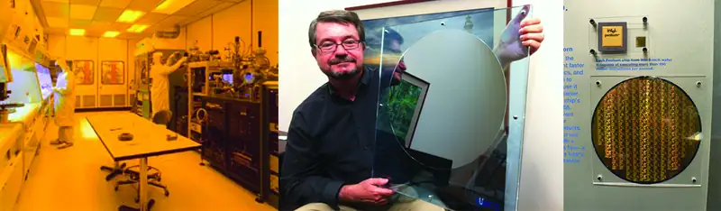
The development of the periodic table in the mid-1800s came from observations that there was a periodic relationship between the properties of the elements. Chemists, who have an understanding of the variations of these properties, have been able to use this knowledge to solve a wide variety of technical challenges. For example, silicon and other semiconductors form the backbone of modern electronics because of our ability to fine-tune the electrical properties of these materials. This chapter explores important properties of representative metals, metalloids, and nonmetals in the periodic table.
18.1 Periodicity¶
Learning Objectives
By the end of this section, you will be able to:
- Classify elements
- Make predictions about the periodicity properties of the representative elements
We begin this section by examining the behaviors of representative metals in relation to their positions in the periodic table. The primary focus of this section will be the application of periodicity to the representative metals.
It is possible to divide elements into groups according to their electron configurations. The representative elements are elements where the s and p orbitals are filling. The transition elements are elements where the d orbitals (groups 3–11 on the periodic table) are filling, and the inner transition metals are the elements where the f orbitals are filling. The d orbitals fill with the elements in group 11; therefore, the elements in group 12 qualify as representative elements because the last electron enters an s orbital. Metals among the representative elements are the representative metals. Metallic character results from an element’s ability to lose its outer valence electrons and results in high thermal and electrical conductivity, among other physical and chemical properties. There are 20 nonradioactive representative metals in groups 1, 2, 3, 12, 13, 14, and 15 of the periodic table (the elements shaded in yellow in Figure 18.2). The radioactive elements copernicium, flerovium, polonium, and livermorium are also metals but are beyond the scope of this chapter.
In addition to the representative metals, some of the representative elements are metalloids. A metalloid is an element that has properties that are between those of metals and nonmetals; these elements are typically semiconductors.
The remaining representative elements are nonmetals. Unlike metals, which typically form cations and ionic compounds (containing ionic bonds), nonmetals tend to form anions or molecular compounds. In general, the combination of a metal and a nonmetal produces a salt. A salt is an ionic compound consisting of cations and anions.
![The Periodic Table of Elements is shown. The 18 columns are labeled “Group” and the 7 rows are labeled “Period.” Below the table to the right is a box labeled “Color Code” with different colors for representative metals, transition and inner transition metals, radioactive elements, metalloids, and nonmetals, as well as solids, liquids, and gases. Each element will be described in this order: atomic number; name; symbol; whether it is a representative metal, transition and inner transition metal, radioactive element, metalloid, or nonmetal; whether it is a solid, liquid, or gas; and atomic mass. Beginning at the top left of the table, or period 1, group 1, is a box containing “1; hydrogen; H; nonmetal; gas; and 1.008.” There is only one other element box in period 1, group 18, which contains “2; helium; H e; nonmetal; gas; and 4.003.” Period 2, group 1 contains “3; lithium; L i; representative metal; solid; and 6.94” Group 2 contains “4; beryllium; B e; representative metal; solid; and 9.012.” Groups 3 through 12 are skipped and group 13 contains “5; boron; B; metalloid; solid; 10.81.” Group 14 contains “6; carbon; C; nonmetal; solid; and 12.01.” Group 15 contains “7; nitrogen; N; nonmetal; gas; and 14.01.” Group 16 contains “8; oxygen; O; nonmetal; gas; and 16.00.” Group 17 contains “9; fluorine; F; nonmetal; gas; and 19.00.” Group 18 contains “10; neon; N e; nonmetal; gas; and 20.18.” Period 3, group 1 contains “11; sodium; N a; representative metal; solid; and 22.99.” Group 2 contains “12; magnesium; M g; representative metal; solid; and 24.31.” Groups 3 through 12 are skipped again in period 3 and group 13 contains “13; aluminum; A l; representative metal; solid; and 26.98.” Group 14 contains “14; silicon; S i; metalloid; solid; and 28.09.” Group 15 contains “15; phosphorous; P; nonmetal; solid; and 30.97.” Group 16 contains “16; sulfur; S; nonmetal; solid; and 32.06.” Group 17 contains “17; chlorine; C l; nonmetal; gas; and 35.45.” Group 18 contains “18; argon; A r; nonmetal; gas; and 39.95.” Period 4, group 1 contains “19; potassium; K; representative metal; solid; and 39.10.” Group 2 contains “20; calcium; C a; representative metal; solid; and 40.08.” Group 3 contains “21; scandium; S c; transition and inner transition metal; solid; and 44.96.” Group 4 contains “22; titanium; T i; transition and inner transition metal; solid; and 47.87.” Group 5 contains “23; vanadium; V; transition and inner transition metal; solid; and 50.94.” Group 6 contains “24; chromium; C r; transition and inner transition metal; solid; and 52.00.” Group 7 contains “25; manganese; M n; transition and inner transition metal; solid; and 54.94.” Group 8 contains “26; iron; F e; transition and inner transition metal; solid; and 55.85.” Group 9 contains “27; cobalt; C o; transition and inner transition metal; solid; and 58.93.” Group 10 contains “28; nickel; N i; transition and inner transition metal; solid; and 58.69.” Group 11 contains “29; copper; C u; transition and inner transition metal; solid; and 63.55.” Group 12 contains “30; zinc; Z n; transition and inner transition metal; solid; and 65.38.” Group 13 contains “31; gallium; G a; representative metal; solid; and 69.72.” Group 14 contains “32; germanium; G e; metalloid; solid; and 72.63.” Group 15 contains “33; arsenic; A s; metalloid; solid; and 74.92.” Group 16 contains “34; selenium; S e; nonmetal; solid; and 78.97.” Group 17 contains “35; bromine; B r; nonmetal; liquid; and 79.90.” Group 18 contains “36; krypton; K r; nonmetal; gas; and 83.80.” Period 5, group 1 contains “37; rubidium; R b; representative metal; solid; and 85.47.” Group 2 contains “38; strontium; S r; representative metal; solid; and 87.62.” Group 3 contains “39; yttrium; Y; transition and inner transition metal; solid; and 88.91.” Group 4 contains “40; zirconium; Z r; transition and inner transition metal; solid; and 91.22.” Group 5 contains “41; niobium; N b; transition and inner transition metal; solid; and 92.91.” Group 6 contains “42; molybdenum; M o; transition and inner transition metal; solid; and 95.95.” Group 7 contains “43; technetium; T c; radioactive element; solid; and 97.” Group 8 contains “44; ruthenium; R u; transition and inner transition metal; solid; and 101.1.” Group 9 contains “45; rhodium; R h; transition and inner transition metal; solid; and 102.9.” Group 10 contains “46; palladium; P d; transition and inner transition metal; solid; and 106.4.” Group 11 contains “47; silver; A g; transition and inner transition metal; solid; and 107.9.” Group 12 contains “48; cadmium; C d; transition and inner transition metal; solid; and 112.4.” Group 13 contains “49; indium; I n; representative metal; solid; and 114.8.” Group 14 contains “50; tin; S n; representative metal; solid; and 118.7.” Group 15 contains “51; antimony; S b; metalloid; solid; and 121.8.” Group 16 contains “52; tellurium; T e; metalloid; solid; and 127.6.” Group 17 contains “53; iodine; I; nonmetal; solid; and 126.9.” Group 18 contains “54; xenon; X e; nonmetal; gas; and 131.3.” Period 6, group 1 contains “55; cesium; C s; representative metal; solid; and 132.9.” Group 2 contains “56; barium; B a; representative metal; solid; and 137.3.” Group 3 breaks the pattern. The box has a large arrow pointing to a row of elements below the table with atomic numbers ranging from 57-71. In sequential order by atomic number, the first box in this row contains “57; lanthanum; L a; representative metal; solid; and 138.9.” To its right, the next is “58; cerium; C e; representative metal; solid; and 140.1.” Next is “59; praseodymium; P r; representative metal; solid; and 140.9.” Next is “60; neodymium; N d; representative metal; solid; and 144.2.” Next is “61; promethium; P m; radioactive element; solid; and 145.” Next is “62; samarium; S m; representative metal; solid; and 150.4.” Next is “63; europium; E u; representative metal; solid; and 152.0.” Next is “64; gadolinium; G d; representative metal; solid; and 157.3.” Next is “65; terbium; T b; representative metal; solid; and 158.9.” Next is “66; dysprosium; D y; representative metal; solid; and 162.5.” Next is “67; holmium; H o; representative metal; solid; and 164.9.” Next is “68; erbium; E r; representative metal; solid; and 167.3.” Next is “69; thulium; T m; representative metal; solid; and 168.9.” Next is “70; ytterbium; Y b; representative metal; solid; and 173.1.” The last in this special row is “71; lutetium; L u; representative metal; solid; and 175.0.” Continuing in period 6, group 4 contains “72; hafnium; H f; transition and inner transition metal; solid; and 178.5.” Group 5 contains “73; tantalum; T a; transition and inner transition metal; solid; and 180.9.” Group 6 contains “74; tungsten; W; transition and inner transition metal; solid; and 183.8.” Group 7 contains “75; rhenium; R e; transition and inner transition metal; solid; and 186.2.” Group 8 contains “76; osmium; O s; transition and inner transition metal; solid; and 190.2.” Group 9 contains “77; iridium; I r; transition and inner transition metal; solid; and 192.2.” Group 10 contains “78; platinum; P t; transition and inner transition metal; solid; and 195.1.” Group 11 contains “79; gold; A u; transition and inner transition metal; solid; and 197.0.” Group 12 contains “80; mercury; H g; transition and inner transition metal; liquid; and 200.6.” Group 13 contains “81; thallium; T l; representative metal; solid; and 204.4.” Group 14 contains “82; lead; P b; representative metal; solid; and 207.2.” Group 15 contains “83; bismuth; B i; representative metal; solid; and 209.0.” Group 16 contains “84; polonium; P o; radioactive element; solid; and 209.” Group 17 contains “85; astatine; A t; radioactive element; solid; and 210.” Group 18 contains “86; radon; R n; radioactive element; gas; and 222.” Period 7, group 1 contains “87; francium; F r; radioactive element; solid; and 223.” Group 2 contains “88; radium; R a; radioactive element; solid; and 226.” Group 3 breaks the pattern much like what occurs in period 6. A large arrow points from the box in period 7, group 3 to a special row containing the elements with atomic numbers ranging from 89-103, just below the row which contains atomic numbers 57-71. In sequential order by atomic number, the first box in this row contains “89; actinium; A c; radioactive element; solid; and 227.” To its right, the next is “90; thorium; T h; radioactive element; solid; and 232.0.” Next is “91; protactinium; P a; radioactive element; solid; and 231.0.” Next is “92; uranium; U; radioactive element; solid; and 238.0.” Next is “93; neptunium; N p; radioactive element; solid; and N p.” Next is “94; plutonium; P u; radioactive element; solid; and 244.” Next is “95; americium; A m; radioactive element; solid; and 243.” Next is “96; curium; C m; radioactive element; solid; and 247.” Next is “97; berkelium; B k; radioactive element; solid; and 247.” Next is “98; californium; C f; radioactive element; solid; and 251.” Next is “99; einsteinium; E s; radioactive element; solid; and 252.” Next is “100; fermium; F m; radioactive element; solid; and 257.” Next is “101; mendelevium; M d; radioactive element; solid; and 258.” Next is “102; nobelium; N o; radioactive element; solid; and 259.” The last in this special row is “103; lawrencium; L r; radioactive element; solid; and 262.” Continuing in period 7, group 4 contains “104; rutherfordium; R f; transition and inner transition metal; solid; and 267.” Group 5 contains “105; dubnium; D b; transition and inner transition metal; solid; and 270.” Group 6 contains “106; seaborgium; S g; transition and inner transition metal; solid; and 271.” Group 7 contains “107; bohrium; B h; transition and inner transition metal; solid; and 270.” Group 8 contains “108; hassium; H s; transition and inner transition metal; solid; and 277.” Group 9 contains “109; meitnerium; M t; radioactive element; solid; and 276.” Group 10 contains “110; darmstadtium; D s; radioactive element; solid; and 281.” Group 11 contains “111; roentgenium; R g; radioactive element; solid; and 282.” Group 12 contains “112; copernicium; C n; radioactive element; liquid; and 285.” Group 13 contains “113; ununtrium; U u t; radioactive element; solid; and 285.” Group 14 contains “114; flerovium; F l; radioactive element; solid; and 289.” Group 15 contains “115; ununpentium; U u p; radioactive element; solid; and 288.” Group 16 contains “116; livermorium; L v; radioactive element; solid; and 293.” Group 17 contains “117; ununseptium; U u s; radioactive; solid; and 294.” Group 18 contains “118; ununoctium; U u o; radioactive element; solid; and 294.”](img/cnx-chem-18-01-periodicpu3.webp)
Most of the representative metals do not occur naturally in an uncombined state because they readily react with water and oxygen in the air. However, it is possible to isolate elemental beryllium, magnesium, zinc, cadmium, mercury, aluminum, tin, and lead from their naturally occurring minerals and use them because they react very slowly with air. Part of the reason why these elements react slowly is that these elements react with air to form a protective coating. The formation of this protective coating is passivation. The coating is a nonreactive film of oxide or some other compound. Elemental magnesium, aluminum, zinc, and tin are important in the fabrication of many familiar items, including wire, cookware, foil, and many household and personal objects. Although beryllium, cadmium, mercury, and lead are readily available, there are limitations in their use because of their toxicity.
Group 1: The Alkali Metals¶
The alkali metals lithium, sodium, potassium, rubidium, cesium, and francium constitute group 1 of the periodic table. Although hydrogen is in group 1 (and also in group 17), it is a nonmetal and deserves separate consideration later in this chapter. The name alkali metal is in reference to the fact that these metals and their oxides react with water to form very basic (alkaline) solutions.
The properties of the alkali metals are similar to each other as expected for elements in the same family. The alkali metals have the largest atomic radii and the lowest first ionization energy in their periods. This combination makes it very easy to remove the single electron in the outermost (valence) shell of each. The easy loss of this valence electron means that these metals readily form stable cations with a charge of 1+. Their reactivity increases with increasing atomic number due to the ease of losing the lone valence electron (decreasing ionization energy). Since oxidation is so easy, the reverse, reduction, is difficult, which explains why it is hard to isolate the elements. The solid alkali metals are very soft; lithium, shown in Figure 18.3, has the lowest density of any metal (0.5 g/cm3).
The alkali metals all react vigorously with water to form hydrogen gas and a basic solution of the metal hydroxide. This means they are easier to oxidize than is hydrogen. As an example, the reaction of lithium with water is:
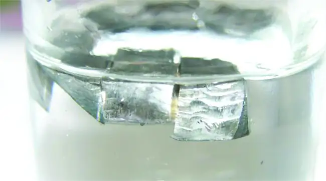
Alkali metals react directly with all the nonmetals (except the noble gases) to yield binary ionic compounds containing 1+ metal ions. These metals are so reactive that it is necessary to avoid contact with both moisture and oxygen in the air. Therefore, they are stored in sealed containers under mineral oil, as shown in Figure 18.4, to prevent contact with air and moisture. The pure metals never exist free (uncombined) in nature due to their high reactivity. In addition, this high reactivity makes it necessary to prepare the metals by electrolysis of alkali metal compounds.
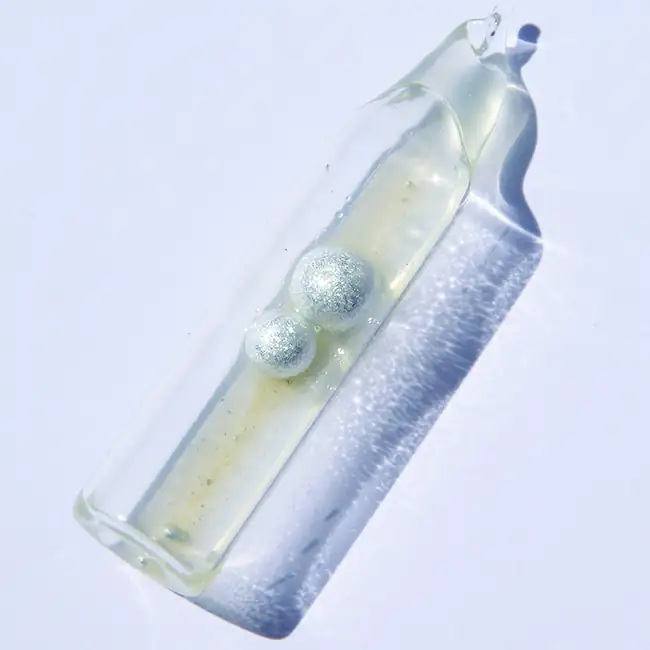
Unlike many other metals, the reactivity and softness of the alkali metals make these metals unsuitable for structural applications. However, there are applications where the reactivity of the alkali metals is an advantage. For example, the production of metals such as titanium and zirconium relies, in part, on the ability of sodium to reduce compounds of these metals. The manufacture of many organic compounds, including certain dyes, drugs, and perfumes, utilizes reduction by lithium or sodium.
Sodium and its compounds impart a bright yellow color to a flame, as seen in Figure 18.5. Passing an electrical discharge through sodium vapor also produces this color. In both cases, this is an example of an emission spectrum as discussed in the chapter on electronic structure. Streetlights sometime employ sodium vapor lights because the sodium vapor penetrates fog better than most other light. This is because the fog does not scatter yellow light as much as it scatters white light. The other alkali metals and their salts also impart color to a flame. Lithium creates a bright, crimson color, whereas the others create a pale, violet color.
Link to Learning
This video demonstrates the reactions of the alkali metals with water.
Group 2: The Alkaline Earth Metals¶
The alkaline earth metals (beryllium, magnesium, calcium, strontium, barium, and radium) constitute group 2 of the periodic table. The name alkaline metal comes from the fact that the oxides of the heavier members of the group react with water to form alkaline solutions. The nuclear charge increases when going from group 1 to group 2. Because of this charge increase, the atoms of the alkaline earth metals are smaller and have higher first ionization energies than the alkali metals within the same period. The higher ionization energy makes the alkaline earth metals less reactive than the alkali metals; however, they are still very reactive elements. Their reactivity increases, as expected, with increasing size and decreasing ionization energy. In chemical reactions, these metals readily lose both valence electrons to form compounds in which they exhibit an oxidation state of 2+. Due to their high reactivity, it is common to produce the alkaline earth metals, like the alkali metals, by electrolysis. Even though the ionization energies are low, the two metals with the highest ionization energies (beryllium and magnesium) do form compounds that exhibit some covalent characters. Like the alkali metals, the heavier alkaline earth metals impart color to a flame. As in the case of the alkali metals, this is part of the emission spectrum of these elements. Calcium and strontium produce shades of red, whereas barium produces a green color.
Magnesium is a silver-white metal that is malleable and ductile at high temperatures. Passivation decreases the reactivity of magnesium metal. Upon exposure to air, a tightly adhering layer of magnesium oxycarbonate forms on the surface of the metal and inhibits further reaction. (The carbonate comes from the reaction of carbon dioxide in the atmosphere.) Magnesium is the lightest of the widely used structural metals, which is why most magnesium production is for lightweight alloys.
Magnesium (shown in Figure 18.6), calcium, strontium, and barium react with water and air. At room temperature, barium shows the most vigorous reaction. The products of the reaction with water are hydrogen and the metal hydroxide. The formation of hydrogen gas indicates that the heavier alkaline earth metals are better reducing agents (more easily oxidized) than is hydrogen. As expected, these metals react with both acids and nonmetals to form ionic compounds. Unlike most salts of the alkali metals, many of the common salts of the alkaline earth metals are insoluble in water because of the high lattice energies of these compounds, containing a divalent metal ion.
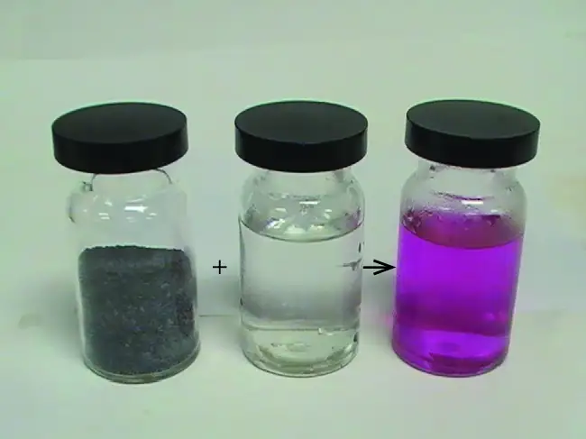
The potent reducing power of hot magnesium is useful in preparing some metals from their oxides. Indeed, magnesium’s affinity for oxygen is so great that burning magnesium reacts with carbon dioxide, producing elemental carbon:
For this reason, a CO2 fire extinguisher will not extinguish a magnesium fire. Additionally, the brilliant white light emitted by burning magnesium makes it useful in flares and fireworks.
Group 12¶
The elements in group 12 are transition elements; however, the last electron added is not a d electron, but an s electron. Since the last electron added is an s electron, these elements qualify as representative metals, or post-transition metals. The group 12 elements behave more like the alkaline earth metals than transition metals. Group 12 contains the four elements zinc, cadmium, mercury, and copernicium. Each of these elements has two electrons in its outer shell (ns2). When atoms of these metals form cations with a charge of 2+, where the two outer electrons are lost, they have pseudo-noble gas electron configurations. Mercury is sometimes an exception because it also exhibits an oxidation state of 1+ in compounds that contain a diatomic \(\text{Hg}_{2}{}^{2+}\) ion. In their elemental forms and in compounds, cadmium and mercury are both toxic.
Zinc is the most reactive in group 12, and mercury is the least reactive. (This is the reverse of the reactivity trend of the metals of groups 1 and 2, in which reactivity increases down a group. The increase in reactivity with increasing atomic number only occurs for the metals in groups 1 and 2.) The decreasing reactivity is due to the formation of ions with a pseudo-noble gas configuration and to other factors that are beyond the scope of this discussion. The chemical behaviors of zinc and cadmium are quite similar to each other but differ from that of mercury.
Zinc and cadmium have lower reduction potentials than hydrogen, and, like the alkali metals and alkaline earth metals, they will produce hydrogen gas when they react with acids. The reaction of zinc with hydrochloric acid, shown in Figure 18.7, is:
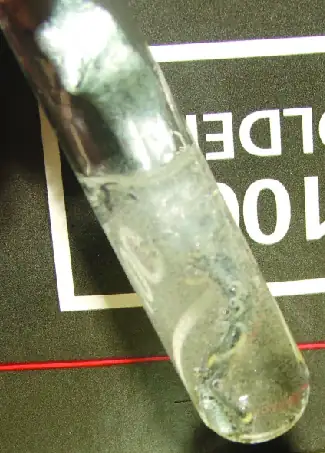
Zinc is a silvery metal that quickly tarnishes to a blue-gray appearance. This change in color is due to an adherent coating of a basic carbonate, Zn2(OH)2CO3, which passivates the metal to inhibit further corrosion. Dry cell and alkaline batteries contain a zinc anode. Brass (Cu and Zn) and some bronze (Cu, Sn, and sometimes Zn) are important zinc alloys. About half of zinc production serves to protect iron and other metals from corrosion. This protection may take the form of a sacrificial anode (also known as a galvanic anode, which is a means of providing cathodic protection for various metals) or as a thin coating on the protected metal. Galvanized steel is steel with a protective coating of zinc.
Chemistry in Everyday Life: Sacrificial Anodes
A sacrificial anode, or galvanic anode, is a means of providing cathodic protection of various metals. Cathodic protection refers to the prevention of corrosion by converting the corroding metal into a cathode. As a cathode, the metal resists corrosion, which is an oxidation process. Corrosion occurs at the sacrificial anode instead of at the cathode.
The construction of such a system begins with the attachment of a more active metal (more negative reduction potential) to the metal needing protection. Attachment may be direct or via a wire. To complete the circuit, a salt bridge is necessary. This salt bridge is often seawater or ground water. Once the circuit is complete, oxidation (corrosion) occurs at the anode and not the cathode.
The commonly used sacrificial anodes are magnesium, aluminum, and zinc. Magnesium has the most negative reduction potential of the three and serves best when the salt bridge is less efficient due to a low electrolyte concentration such as in freshwater. Zinc and aluminum work better in saltwater than does magnesium. Aluminum is lighter than zinc and has a higher capacity; however, an oxide coating may passivate the aluminum. In special cases, other materials are useful. For example, iron will protect copper.
Mercury is very different from zinc and cadmium. Mercury is the only metal that is liquid at 25 °C. Many metals dissolve in mercury, forming solutions called amalgams (see the feature on Amalgams), which are alloys of mercury with one or more other metals. Mercury, shown in Figure 18.8, is a nonreactive element that is more difficult to oxidize than hydrogen. Thus, it does not displace hydrogen from acids; however, it will react with strong oxidizing acids, such as nitric acid:
The clear NO initially formed quickly undergoes further oxidation to the reddish brown NO2.
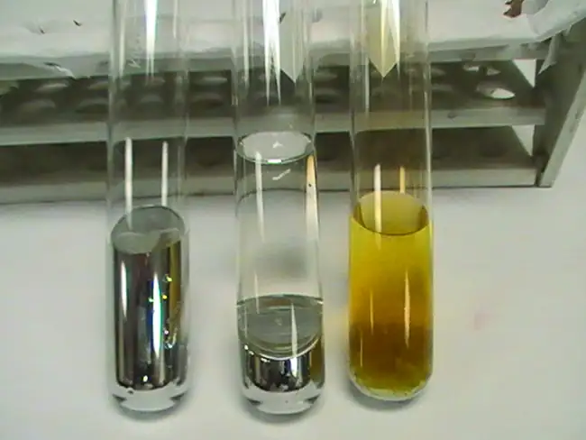
Most mercury compounds decompose when heated. Most mercury compounds contain mercury with a 2+-oxidation state. When there is a large excess of mercury, it is possible to form compounds containing the \(\text{Hg}_{2}{}^{2+}\) ion. All mercury compounds are toxic, and it is necessary to exercise great care in their synthesis.
Chemistry in Everyday Life: Amalgams
An amalgam is an alloy of mercury with one or more other metals. This is similar to considering steel to be an alloy of iron with other metals. Most metals will form an amalgam with mercury, with the main exceptions being iron, platinum, tungsten, and tantalum.
Due to toxicity issues with mercury, there has been a significant decrease in the use of amalgams. Historically, amalgams were important in electrolytic cells and in the extraction of gold. Amalgams of the alkali metals still find use because they are strong reducing agents and easier to handle than the pure alkali metals.
Prospectors had a problem when they found finely divided gold. They learned that adding mercury to their pans collected the gold into the mercury to form an amalgam for easier collection. Unfortunately, losses of small amounts of mercury over the years left many streams in California polluted with mercury.
Dentists use amalgams containing silver and other metals to fill cavities. There are several reasons to use an amalgam including low cost, ease of manipulation, and longevity compared to alternate materials. Dental amalgams are approximately 50% mercury by weight, which, in recent years, has become a concern due to the toxicity of mercury.
After reviewing the best available data, the Food and Drug Administration (FDA) considers amalgam-based fillings to be safe for adults and children over six years of age. Even with multiple fillings, the mercury levels in the patients remain far below the lowest levels associated with harm. Clinical studies have found no link between dental amalgams and health problems. Health issues may not be the same in cases of children under six or pregnant women. The FDA conclusions are in line with the opinions of the Environmental Protection Agency (EPA) and Centers for Disease Control (CDC). The only health consideration noted is that some people are allergic to the amalgam or one of its components.
Group 13¶
Group 13 contains the metalloid boron and the metals aluminum, gallium, indium, and thallium. The lightest element, boron, is semiconducting, and its binary compounds tend to be covalent and not ionic. The remaining elements of the group are metals, but their oxides and hydroxides change characters. The oxides and hydroxides of aluminum and gallium exhibit both acidic and basic behaviors. A substance, such as these two, that will react with both acids and bases is amphoteric. This characteristic illustrates the combination of nonmetallic and metallic behaviors of these two elements. Indium and thallium oxides and hydroxides exhibit only basic behavior, in accordance with the clearly metallic character of these two elements. The melting point of gallium is unusually low (about 30 °C) and will melt in your hand.
Aluminum is amphoteric because it will react with both acids and bases. A typical reaction with an acid is:
The products of the reaction of aluminum with a base depend upon the reaction conditions, with the following being one possibility:
With both acids and bases, the reaction with aluminum generates hydrogen gas.
The group 13 elements have a valence shell electron configuration of ns2np1. Aluminum normally uses all of its valence electrons when it reacts, giving compounds in which it has an oxidation state of 3+. Although many of these compounds are covalent, others, such as AlF3 and Al2(SO4)3, are ionic. Aqueous solutions of aluminum salts contain the cation \({[\text{Al}{(\text{H}_{2}\text{O})}_{6}]}^{3+},\) abbreviated as Al3+(aq). Gallium, indium, and thallium also form ionic compounds containing M3+ ions. These three elements exhibit not only the expected oxidation state of 3+ from the three valence electrons but also an oxidation state (in this case, 1+) that is two below the expected value. This phenomenon, the inert pair effect, refers to the formation of a stable ion with an oxidation state two lower than expected for the group. The pair of electrons is the valence s orbital for those elements. In general, the inert pair effect is important for the lower p-block elements. In an aqueous solution, the Tl+(aq) ion is more stable than is Tl3+(aq). In general, these metals will react with air and water to form 3+ ions; however, thallium reacts to give thallium(I) derivatives. The metals of group 13 all react directly with nonmetals such as sulfur, phosphorus, and the halogens, forming binary compounds.
The metals of group 13 (Al, Ga, In, and Tl) are all reactive. However, passivation occurs as a tough, hard, thin film of the metal oxide forms upon exposure to air. Disruption of this film may counter the passivation, allowing the metal to react. One way to disrupt the film is to expose the passivated metal to mercury. Some of the metal dissolves in the mercury to form an amalgam, which sheds the protective oxide layer to expose the metal to further reaction. The formation of an amalgam allows the metal to react with air and water.
Link to Learning
Although easily oxidized, the passivation of aluminum makes it very useful as a strong, lightweight building material. Because of the formation of an amalgam, mercury is corrosive to structural materials made of aluminum. This video demonstrates how the integrity of an aluminum beam can be destroyed by the addition of a small amount of elemental mercury.
The most important uses of aluminum are in the construction and transportation industries, and in the manufacture of aluminum cans and aluminum foil. These uses depend on the lightness, toughness, and strength of the metal, as well as its resistance to corrosion. Because aluminum is an excellent conductor of heat and resists corrosion, it is useful in the manufacture of cooking utensils.
Aluminum is a very good reducing agent and may replace other reducing agents in the isolation of certain metals from their oxides. Although more expensive than reduction by carbon, aluminum is important in the isolation of Mo, W, and Cr from their oxides.
Group 14¶
The metallic members of group 14 are tin, lead, and flerovium. Carbon is a typical nonmetal. The remaining elements of the group, silicon and germanium, are examples of semimetals or metalloids. Tin and lead form the stable divalent cations, Sn2+ and Pb2+, with oxidation states two below the group oxidation state of 4+. The stability of this oxidation state is a consequence of the inert pair effect. Tin and lead also form covalent compounds with a formal 4+-oxidation state. For example, SnCl4 and PbCl4 are low-boiling covalent liquids.
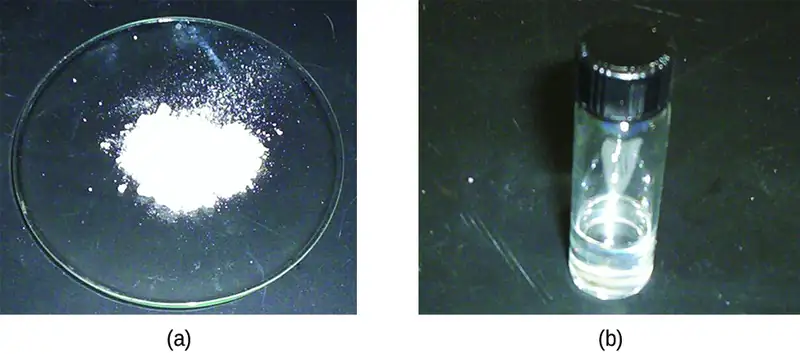
Tin reacts readily with nonmetals and acids to form tin(II) compounds (indicating that it is more easily oxidized than hydrogen) and with nonmetals to form either tin(II) or tin(IV) compounds (shown in Figure 18.9), depending on the stoichiometry and reaction conditions. Lead is less reactive. It is only slightly easier to oxidize than hydrogen, and oxidation normally requires a hot concentrated acid.
Many of these elements exist as allotropes. Allotropes are two or more forms of the same element in the same physical state with different chemical and physical properties. There are two common allotropes of tin. These allotropes are grey (brittle) tin and white tin. As with other allotropes, the difference between these forms of tin is in the arrangement of the atoms. White tin is stable above 13.2 °C and is malleable like other metals. At low temperatures, gray tin is the more stable form. Gray tin is brittle and tends to break down to a powder. Consequently, articles made of tin will disintegrate in cold weather, particularly if the cold spell is lengthy. The change progresses slowly from the spot of origin, and the gray tin that is first formed catalyzes further change. In a way, this effect is similar to the spread of an infection in a plant or animal body, leading people to call this process tin disease or tin pest.
The principal use of tin is in the coating of steel to form tin plate-sheet iron, which constitutes the tin in tin cans. Important tin alloys are bronze (Cu and Sn) and solder (Sn and Pb). Lead is important in the lead storage batteries in automobiles.
Group 15¶
Bismuth, the heaviest member of group 15, is a less reactive metal than the other representative metals. It readily gives up three of its five valence electrons to active nonmetals to form the tri-positive ion, Bi3+. It forms compounds with the group oxidation state of 5+ only when treated with strong oxidizing agents. The stability of the 3+-oxidation state is another example of the inert pair effect.
18.2 Occurrence and Preparation of the Representative Metals¶
Learning Objectives
By the end of this section, you will be able to:
- Identify natural sources of representative metals
- Describe electrolytic and chemical reduction processes used to prepare these elements from natural sources
Because of their reactivity, we do not find most representative metals as free elements in nature. However, compounds that contain ions of most representative metals are abundant. In this section, we will consider the two common techniques used to isolate the metals from these compounds—electrolysis and chemical reduction.
These metals primarily occur in minerals, with lithium found in silicate or phosphate minerals, and sodium and potassium found in salt deposits from evaporation of ancient seas and in silicates. The alkaline earth metals occur as silicates and, with the exception of beryllium, as carbonates and sulfates. Beryllium occurs as the mineral beryl, Be3Al2Si6O18, which, with certain impurities, may be either the gemstone emerald or aquamarine. Magnesium is in seawater and, along with the heavier alkaline earth metals, occurs as silicates, carbonates, and sulfates. Aluminum occurs abundantly in many types of clay and in bauxite, an impure aluminum oxide hydroxide. The principle tin ore is the oxide cassiterite, SnO2, and the principle lead and thallium ores are the sulfides or the products of weathering of the sulfides. The remaining representative metals occur as impurities in zinc or aluminum ores.
Electrolysis¶
Ions of metals in of groups 1 and 2, along with aluminum, are very difficult to reduce; therefore, it is necessary to prepare these elements by electrolysis, an important process discussed in the chapter on electrochemistry. Briefly, electrolysis involves using electrical energy to drive unfavorable chemical reactions to completion; it is useful in the isolation of reactive metals in their pure forms. Sodium, aluminum, and magnesium are typical examples.
The Preparation of Sodium¶
The most important method for the production of sodium is the electrolysis of molten sodium chloride; the set-up is a Downs cell, shown in Figure 18.10. The reaction involved in this process is:
The electrolysis cell contains molten sodium chloride (melting point 801 °C), to which calcium chloride has been added to lower the melting point to 600 °C (a colligative effect). The passage of a direct current through the cell causes the sodium ions to migrate to the negatively charged cathode and pick up electrons, reducing the ions to sodium metal. Chloride ions migrate to the positively charged anode, lose electrons, and undergo oxidation to chlorine gas. The overall cell reaction comes from adding the following reactions:
Separation of the molten sodium and chlorine prevents recombination. The liquid sodium, which is less dense than molten sodium chloride, floats to the surface and flows into a collector. The gaseous chlorine goes to storage tanks. Chlorine is also a valuable product.
![A diagram is shown. At the center of the diagram is a T-shaped structure labeled, “Anode ( positive sign ),” that is on a mesh-like background labeled, “Iron screen.” The anode is connected to a box labeled, “Voltage source,” by a line, and the voltage source is connected to one of two L-shaped structures that surround the anode. They are labeled, “Cathode ( negative sign ).” Above the cathode on the right side of the diagram is a tube connected to a collection chamber labeled, “N a metal,” that has a lower outlet labeled, “N a outlet.” Surrounding all of these components is a blue background labeled, “Molten N a C l,” and a series of tubes that form a square outside the diagram. They have an opening in the upper right corner labeled, “Inlet for N a C l.” At the top of the diagram is a large tube with an upward-facing arrow drawn on it. The tube turns right, has a right-facing arrow on it, and is labeled, “C l subscript 2 outlet.”](img/cnx-chem-18-02-downscell.webp)
The Preparation of Aluminum¶
The preparation of aluminum utilizes a process invented in 1886 by Charles M. Hall, who began to work on the problem while a student at Oberlin College in Ohio. Paul L. T. Héroult discovered the process independently a month or two later in France. In honor to the two inventors, this electrolysis cell is known as the Hall–Héroult cell. The Hall–Héroult cell is an electrolysis cell for the production of aluminum. Figure 18.11 illustrates the Hall–Héroult cell.
The production of aluminum begins with the purification of bauxite, the most common source of aluminum. The reaction of bauxite, AlO(OH), with hot sodium hydroxide forms soluble sodium aluminate, while clay and other impurities remain undissolved:
After the removal of the impurities by filtration, the addition of acid to the aluminate leads to the reprecipitation of aluminum hydroxide:
The next step is to remove the precipitated aluminum hydroxide by filtration. Heating the hydroxide produces aluminum oxide, Al2O3, which dissolves in a molten mixture of cryolite, Na3AlF6, and calcium fluoride, CaF2. Electrolysis of this solution takes place in a cell like that shown in Figure 18.11. Reduction of aluminum ions to the metal occurs at the cathode, while oxygen, carbon monoxide, and carbon dioxide form at the anode.
![A diagram is shown. At the center of the diagram are two black squares, each labeled, “Carbon anode ( positive sign ),” and connected by forked tubes to a horizontal tube labeled with a positive sign. The carbon anodes are submerged in a green liquid labeled, “A l subscript 2 O subscript 3 dissolved in molten N a subscript 3 A l F subscript 6.” It is held in place by a three-sided, double layered container which is labeled, “Steel sheet,” on the outer layer and, “Ceramic,” on the inner layer. The carbon anodes are surrounded by bubbles labeled, “Bubbles of O subscript 2, C O, and C O subscript 2.” Below the green liquids lies a silver layer labeled, “Molten aluminum,” and a black layer labeled, “Carbon cathode ( negative sign ).” Above the diagram is an outlet tube labeled with an upward-facing arrow and the words, “H F and particulates exhaust to filter plant.”](img/cnx-chem-18-02-hallhercell.webp)
The Preparation of Magnesium¶
Magnesium is the other metal that is isolated in large quantities by electrolysis. Seawater, which contains approximately 0.5% magnesium chloride, serves as the major source of magnesium. Addition of calcium hydroxide to seawater precipitates magnesium hydroxide. The addition of hydrochloric acid to magnesium hydroxide, followed by evaporation of the resultant aqueous solution, leaves pure magnesium chloride. The electrolysis of molten magnesium chloride forms liquid magnesium and chlorine gas:
Some production facilities have moved away from electrolysis completely. In the next section, we will see how the Pidgeon process leads to the chemical reduction of magnesium.
Chemical Reduction¶
It is possible to isolate many of the representative metals by chemical reduction using other elements as reducing agents. In general, chemical reduction is much less expensive than electrolysis, and for this reason, chemical reduction is the method of choice for the isolation of these elements. For example, it is possible to produce potassium, rubidium, and cesium by chemical reduction, as it is possible to reduce the molten chlorides of these metals with sodium metal. This may be surprising given that these metals are more reactive than sodium; however, the metals formed are more volatile than sodium and can be distilled for collection. The removal of the metal vapor leads to a shift in the equilibrium to produce more metal (see how reactions can be driven in the discussions of Le Châtelier’s principle in the chapter on fundamental equilibrium concepts).
The production of magnesium, zinc, and tin provide additional examples of chemical reduction.
The Preparation of Magnesium¶
The Pidgeon process involves the reaction of magnesium oxide with elemental silicon at high temperatures to form pure magnesium:
Although this reaction is unfavorable in terms of thermodynamics, the removal of the magnesium vapor produced takes advantage of Le Châtelier’s principle to continue the forward progress of the reaction. Over 75% of the world’s production of magnesium, primarily in China, comes from this process.
The Preparation of Zinc¶
Zinc ores usually contain zinc sulfide, zinc oxide, or zinc carbonate. After separation of these compounds from the ores, heating in air converts the ore to zinc oxide by one of the following reactions:
Carbon, in the form of coal, reduces the zinc oxide to form zinc vapor:
The zinc can be distilled (boiling point 907 °C) and condensed. This zinc contains impurities of cadmium (767 °C), iron (2862 °C), lead (1750 °C), and arsenic (613 °C). Careful redistillation produces pure zinc. Arsenic and cadmium are distilled from the zinc because they have lower boiling points. At higher temperatures, the zinc is distilled from the other impurities, mainly lead and iron.
The Preparation of Tin¶
The ready reduction of tin(IV) oxide by the hot coals of a campfire accounts for the knowledge of tin in the ancient world. In the modern process, the roasting of tin ores containing SnO2 removes contaminants such as arsenic and sulfur as volatile oxides. Treatment of the remaining material with hydrochloric acid removes the oxides of other metals. Heating the purified ore with carbon at temperature above 1000 °C produces tin:
The molten tin collects at the bottom of the furnace and is drawn off and cast into blocks.
18.3 Structure and General Properties of the Metalloids¶
Learning Objectives
By the end of this section, you will be able to:
- Describe the general preparation, properties, and uses of the metalloids
- Describe the preparation, properties, and compounds of boron and silicon
A series of six elements called the metalloids separate the metals from the nonmetals in the periodic table. The metalloids are boron, silicon, germanium, arsenic, antimony, and tellurium. These elements look metallic; however, they do not conduct electricity as well as metals so they are semiconductors. They are semiconductors because their electrons are more tightly bound to their nuclei than are those of metallic conductors. Their chemical behavior falls between that of metals and nonmetals. For example, the pure metalloids form covalent crystals like the nonmetals, but like the metals, they generally do not form monatomic anions. This intermediate behavior is in part due to their intermediate electronegativity values. In this section, we will briefly discuss the chemical behavior of metalloids and deal with two of these elements—boron and silicon—in more detail.
The metalloid boron exhibits many similarities to its neighbor carbon and its diagonal neighbor silicon. All three elements form covalent compounds. However, boron has one distinct difference in that its 2s22p1 outer electron structure gives it one less valence electron than it has valence orbitals. Although boron exhibits an oxidation state of +3 in most of its stable compounds, this electron deficiency provides boron with the ability to form other, sometimes fractional, oxidation states, which occur, for example, in the boron hydrides.
Silicon has the valence shell electron configuration 3s23p2, and it commonly forms tetrahedral structures in which it is sp3 hybridized with a formal oxidation state of +4. The major differences between the chemistry of carbon and silicon result from the relative strength of the carbon-carbon bond, carbon’s ability to form stable bonds to itself, and the presence of the empty 3d valence-shell orbitals in silicon. Silicon’s empty d orbitals and boron’s empty p orbital enable tetrahedral silicon compounds and trigonal planar boron compounds to act as Lewis acids. Carbon, on the other hand, has no available valence shell orbitals; tetrahedral carbon compounds cannot act as Lewis acids. Germanium is very similar to silicon in its chemical behavior.
Arsenic and antimony generally form compounds in which an oxidation state of +3 or +5 is exhibited; however, arsenic can form arsenides with an oxidation state of –3. These elements tarnish only slightly in dry air but readily oxidize when warmed. Antimony reacts readily with stoichiometric amounts of fluorine, chlorine, bromine, or iodine, yielding trihalides or, with excess fluorine or chlorine, forming the pentahalides SbF5 and SbCl5. Depending on the stoichiometry, it forms antimony(III) sulfide, Sb2S3, or antimony(V) sulfide, Sb2S5, when heated with sulfur. As expected, the metallic nature of the element is greater than that of arsenic, which lies immediately above it in group 15.
Tellurium combines directly with most elements. The most stable tellurium compounds are the tellurides—salts of Te2− formed with active metals and lanthanides—and compounds with oxygen, fluorine, and chlorine, in which tellurium normally exhibits an oxidation state +2 or +4. Although tellurium(VI) compounds are known (for example, TeF6), there is a marked resistance to oxidation to this maximum group oxidation state.
Structures of the Metalloids¶
Covalent bonding is the key to the crystal structures of the metalloids. In this regard, these elements resemble nonmetals in their behavior.
Elemental silicon, germanium, arsenic, antimony, and tellurium are lustrous, metallic-looking solids. Silicon and germanium crystallize with a diamond structure. Each atom within the crystal has covalent bonds to four neighboring atoms at the corners of a regular tetrahedron. Single crystals of silicon and germanium are giant, three-dimensional molecules. There are several allotropes of arsenic with the most stable being layer like and containing puckered sheets of arsenic atoms. Each arsenic atom forms covalent bonds to three other atoms within the sheet. The crystal structure of antimony is similar to that of arsenic, both shown in Figure 18.12. The structures of arsenic and antimony are similar to the structure of graphite, covered later in this chapter. Tellurium forms crystals that contain infinite spiral chains of tellurium atoms. Each atom in the chain bonds to two other atoms.
Link to Learning
Explore a cubic diamond crystal structure.
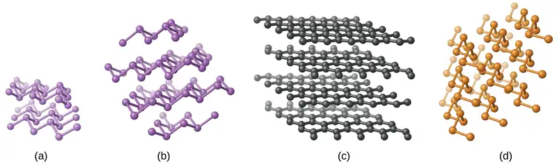
Pure crystalline boron is transparent. The crystals consist of icosahedra, as shown in Figure 18.13, with a boron atom at each corner. In the most common form of boron, the icosahedra pack together in a manner similar to the cubic closest packing of spheres. All boron-boron bonds within each icosahedron are identical and are approximately 176 pm in length. In the different forms of boron, there are different arrangements and connections between the icosahedra.
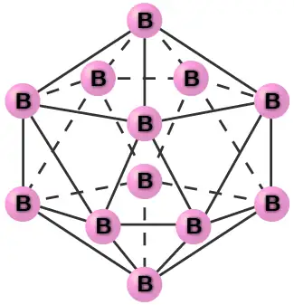
The name silicon is derived from the Latin word for flint, silex. The metalloid silicon readily forms compounds containing Si-O-Si bonds, which are of prime importance in the mineral world. This bonding capability is in contrast to the nonmetal carbon, whose ability to form carbon-carbon bonds gives it prime importance in the plant and animal worlds.
Occurrence, Preparation, and Compounds of Boron and Silicon¶
Boron constitutes less than 0.001% by weight of the earth’s crust. In nature, it only occurs in compounds with oxygen. Boron is widely distributed in volcanic regions as boric acid, B(OH)3, and in dry lake regions, including the desert areas of California, as borates and salts of boron oxyacids, such as borax, Na2B4O7⋅10H2O.
Elemental boron is chemically inert at room temperature, reacting with only fluorine and oxygen to form boron trifluoride, BF3, and boric oxide, B2O3, respectively. At higher temperatures, boron reacts with all nonmetals, except tellurium and the noble gases, and with nearly all metals; it oxidizes to B2O3 when heated with concentrated nitric or sulfuric acid. Boron does not react with nonoxidizing acids. Many boron compounds react readily with water to give boric acid, B(OH)3 (sometimes written as H3BO3).
Reduction of boric oxide with magnesium powder forms boron (95–98.5% pure) as a brown, amorphous powder:
An amorphous substance is a material that appears to be a solid, but does not have a long-range order like a true solid. Treatment with hydrochloric acid removes the magnesium oxide. Further purification of the boron begins with conversion of the impure boron into boron trichloride. The next step is to heat a mixture of boron trichloride and hydrogen:
Silicon makes up nearly one-fourth of the mass of the earth’s crust—second in abundance only to oxygen. The crust is composed almost entirely of minerals in which the silicon atoms are at the center of the silicon-oxygen tetrahedron, which connect in a variety of ways to produce, among other things, chains, layers, and three-dimensional frameworks. These minerals constitute the bulk of most common rocks, soil, and clays. In addition, materials such as bricks, ceramics, and glasses contain silicon compounds.
It is possible to produce silicon by the high-temperature reduction of silicon dioxide with strong reducing agents, such as carbon and magnesium:
Extremely pure silicon is necessary for the manufacture of semiconductor electronic devices. This process begins with the conversion of impure silicon into silicon tetrahalides, or silane (SiH4), followed by decomposition at high temperatures. Zone refining, illustrated in Figure 18.14, completes the purification. In this method, a rod of silicon is heated at one end by a heat source that produces a thin cross-section of molten silicon. Slowly lowering the rod through the heat source moves the molten zone from one end of the rod to other. As this thin, molten region moves, impurities in the silicon dissolve in the liquid silicon and move with the molten region. Ultimately, the impurities move to one end of the rod, which is then cut off.
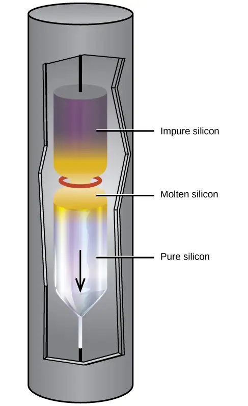
This highly purified silicon, containing no more than one part impurity per million parts of silicon, is the most important element in the computer industry. Pure silicon is necessary in semiconductor electronic devices such as transistors, computer chips, and solar cells.
Like some metals, passivation of silicon occurs due the formation of a very thin film of oxide (primarily silicon dioxide, SiO2). Silicon dioxide is soluble in hot aqueous base; thus, strong bases destroy the passivation. Removal of the passivation layer allows the base to dissolve the silicon, forming hydrogen gas and silicate anions. For example:
Silicon reacts with halogens at high temperatures, forming volatile tetrahalides, such as SiF4.
Unlike carbon, silicon does not readily form double or triple bonds. Silicon compounds of the general formula SiX4, where X is a highly electronegative group, can act as Lewis acids to form six-coordinate silicon. For example, silicon tetrafluoride, SiF4, reacts with sodium fluoride to yield Na2[SiF6], which contains the octahedral \({[\text{SiF}_{6}]}^{2-}\) ion in which silicon is sp3d2 hybridized:
Antimony reacts readily with stoichiometric amounts of fluorine, chlorine, bromine, or iodine, yielding trihalides or, with excess fluorine or chlorine, forming the pentahalides SbF5 and SbCl5. Depending on the stoichiometry, it forms antimony(III) sulfide, Sb2S3, or antimony(V) sulfide when heated with sulfur. As expected, the metallic nature of the element is greater than that of arsenic, which lies immediately above it in group 15.
Boron and Silicon Halides¶
Boron trihalides—BF3, BCl3, BBr3, and BI3—can be prepared by the direct reaction of the elements. These nonpolar molecules contain boron with sp2 hybridization and a trigonal planar molecular geometry. The fluoride and chloride compounds are colorless gasses, the bromide is a liquid, and the iodide is a white crystalline solid.
Except for boron trifluoride, the boron trihalides readily hydrolyze in water to form boric acid and the corresponding hydrohalic acid. Boron trichloride reacts according to the equation:
Boron trifluoride reacts with hydrofluoric acid, to yield a solution of fluoroboric acid, HBF4:
In this reaction, the BF3 molecule acts as the Lewis acid (electron pair acceptor) and accepts a pair of electrons from a fluoride ion:
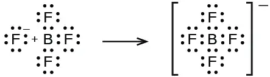
All the tetrahalides of silicon, SiX4, have been prepared. Silicon tetrachloride can be prepared by direct chlorination at elevated temperatures or by heating silicon dioxide with chlorine and carbon:
Silicon tetrachloride is a covalent tetrahedral molecule, which is a nonpolar, low-boiling (57 °C), colorless liquid.
It is possible to prepare silicon tetrafluoride by the reaction of silicon dioxide with hydrofluoric acid:
Hydrofluoric acid is the only common acid that will react with silicon dioxide or silicates. This reaction occurs because the silicon-fluorine bond is the only bond that silicon forms that is stronger than the silicon-oxygen bond. For this reason, it is possible to store all common acids, other than hydrofluoric acid, in glass containers.
Except for silicon tetrafluoride, silicon halides are extremely sensitive to water. Upon exposure to water, SiCl4 reacts rapidly with hydroxide groups, replacing all four chlorine atoms to produce unstable orthosilicic acid, Si(OH)4 or H4SiO4, which slowly decomposes into SiO2.
Boron and Silicon Oxides and Derivatives¶
Boron burns at 700 °C in oxygen, forming boric oxide, B2O3. Boric oxide is necessary for the production of heat-resistant borosilicate glass, like that shown in Figure 18.15 and certain optical glasses. Boric oxide dissolves in hot water to form boric acid, B(OH)3:
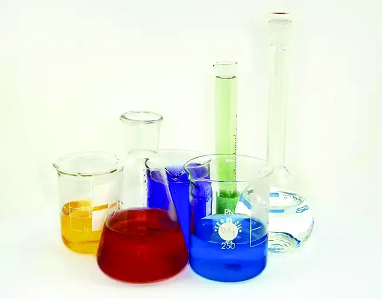
The boron atom in B(OH)3 is sp2 hybridized and is located at the center of an equilateral triangle with oxygen atoms at the corners. In solid B(OH)3, hydrogen bonding holds these triangular units together. Boric acid, shown in Figure 18.16, is a very weak acid that does not act as a proton donor but rather as a Lewis acid, accepting an unshared pair of electrons from the Lewis base OH−:
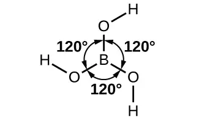
Heating boric acid to 100 °C causes molecules of water to split out between pairs of adjacent –OH groups to form metaboric acid, HBO2. At about 150 °C, additional B-O-B linkages form, connecting the BO3 groups together with shared oxygen atoms to form tetraboric acid, H2B4O7. Complete water loss, at still higher temperatures, results in boric oxide.
Borates are salts of the oxyacids of boron. Borates result from the reactions of a base with an oxyacid or from the fusion of boric acid or boric oxide with a metal oxide or hydroxide. Borate anions range from the simple trigonal planar \(\text{BO}_{3}{}^{3-}\) ion to complex species containing chains and rings of three- and four-coordinated boron atoms. The structures of the anions found in CaB2O4, K[B5O6(OH)4]⋅2H2O (commonly written KB5O8⋅4H2O) and Na2[B4O5(OH)4]⋅8H2O (commonly written Na2B4O7⋅10H2O) are shown in Figure 18.17. Commercially, the most important borate is borax, Na2[B4O5(OH)4]⋅8H2O, which is an important component of some laundry detergents. Most of the supply of borax comes directly from dry lakes, such as Searles Lake in California, or is prepared from kernite, Na2B4O7⋅4H2O.
![Three Lewis structures are shown and labeled, “a,” “b,” and “c.” Structure a shows a boron atom single bonded to two oxygen atoms. One oxygen atom has a negative charge, and the other is single bonded to a second boron atom. This boron atom is single bonded to oxygen atoms, just like the first, to create a repeating chain of these units. The first two boron atoms and their attached oxygen atoms are surrounded by a dotted-line box and labeled, “B subscript 2 O subscript 4 superscript 2 negative sign unit.” Structure b shows two hexagonal ring structures, attached together in the center by a boron atom. Each ring is made up of alternating boron and oxygen atoms, with four hydroxyl groups located at the outer upper and lower corners of the whole structure. Brackets and a superscripted negative sign surround the structure. Structure c shows an eight-sided ring structure made up of alternating boron and oxygen atoms. Each boron atom is attached to a hydroxyl group and an oxygen atom is single bonded to the first and third boron atoms. This oxygen atom is located in the center of the ring. The whole structure is surrounded by brackets and has a superscripted 2 negative sign.](img/cnx-chem-18-03-borateanio.webp)
Silicon dioxide, silica, occurs in both crystalline and amorphous forms. The usual crystalline form of silicon dioxide is quartz, a hard, brittle, clear, colorless solid. It is useful in many ways—for architectural decorations, semiprecious jewels, and frequency control in radio transmitters. Silica takes many crystalline forms, or polymorphs, in nature. Trace amounts of Fe3+ in quartz give amethyst its characteristic purple color. The term quartz is also used for articles such as tubing and lenses that are manufactured from amorphous silica. Opal is a naturally occurring form of amorphous silica.
The contrast in structure and physical properties between silicon dioxide and carbon dioxide is interesting, as illustrated in Figure 18.18. Solid carbon dioxide (dry ice) contains single CO2 molecules with each of the two oxygen atoms attached to the carbon atom by double bonds. Very weak intermolecular forces hold the molecules together in the crystal. The volatility of dry ice reflect these weak forces between molecules. In contrast, silicon dioxide is a covalent network solid. In silicon dioxide, each silicon atom links to four oxygen atoms by single bonds directed toward the corners of a regular tetrahedron, and SiO4 tetrahedra share oxygen atoms. This arrangement gives a three dimensional, continuous, silicon-oxygen network. A quartz crystal is a macromolecule of silicon dioxide. The difference between these two compounds is the ability of the group 14 elements to form strong π bonds. Second-period elements, such as carbon, form very strong π bonds, which is why carbon dioxide forms small molecules with strong double bonds. Elements below the second period, such as silicon, do not form π bonds as readily as second-period elements, and when they do form, the π bonds are weaker than those formed by second-period elements. For this reason, silicon dioxide does not contain π bonds but only σ bonds.
![Two images and two photos are shown and labeled, “a,” and “b.” Image a shows a ball-and-stick model of a carbon atom single bonded to two oxygen atoms. The ball-and-stick model is labeled, “C O subscript 2.” Above this model is a photo of dry ice in a mason jar of a clear liquid. The dry ice is sublimating. The photo is labeled, “dry ice.” Image b shows four connected ring structures made up of alternating silicon and oxygen atoms that are single bonded to one another. The model is labeled, “S i O subscript 2.” Above the model is a photo labeled, “quartz.” It shows a solid crystal.](img/cnx-chem-18-03-co2vssio2.webp)
At 1600 °C, quartz melts to yield a viscous liquid. When the liquid cools, it does not crystallize readily but usually supercools and forms a glass, also called silica. The SiO4 tetrahedra in glassy silica have a random arrangement characteristic of supercooled liquids, and the glass has some very useful properties. Silica is highly transparent to both visible and ultraviolet light. For this reason, it is important in the manufacture of lamps that give radiation rich in ultraviolet light and in certain optical instruments that operate with ultraviolet light. The coefficient of expansion of silica glass is very low; therefore, rapid temperature changes do not cause it to fracture. CorningWare and other ceramic cookware contain amorphous silica.
Silicates are salts containing anions composed of silicon and oxygen. In nearly all silicates, sp3-hybridized silicon atoms occur at the centers of tetrahedra with oxygen at the corners. There is a variation in the silicon-to-oxygen ratio that occurs because silicon-oxygen tetrahedra may exist as discrete, independent units or may share oxygen atoms at corners in a variety of ways. In addition, the presence of a variety of cations gives rise to the large number of silicate minerals.
Many ceramics are composed of silicates. By including small amounts of other compounds, it is possible to modify the physical properties of the silicate materials to produce ceramics with useful characteristics.
18.4 Structure and General Properties of the Nonmetals¶
Learning Objectives
By the end of this section, you will be able to:
- Describe structure and properties of nonmetals
The nonmetals are elements located in the upper right portion of the periodic table. Their properties and behavior are quite different from those of metals on the left side. Under normal conditions, more than half of the nonmetals are gases, one is a liquid, and the rest include some of the softest and hardest of solids. The nonmetals exhibit a rich variety of chemical behaviors. They include the most reactive and least reactive of elements, and they form many different ionic and covalent compounds. This section presents an overview of the properties and chemical behaviors of the nonmetals, as well as the chemistry of specific elements. Many of these nonmetals are important in biological systems.
In many cases, trends in electronegativity enable us to predict the type of bonding and the physical states in compounds involving the nonmetals. We know that electronegativity decreases as we move down a given group and increases as we move from left to right across a period. The nonmetals have higher electronegativities than do metals, and compounds formed between metals and nonmetals are generally ionic in nature because of the large differences in electronegativity between them. The metals form cations, the nonmetals form anions, and the resulting compounds are solids under normal conditions. On the other hand, compounds formed between two or more nonmetals have small differences in electronegativity between the atoms, and covalent bonding—sharing of electrons—results. These substances tend to be molecular in nature and are gases, liquids, or volatile solids at room temperature and pressure.
In normal chemical processes, nonmetals do not form monatomic positive ions (cations) because their ionization energies are too high. All monatomic nonmetal ions are anions; examples include the chloride ion, Cl−, the nitride ion, N3−, and the selenide ion, Se2−.
The common oxidation states that the nonmetals exhibit in their ionic and covalent compounds are shown in Figure 18.19. Remember that an element exhibits a positive oxidation state when combined with a more electronegative element and that it exhibits a negative oxidation state when combined with a less electronegative element.
![Six columns of information are shown. The first column has three pieces of data: “H,” “1 positive sign,” and “1 negative sign.” The second column has four pieces of data: “C,” “4 positive sign,” the word, “To,” and, “4 negative sign.” The third column has eight pieces of data: “N,” “5 positive sign,” the word, “To,” “3 negative sign,” “P, A s,” “5 positive sign,” “3 positive sign,” and “3 negative sign.” The fourth column has seven pieces of data: “O,” “1 negative sign,” “2 negative sign,” “S, S e,” “6 positive sign,” “4 positive sign,” and “2 negative sign.” The fifth column has eight pieces of data: “F,” “1 negative sign,” “C l, B r, I,” “7 positive sign,” “5 positive sign,” “3 positive sign,” “1 positive sign,” and “1 negative sign.” The sixth column has five pieces of data: “X e,” “8 positive sign,” “6 positive sign,” “4 positive sign,” and “2 positive sign.”](img/cnx-chem-18-04-oxstnonmts.webp)
The first member of each nonmetal group exhibits different behaviors, in many respects, from the other group members. The reasons for this include smaller size, greater ionization energy, and (most important) the fact that the first member of each group has only four valence orbitals (one 2s and three 2p) available for bonding, whereas other group members have empty d orbitals in their valence shells, making possible five, six, or even more bonds around the central atom. For example, nitrogen forms only NF3, whereas phosphorus forms both PF3 and PF5.
Another difference between the first group member and subsequent members is the greater ability of the first member to form π bonds. This is primarily a function of the smaller size of the first member of each group, which allows better overlap of atomic orbitals. Nonmetals, other than the first member of each group, rarely form π bonds to nonmetals that are the first member of a group. For example, sulfur-oxygen π bonds are well known, whereas sulfur does not normally form stable π bonds to itself.
The variety of oxidation states displayed by most of the nonmetals means that many of their chemical reactions involve changes in oxidation state through oxidation-reduction reactions. There are five general aspects of the oxidation-reduction chemistry:
-
Nonmetals oxidize most metals. The oxidation state of the metal becomes positive as it undergoes oxidation and that of the nonmetal becomes negative as it undergoes reduction. For example:
\[ \begin{array}{cccc} \text{4Fe}(s)+ & \text{3O}_{2}(g) & \longrightarrow & \text{2Fe}_{2}\text{O}_{3}(s) \\ \quad 0 & \quad 0 & & +3\;-2 \end{array} \] -
With the exception of nitrogen and carbon, which are poor oxidizing agents, a more electronegative nonmetal oxidizes a less electronegative nonmetal or the anion of the nonmetal:
\[ \begin{array}{cccc} \text{S}(s)+ & \text{O}_{2}(g) & \longrightarrow & \text{2SO}_{2}(s) \\ 0 & \:0 & & +4\quad-2 \end{array} \]\[ \begin{array}{cccc} \text{Cl}_{2}(g)+ & \text{2I}^{-}(aq) & \longrightarrow & \text{I}_{2}(s)+\text{2Cl}^{-}(aq) \\ \:0 & & & 0 \end{array} \] -
Fluorine and oxygen are the strongest oxidizing agents within their respective groups; each oxidizes all the elements that lie below it in the group. Within any period, the strongest oxidizing agent is in group 17. A nonmetal often oxidizes an element that lies to its left in the same period. For example:
\[ \begin{array}{cccc} \text{2As}(s)+ & \text{3Br}_{2}(l) & \longrightarrow & \text{2AsBr}_{3}(s) \\ 0 & 0 & & +3\:-1 \end{array} \] -
The stronger a nonmetal is as an oxidizing agent, the more difficult it is to oxidize the anion formed by the nonmetal. This means that the most stable negative ions are formed by elements at the top of the group or in group 17 of the period.
-
Fluorine and oxygen are the strongest oxidizing elements known. Fluorine does not form compounds in which it exhibits positive oxidation states; oxygen exhibits a positive oxidation state only when combined with fluorine. For example:
\[ \begin{array}{cccc} \text{2F}_{2}(g)+ & \text{2OH}^{-}(aq) & \longrightarrow & \text{OF}_{2}(g)+\text{2F}^{-}(aq)+\text{H}_{2}\text{O}(l) \\ 0 & & & +2\hspace{2.5em}-1 \end{array} \]
With the exception of most of the noble gases, all nonmetals form compounds with oxygen, yielding covalent oxides. Most of these oxides are acidic, that is, they react with water to form oxyacids. Recall from the acid-base chapter that an oxyacid is an acid consisting of hydrogen, oxygen, and some other element. Notable exceptions are carbon monoxide, CO, nitrous oxide, N2O, and nitric oxide, NO. There are three characteristics of these acidic oxides:
-
Oxides such as SO2 and N2O5, in which the nonmetal exhibits one of its common oxidation states, are acid anhydrides and react with water to form acids with no change in oxidation state. The product is an oxyacid. For example:
\[ \text{SO}_{2}(g)+\text{H}_{2}\text{O}(l)\:\longrightarrow\:\text{H}_{2}\text{SO}_{3}(aq) \]\[ \text{N}_{2}\text{O}_{5}(s)+\text{H}_{2}\text{O}(l)\:\longrightarrow\:\text{2HNO}_{3}(aq) \] -
Those oxides such as NO2 and ClO2, in which the nonmetal does not exhibit one of its common oxidation states, also react with water. In these reactions, the nonmetal is both oxidized and reduced. For example:
\[ \begin{array}{ccccc} \text{3NO}_{2}(g)+ & \text{H}_{2}\text{O}(l) & \longrightarrow & \text{2HNO}_{3}(aq)+ & \text{NO}(g) \\ +4 & & & +5 & +2 \end{array} \]
Reactions in which the same element is both oxidized and reduced are called disproportionation reactions. -
The acid strength increases as the electronegativity of the central atom increases. To learn more, see the discussion in the chapter on acid-base chemistry.
The binary hydrogen compounds of the nonmetals also exhibit an acidic behavior in water, although only HCl, HBr, and HI are strong acids. The acid strength of the nonmetal hydrogen compounds increases from left to right across a period and down a group. For example, ammonia, NH3, is a weaker acid than is water, H2O, which is weaker than is hydrogen fluoride, HF. Water, H2O, is also a weaker acid than is hydrogen sulfide, H2S, which is weaker than is hydrogen selenide, H2Se. Weaker acidic character implies greater basic character.
Structures of the Nonmetals¶
The structures of the nonmetals differ dramatically from those of metals. Metals crystallize in closely packed arrays that do not contain molecules or covalent bonds. Nonmetal structures contain covalent bonds, and many nonmetals consist of individual molecules. The electrons in nonmetals are localized in covalent bonds, whereas in a metal, there is delocalization of the electrons throughout the solid.
The noble gases are all monatomic, whereas the other nonmetal gases—hydrogen, nitrogen, oxygen, fluorine, and chlorine—normally exist as the diatomic molecules H2, N2, O2, F2, and Cl2. The other halogens are also diatomic; Br2 is a liquid and I2 exists as a solid under normal conditions. The changes in state as one moves down the halogen family offer excellent examples of the increasing strength of intermolecular London forces with increasing molecular mass and increasing polarizability.
Oxygen has two allotropes: O2, dioxygen, and O3, ozone. Phosphorus has three common allotropes, commonly referred to by their colors: white, red, and black. Sulfur has several allotropes. There are also many carbon allotropes. Most people know of diamond, graphite, and charcoal, but fewer people know of the recent discovery of fullerenes, carbon nanotubes, and graphene.
Descriptions of the physical properties of three nonmetals that are characteristic of molecular solids follow.
Carbon¶
Carbon occurs in the uncombined (elemental) state in many forms, such as diamond, graphite, charcoal, coke, carbon black, graphene, and fullerene.
Diamond, shown in Figure 18.20, is a very hard crystalline material that is colorless and transparent when pure. Each atom forms four single bonds to four other atoms at the corners of a tetrahedron (sp3 hybridization); this makes the diamond a giant molecule. Carbon-carbon single bonds are very strong, and, because they extend throughout the crystal to form a three-dimensional network, the crystals are very hard and have high melting points (~4400 °C).
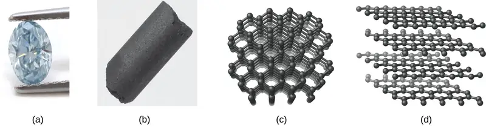
Graphite, also shown in Figure 18.20, is a soft, slippery, grayish-black solid that conducts electricity. These properties relate to its structure, which consists of layers of carbon atoms, with each atom surrounded by three other carbon atoms in a trigonal planar arrangement. Each carbon atom in graphite forms three σ bonds, one to each of its nearest neighbors, by means of sp2-hybrid orbitals. The unhybridized p orbital on each carbon atom will overlap unhybridized orbitals on adjacent carbon atoms in the same layer to form π bonds. Many resonance forms are necessary to describe the electronic structure of a graphite layer; Figure 18.21 illustrates two of these forms.
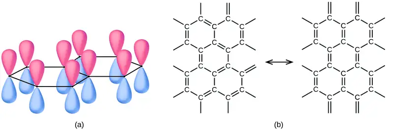
Atoms within a graphite layer are bonded together tightly by the σ and π bonds; however, the forces between layers are weak. London dispersion forces hold the layers together. To learn more, see the discussion of these weak forces in the chapter on liquids and solids. The weak forces between layers give graphite the soft, flaky character that makes it useful as the so-called “lead” in pencils and the slippery character that makes it useful as a lubricant. The loosely held electrons in the resonating π bonds can move throughout the solid and are responsible for the electrical conductivity of graphite.
Other forms of elemental carbon include carbon black, charcoal, and coke. Carbon black is an amorphous form of carbon prepared by the incomplete combustion of natural gas, CH4. It is possible to produce charcoal and coke by heating wood and coal, respectively, at high temperatures in the absence of air.
Recently, new forms of elemental carbon molecules have been identified in the soot generated by a smoky flame and in the vapor produced when graphite is heated to very high temperatures in a vacuum or in helium. One of these new forms, first isolated by Professor Richard Smalley and coworkers at Rice University, consists of icosahedral (soccer-ball-shaped) molecules that contain 60 carbon atoms, C60. This is buckminsterfullerene (often called bucky balls) after the architect Buckminster Fuller, who designed domed structures, which have a similar appearance (Figure 18.22).
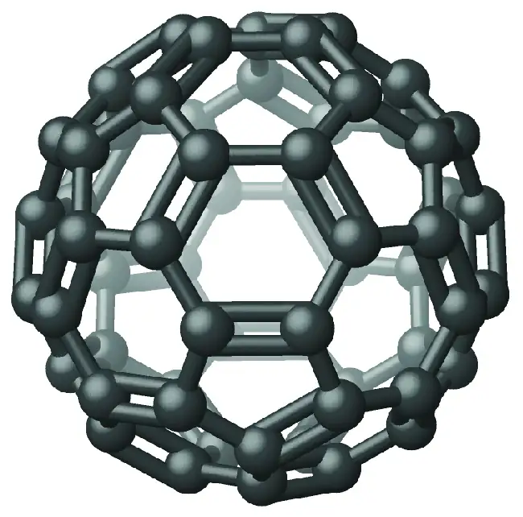
Chemistry in Everyday Life: Nanotubes and Graphene
Graphene and carbon nanotubes are two recently discovered allotropes of carbon. Both of the forms bear some relationship to graphite. Graphene is a single layer of graphite (one atom thick), as illustrated in Figure 18.23, whereas carbon nanotubes roll the layer into a small tube, as illustrated in Figure 18.23.
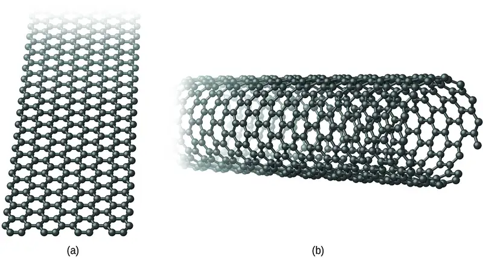
Graphene is a very strong, lightweight, and efficient conductor of heat and electricity discovered in 2003. As in graphite, the carbon atoms form a layer of six-membered rings with sp2-hybridized carbon atoms at the corners. Resonance stabilizes the system and leads to its conductivity. Unlike graphite, there is no stacking of the layers to give a three-dimensional structure. Andre Geim and Kostya Novoselov at the University of Manchester won the 2010 Nobel Prize in Physics for their pioneering work characterizing graphene.
The simplest procedure for preparing graphene is to use a piece of adhesive tape to remove a single layer of graphene from the surface of a piece of graphite. This method works because there are only weak London dispersion forces between the layers in graphite. Alternative methods are to deposit a single layer of carbon atoms on the surface of some other material (ruthenium, iridium, or copper) or to synthesize it at the surface of silicon carbide via the sublimation of silicon.
There currently are no commercial applications of graphene. However, its unusual properties, such as high electron mobility and thermal conductivity, should make it suitable for the manufacture of many advanced electronic devices and for thermal management applications.
Carbon nanotubes are carbon allotropes, which have a cylindrical structure. Like graphite and graphene, nanotubes consist of rings of sp2-hybridized carbon atoms. Unlike graphite and graphene, which occur in layers, the layers wrap into a tube and bond together to produce a stable structure. The walls of the tube may be one atom or multiple atoms thick.
Carbon nanotubes are extremely strong materials that are harder than diamond. Depending upon the shape of the nanotube, it may be a conductor or semiconductor. For some applications, the conducting form is preferable, whereas other applications utilize the semiconducting form.
The basis for the synthesis of carbon nanotubes is the generation of carbon atoms in a vacuum. It is possible to produce carbon atoms by an electrical discharge through graphite, vaporization of graphite with a laser, and the decomposition of a carbon compound.
The strength of carbon nanotubes will eventually lead to some of their most exciting applications, as a thread produced from several nanotubes will support enormous weight. However, the current applications only employ bulk nanotubes. The addition of nanotubes to polymers improves the mechanical, thermal, and electrical properties of the bulk material. There are currently nanotubes in some bicycle parts, skis, baseball bats, fishing rods, and surfboards.
Phosphorus¶
The name phosphorus comes from the Greek words meaning light bringing. When phosphorus was first isolated, scientists noted that it glowed in the dark and burned when exposed to air. Phosphorus is the only member of its group that does not occur in the uncombined state in nature; it exists in many allotropic forms. We will consider two of those forms: white phosphorus and red phosphorus.
White phosphorus is a white, waxy solid that melts at 44.2 °C and boils at 280 °C. It is insoluble in water (in which it is stored—see Figure 18.24), is very soluble in carbon disulfide, and bursts into flame in air. As a solid, as a liquid, as a gas, and in solution, white phosphorus exists as P4 molecules with four phosphorus atoms at the corners of a regular tetrahedron, as illustrated in Figure 18.24. Each phosphorus atom covalently bonds to the other three atoms in the molecule by single covalent bonds. White phosphorus is the most reactive allotrope and is very toxic.
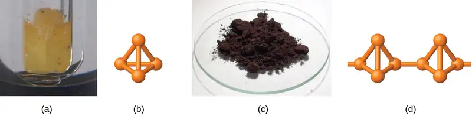
Heating white phosphorus to 270–300 °C in the absence of air yields red phosphorus. Red phosphorus (shown in Figure 18.24) is denser, has a higher melting point (~600 °C), is much less reactive, is essentially nontoxic, and is easier and safer to handle than is white phosphorus. Its structure is highly polymeric and appears to contain three-dimensional networks of P4 tetrahedra joined by P-P single bonds. Red phosphorus is insoluble in solvents that dissolve white phosphorus. When red phosphorus is heated, P4 molecules sublime from the solid.
Sulfur¶
The allotropy of sulfur is far greater and more complex than that of any other element. Sulfur is the brimstone referred to in the Bible and other places, and references to sulfur occur throughout recorded history—right up to the relatively recent discovery that it is a component of the atmospheres of Venus and of Io, a moon of Jupiter. The most common and most stable allotrope of sulfur is yellow, rhombic sulfur, so named because of the shape of its crystals. Rhombic sulfur is the form to which all other allotropes revert at room temperature. Crystals of rhombic sulfur melt at 113 °C. Cooling this liquid gives long needles of monoclinic sulfur. This form is stable from 96 °C to the melting point, 119 °C. At room temperature, it gradually reverts to the rhombic form.
Both rhombic sulfur and monoclinic sulfur contain S8 molecules in which atoms form eight-membered, puckered rings that resemble crowns, as illustrated in Figure 18.25. Each sulfur atom is bonded to each of its two neighbors in the ring by covalent S-S single bonds.
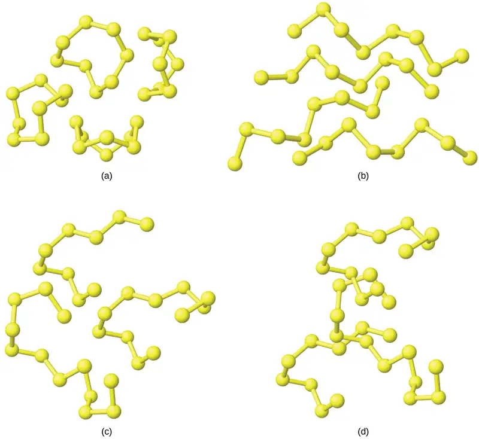
When rhombic sulfur melts, the straw-colored liquid is quite mobile; its viscosity is low because S8 molecules are essentially spherical and offer relatively little resistance as they move past each other. As the temperature rises, S-S bonds in the rings break, and polymeric chains of sulfur atoms result. These chains combine end to end, forming still longer chains that tangle with one another. The liquid gradually darkens in color and becomes so viscous that finally (at about 230 °C) it does not pour easily. The dangling atoms at the ends of the chains of sulfur atoms are responsible for the dark red color because their electronic structure differs from those of sulfur atoms that have bonds to two adjacent sulfur atoms. This causes them to absorb light differently and results in a different visible color. Cooling the liquid rapidly produces a rubberlike amorphous mass, called plastic sulfur.
Sulfur boils at 445 °C and forms a vapor consisting of S2, S6, and S8 molecules; at about 1000 °C, the vapor density corresponds to the formula S2, which is a paramagnetic molecule like O2 with a similar electronic structure and a weak sulfur-sulfur double bond.
As seen in this discussion, an important feature of the structural behavior of the nonmetals is that the elements usually occur with eight electrons in their valence shells. If necessary, the elements form enough covalent bonds to supplement the electrons already present to possess an octet. For example, members of group 15 have five valence electrons and require only three additional electrons to fill their valence shells. These elements form three covalent bonds in their free state: triple bonds in the N2 molecule or single bonds to three different atoms in arsenic and phosphorus. The elements of group 16 require only two additional electrons. Oxygen forms a double bond in the O2 molecule, and sulfur, selenium, and tellurium form two single bonds in various rings and chains. The halogens form diatomic molecules in which each atom is involved in only one bond. This provides the electron required necessary to complete the octet on the halogen atom. The noble gases do not form covalent bonds to other noble gas atoms because they already have a filled outer shell.
18.5 Occurrence, Preparation, and Compounds of Hydrogen¶
Learning Objectives
By the end of this section, you will be able to:
- Describe the properties, preparation, and compounds of hydrogen
Hydrogen is the most abundant element in the universe. The sun and other stars are composed largely of hydrogen. Astronomers estimate that 90% of the atoms in the universe are hydrogen atoms. Hydrogen is a component of more compounds than any other element. Water is the most abundant compound of hydrogen found on earth. Hydrogen is an important part of petroleum, many minerals, cellulose and starch, sugar, fats, oils, alcohols, acids, and thousands of other substances.
At ordinary temperatures, hydrogen is a colorless, odorless, tasteless, and nonpoisonous gas consisting of the diatomic molecule H2. Hydrogen is composed of three isotopes, and unlike other elements, these isotopes have different names and chemical symbols: protium, 1H, deuterium, 2H (or “D”), and tritium 3H (or “T”). In a naturally occurring sample of hydrogen, there is one atom of deuterium for every 7000 H atoms and one atom of radioactive tritium for every 1018 H atoms. The chemical properties of the different isotopes are very similar because they have identical electron structures, but they differ in some physical properties because of their differing atomic masses. Elemental deuterium and tritium have lower vapor pressure than ordinary hydrogen. Consequently, when liquid hydrogen evaporates, the heavier isotopes are concentrated in the last portions to evaporate. Electrolysis of heavy water, D2O, yields deuterium. Most tritium originates from nuclear reactions.
Preparation of Hydrogen¶
Elemental hydrogen must be prepared from compounds by breaking chemical bonds. The most common methods of preparing hydrogen follow.
From Steam and Carbon or Hydrocarbons¶
Water is the cheapest and most abundant source of hydrogen. Passing steam over coke (an impure form of elemental carbon) at 1000 °C produces a mixture of carbon monoxide and hydrogen known as water gas:
Water gas is as an industrial fuel. It is possible to produce additional hydrogen by mixing the water gas with steam in the presence of a catalyst to convert the CO to CO2. This reaction is the water gas shift reaction.
It is also possible to prepare a mixture of hydrogen and carbon monoxide by passing hydrocarbons from natural gas or petroleum and steam over a nickel-based catalyst. Propane is an example of a hydrocarbon reactant:
Electrolysis¶
Hydrogen forms when direct current electricity passes through water containing an electrolyte such as H2SO4, as illustrated in Figure 18.26. Bubbles of hydrogen form at the cathode, and oxygen evolves at the anode. The net reaction is:
![A diagram shows a beaker that contains a liquid, a battery submerged in the liquid, and two test tubes. The battery has the positive and negative terminals labeled. The liquid is connected by a right-facing arrow to an image of two molecules made up of one red atom and two white atoms. It is labeled, “Water,” and, “2 H subscript 2 O ( l ).” The left test tube above the negative sign is connected by a right-facing arrow to an image of two pairs of white atoms. The image is labeled, “Hydrogen,” and, “2 H subscript 2 ( g ).” The right test tube above the positive sign is connected by a right-facing arrow to an image of a pair of red atoms. The image is labeled, “Oxygen,” and, “O subscript 2 ( g ).”](img/cnx-chem-18-05-electrolys.webp)
Reaction of Metals with Acids¶
This is the most convenient laboratory method of producing hydrogen. Metals with lower reduction potentials reduce the hydrogen ion in dilute acids to produce hydrogen gas and metal salts. For example, as shown in Figure 18.27, iron in dilute hydrochloric acid produces hydrogen gas and iron(II) chloride:
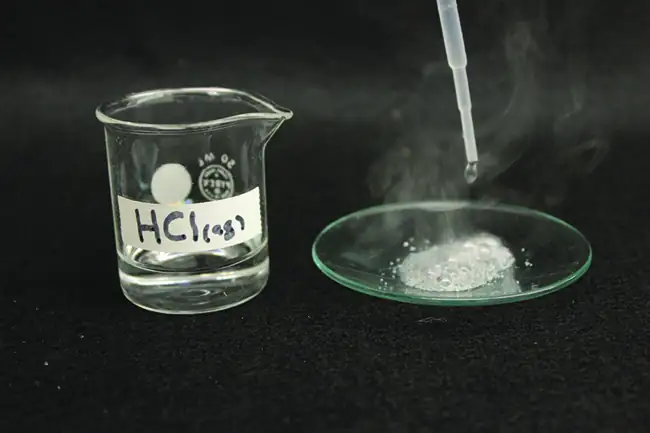
Reaction of Ionic Metal Hydrides with Water¶
It is possible to produce hydrogen from the reaction of hydrides of the active metals, which contain the very strongly basic H− anion, with water:
Metal hydrides are expensive but convenient sources of hydrogen, especially where space and weight are important factors. They are important in the inflation of life jackets, life rafts, and military balloons.
Reactions¶
Under normal conditions, hydrogen is relatively inactive chemically, but when heated, it enters into many chemical reactions.
Two thirds of the world’s hydrogen production is devoted to the manufacture of ammonia, which is a fertilizer and used in the manufacture of nitric acid. Large quantities of hydrogen are also important in the process of hydrogenation, discussed in the chapter on organic chemistry.
It is possible to use hydrogen as a nonpolluting fuel. The reaction of hydrogen with oxygen is a very exothermic reaction, releasing 286 kJ of energy per mole of water formed. Hydrogen burns without explosion under controlled conditions. The oxygen-hydrogen torch, because of the high heat of combustion of hydrogen, can achieve temperatures up to 2800 °C. The hot flame of this torch is useful in cutting thick sheets of many metals. Liquid hydrogen is also an important rocket fuel (Figure 18.28).
An uncombined hydrogen atom consists of a nucleus and one valence electron in the 1s orbital. The n = 1 valence shell has a capacity for two electrons, and hydrogen can rightfully occupy two locations in the periodic table. It is possible to consider hydrogen a group 1 element because hydrogen can lose an electron to form the cation, H+. It is also possible to consider hydrogen to be a group 17 element because it needs only one electron to fill its valence orbital to form a hydride ion, H−, or it can share an electron to form a single, covalent bond. In reality, hydrogen is a unique element that almost deserves its own location in the periodic table.
Reactions with Elements¶
When heated, hydrogen reacts with the metals of group 1 and with Ca, Sr, and Ba (the more active metals in group 2). The compounds formed are crystalline, ionic hydrides that contain the hydride anion, H−, a strong reducing agent and a strong base, which reacts vigorously with water and other acids to form hydrogen gas.
The reactions of hydrogen with nonmetals generally produce acidic hydrogen compounds with hydrogen in the 1+ oxidation state. The reactions become more exothermic and vigorous as the electronegativity of the nonmetal increases. Hydrogen reacts with nitrogen and sulfur only when heated, but it reacts explosively with fluorine (forming HF) and, under some conditions, with chlorine (forming HCl). A mixture of hydrogen and oxygen explodes if ignited. Because of the explosive nature of the reaction, it is necessary to exercise caution when handling hydrogen (or any other combustible gas) to avoid the formation of an explosive mixture in a confined space. Although most hydrides of the nonmetals are acidic, ammonia and phosphine (PH3) are very, very weak acids and generally function as bases. There is a summary of these reactions of hydrogen with the elements in Table 18.1.
Table 18.1
| Chemical Reactions of Hydrogen with Other Elements | |
|---|---|
| General Equation | Comments |
| \(\text{MH or MH}_{2}\:\longrightarrow\:\text{MOH or M}{(\text{OH})}_{2}+\text{H}_{2}\) | ionic hydrides with group 1 and Ca, Sr, and Ba |
| \(\text{H}_{2}+\text{C}\:\longrightarrow\:\text{(no reaction)}\) | |
| \(\text{3H}_{2}+\text{N}_{2}\:\longrightarrow\:\text{2NH}_{3}\) | requires high pressure and temperature; low yield |
| \(\text{2H}_{2}+\text{O}_{2}\:\longrightarrow\:\text{2H}_{2}\text{O}\) | exothermic and potentially explosive |
| \(\text{H}_{2}+\text{S}\:\longrightarrow\:\text{H}_{2}\text{S}\) | requires heating; low yield |
| \(\text{H}_{2}+\text{X}_{2}\:\longrightarrow\:\text{2HX}\) | X = F, Cl, Br, and I; explosive with F2; low yield with I2 |
Reaction with Compounds¶
Hydrogen reduces the heated oxides of many metals, with the formation of the metal and water vapor. For example, passing hydrogen over heated CuO forms copper and water.
Hydrogen may also reduce the metal ions in some metal oxides to lower oxidation states:
Hydrogen Compounds¶
Other than the noble gases, each of the nonmetals forms compounds with hydrogen. For brevity, we will discuss only a few hydrogen compounds of the nonmetals here.
Nitrogen Hydrogen Compounds¶
Ammonia, NH3, forms naturally when any nitrogen-containing organic material decomposes in the absence of air. The laboratory preparation of ammonia is by the reaction of an ammonium salt with a strong base such as sodium hydroxide. The acid-base reaction with the weakly acidic ammonium ion gives ammonia, illustrated in Figure 18.29. Ammonia also forms when ionic nitrides react with water. The nitride ion is a much stronger base than the hydroxide ion:
The commercial production of ammonia is by the direct combination of the elements in the Haber process:
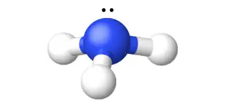
Ammonia is a colorless gas with a sharp, pungent odor. Smelling salts utilize this powerful odor. Gaseous ammonia readily liquefies to give a colorless liquid that boils at −33 °C. Due to intermolecular hydrogen bonding, the enthalpy of vaporization of liquid ammonia is higher than that of any other liquid except water, so ammonia is useful as a refrigerant. Ammonia is quite soluble in water (658 L at STP dissolves in 1 L H2O).
The chemical properties of ammonia are as follows:
- Ammonia acts as a Brønsted base, as discussed in the chapter on acid-base chemistry. The ammonium ion is similar in size to the potassium ion; compounds of the two ions exhibit many similarities in their structures and solubilities.
- Ammonia can display acidic behavior, although it is a much weaker acid than water. Like other acids, ammonia reacts with metals, although it is so weak that high temperatures are necessary. Hydrogen and (depending on the stoichiometry) amides (salts of \(\text{NH}_{2}{}^{-}),\) imides (salts of NH2−), or nitrides (salts of N3−) form.
- The nitrogen atom in ammonia has its lowest possible oxidation state (3−) and thus is not susceptible to reduction. However, it can be oxidized. Ammonia burns in air, giving NO and water. Hot ammonia and the ammonium ion are active reducing agents. Of particular interest are the oxidations of ammonium ion by nitrite ion, \(\text{NO}_{2}{}^{-},\) to yield pure nitrogen and by nitrate ion to yield nitrous oxide, N2O.
- There are a number of compounds that we can consider derivatives of ammonia through the replacement of one or more hydrogen atoms with some other atom or group of atoms. Inorganic derivations include chloramine, NH2Cl, and hydrazine, N2H4:
![Three Lewis structures are pictured and labeled, “a,” “b,” and “c.” Structure a shows a nitrogen atom with one lone pair of electrons single bonded to three hydrogen atoms. The structure is labeled “ammonia.” Structure b shows a nitrogen atom with one lone pair of electrons single bonded to two hydrogen atoms and a chlorine atom with three lone pairs of electrons. The structure is labeled “chloramine.” Structure c shows two nitrogen atoms, each with one lone pair of electrons, single bonded to one another and each single bonded to two hydrogen atoms. The structure is labeled “hydrazine.”](img/cnx-chem-18-05-ammonderiv-img.webp)
Chloramine, NH2Cl, results from the reaction of sodium hypochlorite, NaOCl, with ammonia in basic solution. In the presence of a large excess of ammonia at low temperature, the chloramine reacts further to produce hydrazine, N2H4:
Anhydrous hydrazine is relatively stable in spite of its positive free energy of formation:
Hydrazine is a fuming, colorless liquid that has some physical properties remarkably similar to those of H2O (it melts at 2 °C, boils at 113.5 °C, and has a density at 25 °C of 1.00 g/mL). It burns rapidly and completely in air with substantial evolution of heat:
Like ammonia, hydrazine is both a Brønsted base and a Lewis base, although it is weaker than ammonia. It reacts with strong acids and forms two series of salts that contain the \(\text{N}_{2}\text{H}_{5}{}^{+}\) and \(\text{N}_{2}\text{H}_{6}{}^{2+}\) ions, respectively. Some rockets use hydrazine as a fuel.
Phosphorus Hydrogen Compounds¶
The most important hydride of phosphorus is phosphine, PH3, a gaseous analog of ammonia in terms of both formula and structure. Unlike ammonia, it is not possible to form phosphine by direct union of the elements. There are two methods for the preparation of phosphine. One method is by the action of an acid on an ionic phosphide. The other method is the disproportionation of white phosphorus with hot concentrated base to produce phosphine and the hydrogen phosphite ion:
Phosphine is a colorless, very poisonous gas, which has an odor like that of decaying fish. Heat easily decomposes phosphine \((\text{4PH}_{3}\:\longrightarrow\:\text{P}_{4}+\text{6H}_{2}),\) and the compound burns in air. The major uses of phosphine are as a fumigant for grains and in semiconductor processing. Like ammonia, gaseous phosphine unites with gaseous hydrogen halides, forming phosphonium compounds like PH4Cl and PH4I. Phosphine is a much weaker base than ammonia; therefore, these compounds decompose in water, and the insoluble PH3 escapes from solution.
Sulfur Hydrogen Compounds¶
Hydrogen sulfide, H2S, is a colorless gas that is responsible for the offensive odor of rotten eggs and of many hot springs. Hydrogen sulfide is as toxic as hydrogen cyanide; therefore, it is necessary to exercise great care in handling it. Hydrogen sulfide is particularly deceptive because it paralyzes the olfactory nerves; after a short exposure, one does not smell it.
The production of hydrogen sulfide by the direct reaction of the elements (H2 + S) is unsatisfactory because the yield is low. A more effective preparation method is the reaction of a metal sulfide with a dilute acid. For example:
It is easy to oxidize the sulfur in metal sulfides and in hydrogen sulfide, making metal sulfides and H2S good reducing agents. In acidic solutions, hydrogen sulfide reduces Fe3+ to Fe2+, \(\text{MnO}_{4}{}^{-}\) to Mn2+, \(\text{Cr}_{2}\text{O}_{7}{}^{2-}\) to Cr3+, and HNO3 to NO2. The sulfur in H2S usually oxidizes to elemental sulfur, unless a large excess of the oxidizing agent is present. In which case, the sulfide may oxidize to \(\text{SO}_{3}{}^{2-}\) or \(\text{SO}_{4}{}^{2-}\) (or to SO2 or SO3 in the absence of water):
This oxidation process leads to the removal of the hydrogen sulfide found in many sources of natural gas. The deposits of sulfur in volcanic regions may be the result of the oxidation of H2S present in volcanic gases.
Hydrogen sulfide is a weak diprotic acid that dissolves in water to form hydrosulfuric acid. The acid ionizes in two stages, yielding hydrogen sulfide ions, HS−, in the first stage and sulfide ions, S2−, in the second. Since hydrogen sulfide is a weak acid, aqueous solutions of soluble sulfides and hydrogen sulfides are basic:
Halogen Hydrogen Compounds¶
Binary compounds containing only hydrogen and a halogen are hydrogen halides. At room temperature, the pure hydrogen halides HF, HCl, HBr, and HI are gases.
In general, it is possible to prepare the halides by the general techniques used to prepare other acids. Fluorine, chlorine, and bromine react directly with hydrogen to form the respective hydrogen halide. This is a commercially important reaction for preparing hydrogen chloride and hydrogen bromide.
The acid-base reaction between a nonvolatile strong acid and a metal halide will yield a hydrogen halide. The escape of the gaseous hydrogen halide drives the reaction to completion. For example, the usual method of preparing hydrogen fluoride is by heating a mixture of calcium fluoride, CaF2, and concentrated sulfuric acid:
Gaseous hydrogen fluoride is also a by-product in the preparation of phosphate fertilizers by the reaction of fluoroapatite, Ca5(PO4)3F, with sulfuric acid. The reaction of concentrated sulfuric acid with a chloride salt produces hydrogen chloride both commercially and in the laboratory.
In most cases, sodium chloride is the chloride of choice because it is the least expensive chloride. Hydrogen bromide and hydrogen iodide cannot be prepared using sulfuric acid because this acid is an oxidizing agent capable of oxidizing both bromide and iodide. However, it is possible to prepare both hydrogen bromide and hydrogen iodide using an acid such as phosphoric acid because it is a weaker oxidizing agent. For example:
All of the hydrogen halides are very soluble in water, forming hydrohalic acids. With the exception of hydrogen fluoride, which has a strong hydrogen-fluoride bond, they are strong acids. Reactions of hydrohalic acids with metals, metal hydroxides, oxides, or carbonates produce salts of the halides. Most chloride salts are soluble in water. AgCl, PbCl2, and Hg2Cl2 are the commonly encountered exceptions.
The halide ions give the substances the properties associated with X−(aq). The heavier halide ions (Cl−, Br−, and I−) can act as reducing agents, and the lighter halogens or other oxidizing agents will oxidize them:
For example, bromine oxidizes iodine:
Hydrofluoric acid is unique in its reactions with sand (silicon dioxide) and with glass, which is a mixture of silicates:
The volatile silicon tetrafluoride escapes from these reactions. Because hydrogen fluoride attacks glass, it can frost or etch glass and is used to etch markings on thermometers, burets, and other glassware.
The largest use for hydrogen fluoride is in production of hydrochlorofluorocarbons for refrigerants, in plastics, and in propellants. The second largest use is in the manufacture of cryolite, Na3AlF6, which is important in the production of aluminum. The acid is also important in the production of other inorganic fluorides (such as BF3), which serve as catalysts in the industrial synthesis of certain organic compounds.
Hydrochloric acid is relatively inexpensive. It is an important and versatile acid in industry and is important for the manufacture of metal chlorides, dyes, glue, glucose, and various other chemicals. A considerable amount is also important for the activation of oil wells and as pickle liquor—an acid used to remove oxide coating from iron or steel that is to be galvanized, tinned, or enameled. The amounts of hydrobromic acid and hydroiodic acid used commercially are insignificant by comparison.
18.6 Occurrence, Preparation, and Properties of Carbonates¶
Learning Objectives
By the end of this section, you will be able to:
- Describe the preparation, properties, and uses of some representative metal carbonates
The chemistry of carbon is extensive; however, most of this chemistry is not relevant to this chapter. The other aspects of the chemistry of carbon will appear in the chapter covering organic chemistry. In this chapter, we will focus on the carbonate ion and related substances. The metals of groups 1 and 2, as well as zinc, cadmium, mercury, and lead(II), form ionic carbonates—compounds that contain the carbonate anions, \(\text{CO}_{3}{}^{2-}.\) The metals of group 1, magnesium, calcium, strontium, and barium also form hydrogen carbonates—compounds that contain the hydrogen carbonate anion, \(\text{HCO}_{3}{}^{-}{,}\) also known as the bicarbonate anion.
With the exception of magnesium carbonate, it is possible to prepare carbonates of the metals of groups 1 and 2 by the reaction of carbon dioxide with the respective oxide or hydroxide. Examples of such reactions include:
The carbonates of the alkaline earth metals of group 12 and lead(II) are not soluble. These carbonates precipitate upon mixing a solution of soluble alkali metal carbonate with a solution of soluble salts of these metals. Examples of net ionic equations for the reactions are:
Pearls and the shells of most mollusks are calcium carbonate. Tin(II) or one of the trivalent or tetravalent ions such as Al3+ or Sn4+ behave differently in this reaction as carbon dioxide and the corresponding oxide form instead of the carbonate.
Alkali metal hydrogen carbonates such as NaHCO3 and CsHCO3 form by saturating a solution of the hydroxides with carbon dioxide. The net ionic reaction involves hydroxide ion and carbon dioxide:
It is possible to isolate the solids by evaporation of the water from the solution.
Although they are insoluble in pure water, alkaline earth carbonates dissolve readily in water containing carbon dioxide because hydrogen carbonate salts form. For example, caves and sinkholes form in limestone when CaCO3 dissolves in water containing dissolved carbon dioxide:
Hydrogen carbonates of the alkaline earth metals remain stable only in solution; evaporation of the solution produces the carbonate. Stalactites and stalagmites, like those shown in Figure 18.30, form in caves when drops of water containing dissolved calcium hydrogen carbonate evaporate to leave a deposit of calcium carbonate.
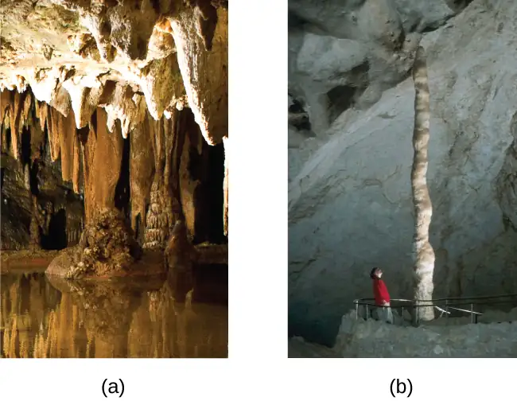
The two carbonates used commercially in the largest quantities are sodium carbonate and calcium carbonate. In the United States, sodium carbonate is extracted from the mineral trona, Na3(CO3)(HCO3)(H2O)2. Following recrystallization to remove clay and other impurities, heating the recrystallized trona produces Na2CO3:
Carbonates are moderately strong bases. Aqueous solutions are basic because the carbonate ion accepts hydrogen ion from water in this reversible reaction:
Carbonates react with acids to form salts of the metal, gaseous carbon dioxide, and water. The reaction of calcium carbonate, the active ingredient of the antacid Tums, with hydrochloric acid (stomach acid), as shown in Figure 18.31, illustrates the reaction:
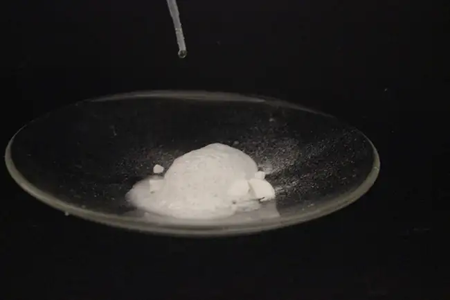
Other applications of carbonates include glass making—where carbonate ions serve as a source of oxide ions—and synthesis of oxides.
Hydrogen carbonates are amphoteric because they act as both weak acids and weak bases. Hydrogen carbonate ions act as acids and react with solutions of soluble hydroxides to form a carbonate and water:
With acids, hydrogen carbonates form a salt, carbon dioxide, and water. Baking soda (bicarbonate of soda or sodium bicarbonate) is sodium hydrogen carbonate. Baking powder contains baking soda and a solid acid such as potassium hydrogen tartrate (cream of tartar), KHC4H4O6. As long as the powder is dry, no reaction occurs; immediately after the addition of water, the acid reacts with the hydrogen carbonate ions to form carbon dioxide:
Dough will trap the carbon dioxide, causing it to expand during baking, producing the characteristic texture of baked goods.
18.7 Occurrence, Preparation, and Properties of Nitrogen¶
Learning Objectives
By the end of this section, you will be able to:
- Describe the properties, preparation, and uses of nitrogen
Most pure nitrogen comes from the fractional distillation of liquid air. The atmosphere consists of 78% nitrogen by volume. This means there are more than 20 million tons of nitrogen over every square mile of the earth’s surface. Nitrogen is a component of proteins and of the genetic material (DNA/RNA) of all plants and animals.
Under ordinary conditions, nitrogen is a colorless, odorless, and tasteless gas. It boils at 77 K and freezes at 63 K. Liquid nitrogen is a useful coolant because it is inexpensive and has a low boiling point. Nitrogen is very unreactive because of the very strong triple bond between the nitrogen atoms. The only common reactions at room temperature occur with lithium to form Li3N, with certain transition metal complexes, and with hydrogen or oxygen in nitrogen-fixing bacteria. The general lack of reactivity of nitrogen makes the remarkable ability of some bacteria to synthesize nitrogen compounds using atmospheric nitrogen gas as the source one of the most exciting chemical events on our planet. This process is one type of nitrogen fixation. In this case, nitrogen fixation is the process where organisms convert atmospheric nitrogen into biologically useful chemicals. Nitrogen fixation also occurs when lightning passes through air, causing molecular nitrogen to react with oxygen to form nitrogen oxides, which are then carried down to the soil.
Chemistry in Everyday Life: Nitrogen Fixation
All living organisms require nitrogen compounds for survival. Unfortunately, most of these organisms cannot absorb nitrogen from its most abundant source—the atmosphere. Atmospheric nitrogen consists of N2 molecules, which are very unreactive due to the strong nitrogen-nitrogen triple bond. However, a few organisms can overcome this problem through a process known as nitrogen fixation, illustrated in Figure 18.32.
![A flow chart is shown. A cow, grass, and a tree are shown in the center of the diagram. Downward-facing arrows lead from them to the phrase, “Decomposers ( aerobic and anaerobic bacteria and fungi ).” A downward-facing arrow leads to a space-filing model with one blue atom bonded to four white atoms. The model is labeled, “Ammonium ( N H subscript 4 ).” A right-facing arrow leads from this molecule to another molecule that is composed of a blue atom bonded to two red atoms. The model is labeled, “Nitrites ( N O subscript 2 superscript negative sign ).” Below this arrow is a picture of a circle with two rod-shaped structures. It is labeled, “Nitrifying bacteria.” Above the nitrites label is an upward-facing arrow leading to a blue atom single-bonded to three red atoms. The model is labeled, “Nitrates ( N O subscript 3 superscript negative sign ).” Next to this arrow is a picture of a circle with two rod-shaped structures labeled, “Nitrifying bacteria.” The nitrates label has a double-headed, upward-facing arrow that leads to two pictures: one of the roots of the tree which is labeled, “Assimilation,” and one leading to a picture of a circle with four oval-shaped structures labeled, “Denitrifying bacteria.” A left-facing arrow leads from this bacteria to a molecule made up of two atoms triple-bonded together and labeled, “Atmospheric nitrogen ( N subscript 2 ).” This molecule is connected to a downward-facing, double-headed arrow that leads to an image showing yellow filaments on a black background and a picture of a circle with four rod-shaped structures labeled, “Nitrogen-fixing soil bacteria.” An arrow leads from a picture of a plant’s roots to the yellow filaments and then to a photo of a circle with four oval-shaped structures labeled, “Nitrogen-fixing bacteria in root nodules.”](img/cnx-chem-18-07-nitrogen.webp)
Nitrogen fixation is the process where organisms convert atmospheric nitrogen into biologically useful chemicals. To date, the only known kind of biological organisms capable of nitrogen fixation are microorganisms. These organisms employ enzymes called nitrogenases, which contain iron and molybdenum. Many of these microorganisms live in a symbiotic relationship with plants, with the best-known example being the presence of rhizobia in the root nodules of legumes.
Large volumes of atmospheric nitrogen are necessary for making ammonia—the principal starting material used for preparation of large quantities of other nitrogen-containing compounds. Most other uses for elemental nitrogen depend on its inactivity. It is helpful when a chemical process requires an inert atmosphere. Canned foods and luncheon meats cannot oxidize in a pure nitrogen atmosphere, so they retain a better flavor and color, and spoil less rapidly, when sealed in nitrogen instead of air. This technology allows fresh produce to be available year-round, regardless of growing season.
There are compounds with nitrogen in all of its oxidation states from 3− to 5+. Much of the chemistry of nitrogen involves oxidation-reduction reactions. Some active metals (such as alkali metals and alkaline earth metals) can reduce nitrogen to form metal nitrides. In the remainder of this section, we will examine nitrogen-oxygen chemistry.
There are well-characterized nitrogen oxides in which nitrogen exhibits each of its positive oxidation numbers from 1+ to 5+. When ammonium nitrate is carefully heated, nitrous oxide (dinitrogen oxide) and water vapor form. Stronger heating generates nitrogen gas, oxygen gas, and water vapor. No one should ever attempt this reaction—it can be very explosive. In 1947, there was a major ammonium nitrate explosion in Texas City, Texas, and, in 2013, there was another major explosion in West, Texas. In the last 100 years, there were nearly 30 similar disasters worldwide, resulting in the loss of numerous lives. In this oxidation-reduction reaction, the nitrogen in the nitrate ion oxidizes the nitrogen in the ammonium ion. Nitrous oxide, shown in Figure 18.33, is a colorless gas possessing a mild, pleasing odor and a sweet taste. It finds application as an anesthetic for minor operations, especially in dentistry, under the name “laughing gas.”
![A space-filling model of a molecule shows two blue atoms labeled 'N' bonded to one another and to one red atom labeled 'O'. Two Lewis structures are also shown and connected by a double-headed arrow. The left image shows a nitrogen atom with two lone pairs of electrons double bonded to a second nitrogen atom. The second nitrogen atom is double-bonded to an oxygen atom that has two lone pairs of electrons. The right image shows a nitrogen atom with a lone pair of electrons triple bonded to a second nitrogen atom. The second nitrogen atom is single bonded to an oxygen atom that has three lone pairs of electrons.](img/cnx-chem-18-07-molecreso.webp)
Low yields of nitric oxide, NO, form when heating nitrogen and oxygen together. NO also forms when lightning passes through air during thunderstorms. Burning ammonia is the commercial method of preparing nitric oxide. In the laboratory, the reduction of nitric acid is the best method for preparing nitric oxide. When copper reacts with dilute nitric acid, nitric oxide is the principal reduction product:
Gaseous nitric oxide is the most thermally stable of the nitrogen oxides and is the simplest known thermally stable molecule with an unpaired electron. It is one of the air pollutants generated by internal combustion engines, resulting from the reaction of atmospheric nitrogen and oxygen during the combustion process.
At room temperature, nitric oxide is a colorless gas consisting of diatomic molecules. As is often the case with molecules that contain an unpaired electron, two molecules combine to form a dimer by pairing their unpaired electrons to form a bond. Liquid and solid NO both contain N2O2 dimers, like that shown in Figure 18.34. Most substances with unpaired electrons exhibit color by absorbing visible light; however, NO is colorless because the absorption of light is not in the visible region of the spectrum.
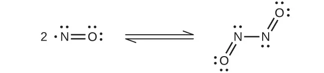
Cooling a mixture of equal parts nitric oxide and nitrogen dioxide to −21 °C produces dinitrogen trioxide, a blue liquid consisting of N2O3 molecules (shown in Figure 18.35). Dinitrogen trioxide exists only in the liquid and solid states. When heated, it reverts to a mixture of NO and NO2.
![A space-filling model of a molecule shows two blue atoms labeled, “N,” bonded to one another and to three red atoms labeled, “O.” Two Lewis structures are also shown and connected by a double-headed arrow. The left image shows two nitrogen atoms that are single bonded to one another. The left nitrogen is double bonded to an oxygen atom that has two lone pairs of electrons. The right nitrogen has one lone pair of electrons and is double bonded to an oxygen atom with two lone pairs of electrons and single bonded to an oxygen with three lone pairs of electrons. The right image shows two nitrogen atoms that are single bonded to one another. The left nitrogen is double bonded to an oxygen atom that has two lone pairs of electrons. The right nitrogen has one lone pair of electrons and is double bonded to an oxygen atom with two lone pairs of electrons and single bonded to an oxygen atom with three lone pairs of electrons.](img/cnx-chem-18-07-molecreso2.webp)
It is possible to prepare nitrogen dioxide in the laboratory by heating the nitrate of a heavy metal, or by the reduction of concentrated nitric acid with copper metal, as shown in Figure 18.36. Commercially, it is possible to prepare nitrogen dioxide by oxidizing nitric oxide with air.
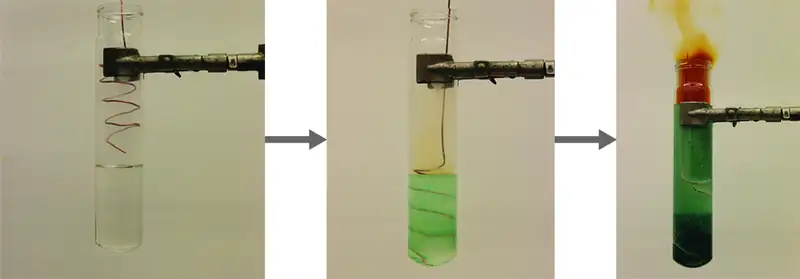
The nitrogen dioxide molecule (illustrated in Figure 18.37) contains an unpaired electron, which is responsible for its color and paramagnetism. It is also responsible for the dimerization of NO2. At low pressures or at high temperatures, nitrogen dioxide has a deep brown color that is due to the presence of the NO2 molecule. At low temperatures, the color almost entirely disappears as dinitrogen tetraoxide, N2O4, forms. At room temperature, an equilibrium exists:
![Two space-filling models and two Lewis structures are shown. The left space-filling model shows a blue atom labeled, “N,” bonded to two red atoms labeled, “O,” while the right space-filling model shows two blue atoms labeled, “N,” each bonded to two red atoms labeled, “O.” The left Lewis structure shows a nitrogen atom with one lone electron single bonded to an oxygen atom with three lone pairs of electrons. The nitrogen atom is also double bonded to an oxygen atom with two lone pairs of electrons. The right structure, which is connected by a double-headed arrow to the first, is a diagram showing a similar Lewis structure, but the position of the double bond and the number of electron pairs on the oxygen atoms have switched.](img/cnx-chem-18-07-n2o4.webp)
Dinitrogen pentaoxide, N2O5 (illustrated in Figure 18.38), is a white solid that is formed by the dehydration of nitric acid by phosphorus(V) oxide (tetraphosphorus decoxide):
It is unstable above room temperature, decomposing to N2O4 and O2.
![A space-filling model and a Lewis structure are shown. The space-filling model shows two blue atoms labeled, “N,” each bonded to two red atoms labeled, “O,” with another red atom labeled, “O,” in between them. The Lewis structure shows a nitrogen atom single bonded to an oxygen atom with three lone pairs of electrons in a downward position and double bonded to an oxygen atom with two lone pairs of electrons in an upward position. This nitrogen is single bonded to an oxygen atom with two lone pairs of electrons. The oxygen atom is single bonded to another nitrogen atom which is single bonded to another oxygen atom with three lone pairs of electrons in an upward position. The second nitrogen atom is also double bonded to an oxygen atom with two lone pairs of electrons in a downward position.](img/cnx-chem-18-07-n2o5.webp)
The oxides of nitrogen(III), nitrogen(IV), and nitrogen(V) react with water and form nitrogen-containing oxyacids. Nitrogen(III) oxide, N2O3, is the anhydride of nitrous acid; HNO2 forms when N2O3 reacts with water. There are no stable oxyacids containing nitrogen with an oxidation state of 4+; therefore, nitrogen(IV) oxide, NO2, disproportionates in one of two ways when it reacts with water. In cold water, a mixture of HNO2 and HNO3 forms. At higher temperatures, HNO3 and NO will form. Nitrogen(V) oxide, N2O5, is the anhydride of nitric acid; HNO3 is produced when N2O5 reacts with water:
The nitrogen oxides exhibit extensive oxidation-reduction behavior. Nitrous oxide resembles oxygen in its behavior when heated with combustible substances. N2O is a strong oxidizing agent that decomposes when heated to form nitrogen and oxygen. Because one-third of the gas liberated is oxygen, nitrous oxide supports combustion better than air (one-fifth oxygen). A glowing splinter bursts into flame when thrust into a bottle of this gas. Nitric oxide acts both as an oxidizing agent and as a reducing agent. For example:
Nitrogen dioxide (or dinitrogen tetraoxide) is a good oxidizing agent. For example:
18.8 Occurrence, Preparation, and Properties of Phosphorus¶
Learning Objectives
By the end of this section, you will be able to:
- Describe the properties, preparation, and uses of phosphorus
The industrial preparation of phosphorus is by heating calcium phosphate, obtained from phosphate rock, with sand and coke:
The phosphorus distills out of the furnace and is condensed into a solid or burned to form P4O10. The preparation of many other phosphorus compounds begins with P4O10. The acids and phosphates are useful as fertilizers and in the chemical industry. Other uses are in the manufacture of special alloys such as ferrophosphorus and phosphor bronze. Phosphorus is important in making pesticides, matches, and some plastics. Phosphorus is an active nonmetal. In compounds, phosphorus usually occurs in oxidation states of 3−, 3+, and 5+. Phosphorus exhibits oxidation numbers that are unusual for a group 15 element in compounds that contain phosphorus-phosphorus bonds; examples include diphosphorus tetrahydride, H2P-PH2, and tetraphosphorus trisulfide, P4S3, illustrated in Figure 18.39.
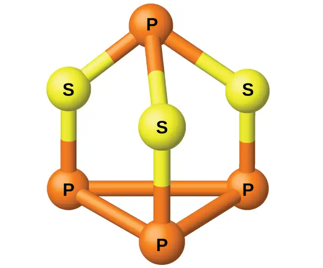
Phosphorus Oxygen Compounds¶
Phosphorus forms two common oxides, phosphorus(III) oxide (or tetraphosphorus hexaoxide), P4O6, and phosphorus(V) oxide (or tetraphosphorus decaoxide), P4O10, both shown in Figure 18.40. Phosphorus(III) oxide is a white crystalline solid with a garlic-like odor. Its vapor is very poisonous. It oxidizes slowly in air and inflames when heated to 70 °C, forming P4O10. Phosphorus(III) oxide dissolves slowly in cold water to form phosphorous acid, H3PO3.
![Two ball-and-stick models are shown. In the left model, three orange atoms labeled, “P,” are single bonded to red atoms labeled, “O,” in an alternating, six-sided ring structure. Each of the orange atoms are also single bonded to another red atom, which are in turn single bonded to a single orange atom. The right model shows three orange atoms labeled, “P,” single bonded to red atoms labeled, “O,” in an alternating, six-sided ring structure. Each of the orange atoms are also single bonded to two more red atoms, one in an upward position and one facing the outside of the molecule. The upward red atoms are single bonded to a single orange atom which is single bonded to a final red atom.](img/cnx-chem-18-08-p4o6p4o10.webp)
Phosphorus(V) oxide, P4O10, is a white powder that is prepared by burning phosphorus in excess oxygen. Its enthalpy of formation is very high (−2984 kJ), and it is quite stable and a very poor oxidizing agent. Dropping P4O10 into water produces a hissing sound, heat, and orthophosphoric acid:
Because of its great affinity for water, phosphorus(V) oxide is an excellent drying agent for gases and solvents, and for removing water from many compounds.
Phosphorus Halogen Compounds¶
Phosphorus will react directly with the halogens, forming trihalides, PX3, and pentahalides, PX5. The trihalides are much more stable than the corresponding nitrogen trihalides; nitrogen pentahalides do not form because of nitrogen’s inability to form more than four bonds.
The chlorides PCl3 and PCl5, both shown in Figure 18.41, are the most important halides of phosphorus. Phosphorus trichloride is a colorless liquid that is prepared by passing chlorine over molten phosphorus. Phosphorus pentachloride is an off-white solid that is prepared by oxidizing the trichloride with excess chlorine. The pentachloride sublimes when warmed and forms an equilibrium with the trichloride and chlorine when heated.
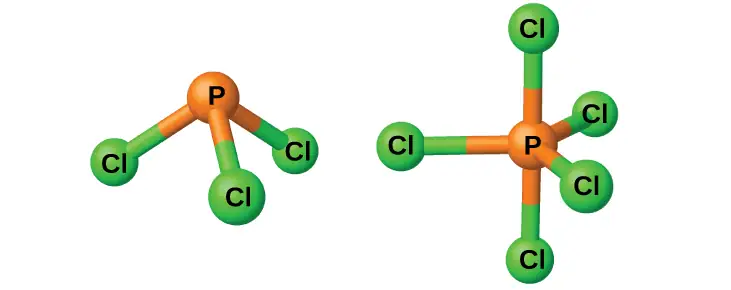
Like most other nonmetal halides, both phosphorus chlorides react with an excess of water and yield hydrogen chloride and an oxyacid: PCl3 yields phosphorous acid H3PO3 and PCl5 yields phosphoric acid, H3PO4.
The pentahalides of phosphorus are Lewis acids because of the empty valence d orbitals of phosphorus. These compounds readily react with halide ions (Lewis bases) to give the anion \(\text{PX}_{6}{}^{-}.\) Whereas phosphorus pentafluoride is a molecular compound in all states, X-ray studies show that solid phosphorus pentachloride is an ionic compound, \({[\text{PCl}}_{4}{}^{\text{+}}][\text{PCl}_{6}{}^{-}],\) as are phosphorus pentabromide, \({[\text{PBr}}_{4}{}^{\text{+}}]\)[Br−], and phosphorus pentaiodide, \({[\text{PI}}_{4}{}^{\text{+}}]\)[I−].
18.9 Occurrence, Preparation, and Compounds of Oxygen¶
Learning Objectives
By the end of this section, you will be able to:
- Describe the properties, preparation, and compounds of oxygen
- Describe the preparation, properties, and uses of some representative metal oxides, peroxides, and hydroxides
Oxygen is the most abundant element on the earth’s crust. The earth’s surface is composed of the crust, atmosphere, and hydrosphere. About 50% of the mass of the earth’s crust consists of oxygen (combined with other elements, principally silicon). Oxygen occurs as O2 molecules and, to a limited extent, as O3 (ozone) molecules in air. It forms about 20% of the mass of the air. About 89% of water by mass consists of combined oxygen. In combination with carbon, hydrogen, and nitrogen, oxygen is a large part of plants and animals.
Oxygen is a colorless, odorless, and tasteless gas at ordinary temperatures. It is slightly denser than air. Although it is only slightly soluble in water (49 mL of gas dissolves in 1 L at STP), oxygen’s solubility is very important to aquatic life.
Most of the oxygen isolated commercially comes from air and the remainder from the electrolysis of water. The separation of oxygen from air begins with cooling and compressing the air until it liquefies. As liquid air warms, oxygen with its higher boiling point (90 K) separates from nitrogen, which has a lower boiling point (77 K). It is possible to separate the other components of air at the same time based on differences in their boiling points.
Oxygen is essential in combustion processes such as the burning of fuels. Plants and animals use the oxygen from the air in respiration. The administration of oxygen-enriched air is an important medical practice when a patient is receiving an inadequate supply of oxygen because of shock, pneumonia, or some other illness.
The chemical industry employs oxygen for oxidizing many substances. A significant amount of oxygen produced commercially is important in the removal of carbon from iron during steel production. Large quantities of pure oxygen are also necessary in metal fabrication and in the cutting and welding of metals with oxyhydrogen and oxyacetylene torches.
Liquid oxygen is important to the space industry. It is an oxidizing agent in rocket engines. It is also the source of gaseous oxygen for life support in space.
As we know, oxygen is very important to life. The energy required for the maintenance of normal body functions in human beings and in other organisms comes from the slow oxidation of chemical compounds. Oxygen is the final oxidizing agent in these reactions. In humans, oxygen passes from the lungs into the blood, where it combines with hemoglobin, producing oxyhemoglobin. In this form, blood transports the oxygen to tissues, where it is transferred to cells and used as a chemical oxidant, yielding as ultimate products carbon dioxide and water. The blood carries the carbon dioxide through the veins to the lungs, where the blood releases the carbon dioxide and collects another supply of oxygen. Digestion and assimilation of food regenerate the materials consumed by oxidation in the body; the energy liberated is the same as if the food burned outside the body.
Green plants continually replenish the oxygen in the atmosphere by a process called photosynthesis. The products of photosynthesis may vary, but, in general, the process converts carbon dioxide and water into glucose (a sugar) and oxygen using the energy of light:
Thus, the oxygen that became carbon dioxide and water by the metabolic processes in plants and animals returns to the atmosphere by photosynthesis.
When dry oxygen is passed between two electrically charged plates, ozone (O3, illustrated in Figure 18.42), an allotrope of oxygen possessing a distinctive odor, forms. The formation of ozone from oxygen is an endothermic reaction, in which the energy comes from an electrical discharge, heat, or ultraviolet light:
The sharp odor associated with sparking electrical equipment is due, in part, to ozone.
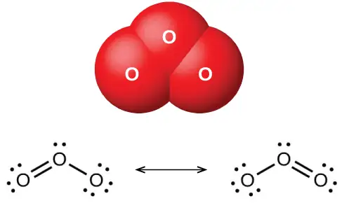
Ozone forms naturally in the upper atmosphere by the action of ultraviolet light from the sun on the oxygen there. Most atmospheric ozone occurs in the stratosphere, a layer of the atmosphere extending from about 10 to 50 kilometers above the earth’s surface. This ozone acts as a barrier to harmful ultraviolet light from the sun by absorbing it via a chemical decomposition reaction:
The reactive oxygen atoms recombine with molecular oxygen to complete the ozone cycle. The presence of stratospheric ozone decreases the frequency of skin cancer and other damaging effects of ultraviolet radiation. It has been clearly demonstrated that chlorofluorocarbons, CFCs (known commercially as Freons), which were present as aerosol propellants in spray cans and as refrigerants, caused depletion of ozone in the stratosphere. This occurred because ultraviolet light also causes CFCs to decompose, producing atomic chlorine. The chlorine atoms react with ozone molecules, resulting in a net removal of O3 molecules from stratosphere. This process is explored in detail in our coverage of chemical kinetics. There is a worldwide effort to reduce the amount of CFCs used commercially, and the ozone hole is already beginning to decrease in size as atmospheric concentrations of atomic chlorine decrease. While ozone in the stratosphere helps protect us, ozone in the troposphere is a problem. This ozone is a toxic component of photochemical smog.
The uses of ozone depend on its reactivity with other substances. It can be used as a bleaching agent for oils, waxes, fabrics, and starch: It oxidizes the colored compounds in these substances to colorless compounds. It is an alternative to chlorine as a disinfectant for water.
Reactions¶
Elemental oxygen is a strong oxidizing agent. It reacts with most other elements and many compounds.
Reaction with Elements¶
Oxygen reacts directly at room temperature or at elevated temperatures with all other elements except the noble gases, the halogens, and few second- and third-row transition metals of low reactivity (those with higher reduction potentials than copper). Rust is an example of the reaction of oxygen with iron. The more active metals form peroxides or superoxides. Less active metals and the nonmetals give oxides. Two examples of these reactions are:
The oxides of halogens, at least one of the noble gases, and metals with higher reduction potentials than copper do not form by the direct action of the elements with oxygen.
Reaction with Compounds¶
Elemental oxygen also reacts with some compounds. If it is possible to oxidize any of the elements in a given compound, further oxidation by oxygen can occur. For example, hydrogen sulfide, H2S, contains sulfur with an oxidation state of 2−. Because the sulfur does not exhibit its maximum oxidation state, we would expect H2S to react with oxygen. It does, yielding water and sulfur dioxide. The reaction is:
It is also possible to oxidize oxides such as CO and P4O6 that contain an element with a lower oxidation state. The ease with which elemental oxygen picks up electrons is mirrored by the difficulty of removing electrons from oxygen in most oxides. Of the elements, only the very reactive fluorine can oxidize oxides to form oxygen gas.
Oxides, Peroxides, and Hydroxides¶
Compounds of the representative metals with oxygen fall into three categories: (1) oxides, containing oxide ions, O2−; (2) peroxides, containing peroxides ions, \(\text{O}_{2}{}^{2-},\) with oxygen-oxygen covalent single bonds and a very limited number of superoxides, containing superoxide ions, \(\text{O}_{2}{}^{-},\) with oxygen-oxygen covalent bonds that have a bond order of \(1\:\frac{1}{2},\) In addition, there are (3) hydroxides, containing hydroxide ions, OH−. All representative metals form oxides. Some of the metals of group 2 also form peroxides, MO2, and the metals of group 1 also form peroxides, M2O2, and superoxides, MO2.
Oxides¶
It is possible to produce the oxides of most representative metals by heating the corresponding hydroxides (forming the oxide and gaseous water) or carbonates (forming the oxide and gaseous CO2). Equations for example reactions are:
However, alkali metal salts generally are very stable and do not decompose easily when heated. Alkali metal oxides result from the oxidation-reduction reactions created by heating nitrates or hydroxides with the metals. Equations for sample reactions are:
With the exception of mercury(II) oxide, it is possible to produce the oxides of the metals of groups 2–15 by burning the corresponding metal in air. The heaviest member of each group, the member for which the inert pair effect is most pronounced, forms an oxide in which the oxidation state of the metal ion is two less than the group oxidation state (inert pair effect). Thus, Tl2O, PbO, and Bi2O3 form when burning thallium, lead, and bismuth, respectively. The oxides of the lighter members of each group exhibit the group oxidation state. For example, SnO2 forms from burning tin. Mercury(II) oxide, HgO, forms slowly when mercury is warmed below 500 °C; it decomposes at higher temperatures.
Burning the members of groups 1 and 2 in air is not a suitable way to form the oxides of these elements. These metals are reactive enough to combine with nitrogen in the air, so they form mixtures of oxides and ionic nitrides. Several also form peroxides or superoxides when heated in air.
Ionic oxides all contain the oxide ion, a very powerful hydrogen ion acceptor. With the exception of the very insoluble aluminum oxide, Al2O3, tin(IV), SnO2, and lead(IV), PbO2, the oxides of the representative metals react with acids to form salts. Some equations for these reactions are:
The oxides of the metals of groups 1 and 2 and of thallium(I) oxide react with water and form hydroxides. Examples of such reactions are:
The oxides of the alkali metals have little industrial utility, unlike magnesium oxide, calcium oxide, and aluminum oxide. Magnesium oxide is important in making firebrick, crucibles, furnace linings, and thermal insulation—applications that require chemical and thermal stability. Calcium oxide, sometimes called quicklime or lime in the industrial market, is very reactive, and its principal uses reflect its reactivity. Pure calcium oxide emits an intense white light when heated to a high temperature (as illustrated in Figure 18.43). Blocks of calcium oxide heated by gas flames were the stage lights in theaters before electricity was available. This is the source of the phrase “in the limelight.”
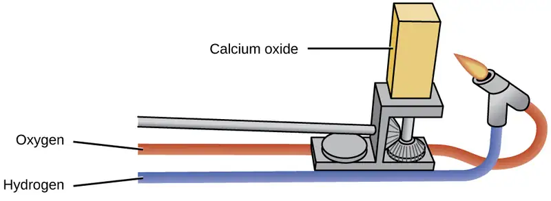
Calcium oxide and calcium hydroxide are inexpensive bases used extensively in chemical processing, although most of the useful products prepared from them do not contain calcium. Calcium oxide, CaO, is made by heating calcium carbonate, CaCO3, which is widely and inexpensively available as limestone or oyster shells:
Although this decomposition reaction is reversible, it is possible to obtain a 100% yield of CaO by allowing the CO2 to escape. It is possible to prepare calcium hydroxide by the familiar acid-base reaction of a soluble metal oxide with water:
Both CaO and Ca(OH)2 are useful as bases; they accept protons and neutralize acids.
Alumina (Al2O3) occurs in nature as the mineral corundum, a very hard substance used as an abrasive for grinding and polishing. Corundum is important to the jewelry trade as ruby and sapphire. The color of ruby is due to the presence of a small amount of chromium; other impurities produce the wide variety of colors possible for sapphires. Artificial rubies and sapphires are now manufactured by melting aluminum oxide (melting point = 2050 °C) with small amounts of oxides to produce the desired colors and cooling the melt in such a way as to produce large crystals. Ruby lasers use synthetic ruby crystals.
Zinc oxide, ZnO, was a useful white paint pigment; however, pollutants tend to discolor the compound. The compound is also important in the manufacture of automobile tires and other rubber goods, and in the preparation of medicinal ointments. For example, zinc-oxide-based sunscreens, as shown in Figure 18.44, help prevent sunburn. The zinc oxide in these sunscreens is present in the form of very small grains known as nanoparticles. Lead dioxide is a constituent of charged lead storage batteries. Lead(IV) tends to revert to the more stable lead(II) ion by gaining two electrons, so lead dioxide is a powerful oxidizing agent.
Peroxides and Superoxides¶
Peroxides and superoxides are strong oxidizers and are important in chemical processes. Hydrogen peroxide, H2O2, prepared from metal peroxides, is an important bleach and disinfectant. Peroxides and superoxides form when the metal or metal oxides of groups 1 and 2 react with pure oxygen at elevated temperatures. Sodium peroxide and the peroxides of calcium, strontium, and barium form by heating the corresponding metal or metal oxide in pure oxygen:
The peroxides of potassium, rubidium, and cesium can be prepared by heating the metal or its oxide in a carefully controlled amount of oxygen:
With an excess of oxygen, the superoxides KO2, RbO2, and CsO2 form. For example:
The stability of the peroxides and superoxides of the alkali metals increases as the size of the cation increases.
Hydroxides¶
Hydroxides are compounds that contain the OH− ion. It is possible to prepare these compounds by two general types of reactions. Soluble metal hydroxides can be produced by the reaction of the metal or metal oxide with water. Insoluble metal hydroxides form when a solution of a soluble salt of the metal combines with a solution containing hydroxide ions.
With the exception of beryllium and magnesium, the metals of groups 1 and 2 react with water to form hydroxides and hydrogen gas. Examples of such reactions include:
However, these reactions can be violent and dangerous; therefore, it is preferable to produce soluble metal hydroxides by the reaction of the respective oxide with water:
Most metal oxides are base anhydrides. This is obvious for the soluble oxides because they form metal hydroxides. Most other metal oxides are insoluble and do not form hydroxides in water; however, they are still base anhydrides because they will react with acids.
It is possible to prepare the insoluble hydroxides of beryllium, magnesium, and other representative metals by the addition of sodium hydroxide to a solution of a salt of the respective metal. The net ionic equations for the reactions involving a magnesium salt, an aluminum salt, and a zinc salt are:
An excess of hydroxide must be avoided when preparing aluminum, gallium, zinc, and tin(II) hydroxides, or the hydroxides will dissolve with the formation of the corresponding complex ions: \(\text{Al(OH)}_{4}{}^{-},\) \(\text{Ga(OH)}_{4}{}^{-},\) \(\text{Zn(OH)}_{4}{}^{2-},\) and \(\text{Sn(OH)}_{3}{}^{-}\) (see Figure 18.45). The important aspect of complex ions for this chapter is that they form by a Lewis acid-base reaction with the metal being the Lewis acid.
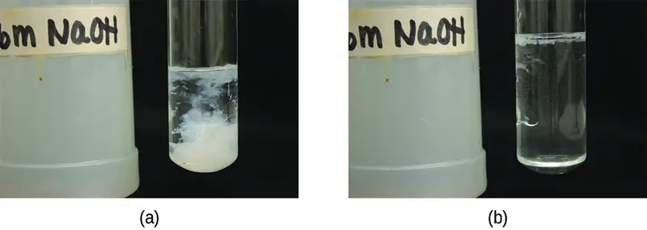
Industry uses large quantities of sodium hydroxide as a cheap, strong base. Sodium chloride is the starting material for the production of NaOH because NaCl is a less expensive starting material than the oxide. Sodium hydroxide is among the top 10 chemicals in production in the United States, and this production was almost entirely by electrolysis of solutions of sodium chloride. This process is the chlor-alkali process, and it is the primary method for producing chlorine.
Sodium hydroxide is an ionic compound and melts without decomposition. It is very soluble in water, giving off a great deal of heat and forming very basic solutions: 40 grams of sodium hydroxide dissolves in only 60 grams of water at 25 °C. Sodium hydroxide is employed in the production of other sodium compounds and is used to neutralize acidic solutions during the production of other chemicals such as petrochemicals and polymers.
Many of the applications of hydroxides are for the neutralization of acids (such as the antacid shown in Figure 18.46) and for the preparation of oxides by thermal decomposition. An aqueous suspension of magnesium hydroxide constitutes the antacid milk of magnesia. Because of its ready availability (from the reaction of water with calcium oxide prepared by the decomposition of limestone, CaCO3), low cost, and activity, calcium hydroxide is used extensively in commercial applications needing a cheap, strong base. The reaction of hydroxides with appropriate acids is also used to prepare salts.
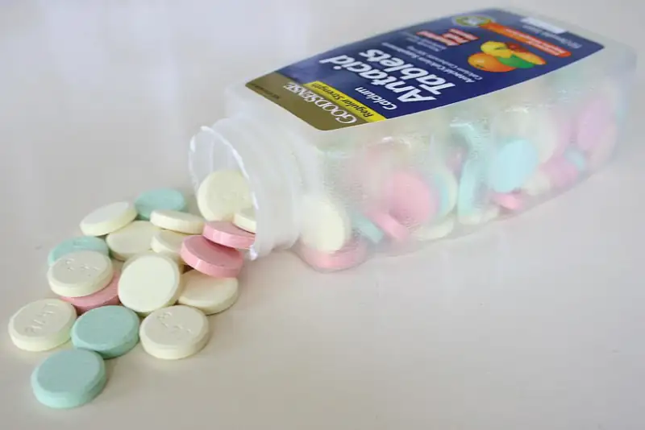
Chemistry in Everyday Life: The Chlor-Alkali Process
Although they are very different chemically, there is a link between chlorine and sodium hydroxide because there is an important electrochemical process that produces the two chemicals simultaneously. The process known as the chlor-alkali process, utilizes sodium chloride, which occurs in large deposits in many parts of the world. This is an electrochemical process to oxidize chloride ion to chlorine and generate sodium hydroxide.
Passing a direct current of electricity through a solution of NaCl causes the chloride ions to migrate to the positive electrode where oxidation to gaseous chlorine occurs when the ion gives up an electron to the electrode:
The electrons produced travel through the outside electrical circuit to the negative electrode. Although the positive sodium ions migrate toward this negative electrode, metallic sodium does not form because sodium ions are too difficult to reduce under the conditions used. (Recall that metallic sodium is active enough to react with water and hence, even if produced, would immediately react with water to produce sodium ions again.) Instead, water molecules pick up electrons from the electrode and undergo reduction to form hydrogen gas and hydroxide ions:
The overall result is the conversion of the aqueous solution of NaCl to an aqueous solution of NaOH, gaseous Cl2, and gaseous H2:
Nonmetal Oxygen Compounds¶
Most nonmetals react with oxygen to form nonmetal oxides. Depending on the available oxidation states for the element, a variety of oxides might form. Fluorine will combine with oxygen to form fluorides such as OF2, where the oxygen has a 2+-oxidation state.
Sulfur Oxygen Compounds¶
The two common oxides of sulfur are sulfur dioxide, SO2, and sulfur trioxide, SO3. The odor of burning sulfur comes from sulfur dioxide. Sulfur dioxide, shown in Figure 18.47, occurs in volcanic gases and in the atmosphere near industrial plants that burn fuel containing sulfur compounds.

Commercial production of sulfur dioxide is from either burning sulfur or roasting sulfide ores such as ZnS, FeS2, and Cu2S in air. (Roasting, which forms the metal oxide, is the first step in the separation of many metals from their ores.) A convenient method for preparing sulfur dioxide in the laboratory is by the action of a strong acid on either sulfite salts containing the \(\text{SO}_{3}{}^{2-}\) ion or hydrogen sulfite salts containing \(\text{HSO}_{3}{}^{-}.\) Sulfurous acid, H2SO3, forms first, but quickly decomposes into sulfur dioxide and water. Sulfur dioxide also forms when many reducing agents react with hot, concentrated sulfuric acid. Sulfur trioxide forms slowly when heating sulfur dioxide and oxygen together, and the reaction is exothermic:
Sulfur dioxide is a gas at room temperature, and the SO2 molecule is bent. Sulfur trioxide melts at 17 °C and boils at 43 °C. In the vapor state, its molecules are single SO3 units (shown in Figure 18.48), but in the solid state, SO3 exists in several polymeric forms.
![A ball-and-stick model shows a yellow atom labeled, “S,” bonded to three red atoms labeled, “O.” Three Lewis structures are shown connected by double-headed arrows. The left Lewis structure shows a sulfur atom single bonded on the lower left and right to oxygen atoms with three lone pairs of electrons each. The sulfur atom is also double bonded above to an oxygen atom with two lone pairs of electrons. The middle and right Lewis structures are the same as the left, but show the double bonded oxygen in the lower left and lower right positions, respectively.](img/cnx-chem-18-09-sulfrtriox.webp)
The sulfur oxides react as Lewis acids with many oxides and hydroxides in Lewis acid-base reactions, with the formation of sulfites or hydrogen sulfites, and sulfates or hydrogen sulfates, respectively.
Halogen Oxygen Compounds¶
The halogens do not react directly with oxygen, but it is possible to prepare binary oxygen-halogen compounds by the reactions of the halogens with oxygen-containing compounds. Oxygen compounds with chlorine, bromine, and iodine are oxides because oxygen is the more electronegative element in these compounds. On the other hand, fluorine compounds with oxygen are fluorides because fluorine is the more electronegative element.
As a class, the oxides are extremely reactive and unstable, and their chemistry has little practical importance. Dichlorine oxide, formally called dichlorine monoxide, and chlorine dioxide, both shown in Figure 18.49, are the only commercially important compounds. They are important as bleaching agents (for use with pulp and flour) and for water treatment.
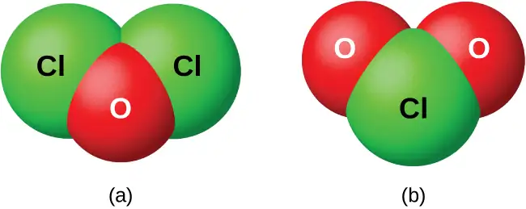
Nonmetal Oxyacids and Their Salts¶
Nonmetal oxides form acids when allowed to react with water; these are acid anhydrides. The resulting oxyanions can form salts with various metal ions.
Nitrogen Oxyacids and Salts¶
Nitrogen pentaoxide, N2O5, and NO2 react with water to form nitric acid, HNO3. Alchemists, as early as the eighth century, knew nitric acid (shown in Figure 18.50) as aqua fortis (meaning "strong water"). The acid was useful in the separation of gold from silver because it dissolves silver but not gold. Traces of nitric acid occur in the atmosphere after thunderstorms, and its salts are widely distributed in nature. There are tremendous deposits of Chile saltpeter, NaNO3, in the desert region near the boundary of Chile and Peru. Bengal saltpeter, KNO3, occurs in India and in other countries of the Far East.
![A space filling model shows a blue atom labeled, “N,” bonded on three sides to red atoms labeled, “O.” One of the red atoms is bonded to a white atom labeled, “H.” A pair of Lewis structures is shown connected by a double-headed arrow. The left Lewis structure shows an oxygen atom with two lone pairs of electrons single bonded on the left to a hydrogen atom and on the right to a nitrogen atom. The nitrogen atom is in turn single bonded to an oxygen atom with three lone pairs of electrons in an upward position and double bonded to an oxygen atom with two lone pairs of electrons in a downward position. The right Lewis structure is the same as the left, but the double bonded oxygen is in the upward position and the single bonded oxygen is in the lower position in relation to the nitrogen atom.](img/cnx-chem-18-09-hno3.webp)
In the laboratory, it is possible to produce nitric acid by heating a nitrate salt (such as sodium or potassium nitrate) with concentrated sulfuric acid:
The Ostwald process is the commercial method for producing nitric acid. This process involves the oxidation of ammonia to nitric oxide, NO; oxidation of nitric oxide to nitrogen dioxide, NO2; and further oxidation and hydration of nitrogen dioxide to form nitric acid:
Or
Pure nitric acid is a colorless liquid. However, it is often yellow or brown in color because NO2 forms as the acid decomposes. Nitric acid is stable in aqueous solution; solutions containing 68% of the acid are commercially available concentrated nitric acid. It is both a strong oxidizing agent and a strong acid.
The action of nitric acid on a metal rarely produces H2 (by reduction of H+) in more than small amounts. Instead, the reduction of nitrogen occurs. The products formed depend on the concentration of the acid, the activity of the metal, and the temperature. Normally, a mixture of nitrates, nitrogen oxides, and various reduction products form. Less active metals such as copper, silver, and lead reduce concentrated nitric acid primarily to nitrogen dioxide. The reaction of dilute nitric acid with copper produces NO. In each case, the nitrate salts of the metals crystallize upon evaporation of the resultant solutions.
Nonmetallic elements, such as sulfur, carbon, iodine, and phosphorus, undergo oxidation by concentrated nitric acid to their oxides or oxyacids, with the formation of NO2:
Nitric acid oxidizes many compounds; for example, concentrated nitric acid readily oxidizes hydrochloric acid to chlorine and chlorine dioxide. A mixture of one part concentrated nitric acid and three parts concentrated hydrochloric acid (called aqua regia, which means royal water) reacts vigorously with metals. This mixture is particularly useful in dissolving gold, platinum, and other metals that are more difficult to oxidize than hydrogen. A simplified equation to represent the action of aqua regia on gold is:
Link to Learning
Although gold is generally unreactive, you can watch a video of the complex mixture of compounds present in aqua regia dissolving it into solution.
Nitrates, salts of nitric acid, form when metals, oxides, hydroxides, or carbonates react with nitric acid. Most nitrates are soluble in water; indeed, one of the significant uses of nitric acid is to prepare soluble metal nitrates.
Nitric acid finds extensive use in the laboratory and in chemical industries as a strong acid and strong oxidizing agent. It is important in the manufacture of explosives, dyes, plastics, and drugs. Salts of nitric acid (nitrates) are valuable as fertilizers. Gunpowder is a mixture of potassium nitrate, sulfur, and charcoal.
The reaction of N2O3 with water gives a pale blue solution of nitrous acid, HNO2. However, HNO2 (shown in Figure 18.51) is easier to prepare by the addition of an acid to a solution of nitrite; nitrous acid is a weak acid, so the nitrite ion is basic in aqueous solution:
Nitrous acid is very unstable and exists only in solution. It disproportionates slowly at room temperature (rapidly when heated) into nitric acid and nitric oxide. Nitrous acid is an active oxidizing agent with strong reducing agents, and strong oxidizing agents oxidize it to nitric acid.
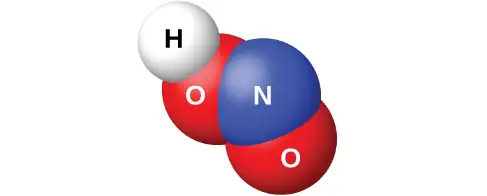
Sodium nitrite, NaNO2, is an additive to meats such as hot dogs and cold cuts. The nitrite ion has two functions. It limits the growth of bacteria that can cause food poisoning, and it prolongs the meat’s retention of its red color. The addition of sodium nitrite to meat products is controversial because nitrous acid reacts with certain organic compounds to form a class of compounds known as nitrosamines. Nitrosamines produce cancer in laboratory animals. This has prompted the FDA to limit the amount of NaNO2 in foods.
The nitrites are much more stable than the acid, but nitrites, like nitrates, can explode. Nitrites, like nitrates, are also soluble in water (AgNO2 is only slightly soluble).
Phosphorus Oxyacids and Salts¶
Pure orthophosphoric acid, H3PO4 (shown in Figure 18.52), forms colorless, deliquescent crystals that melt at 42 °C. The common name of this compound is phosphoric acid, and is commercially available as a viscous 82% solution known as syrupy phosphoric acid. One use of phosphoric acid is as an additive to many soft drinks.
One commercial method of preparing orthophosphoric acid is to treat calcium phosphate rock with concentrated sulfuric acid:
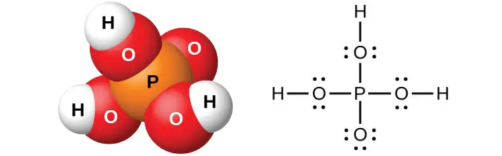
Dilution of the products with water, followed by filtration to remove calcium sulfate, gives a dilute acid solution contaminated with calcium dihydrogen phosphate, Ca(H2PO4)2, and other compounds associated with calcium phosphate rock. It is possible to prepare pure orthophosphoric acid by dissolving P4O10 in water.
The action of water on P4O6, PCl3, PBr3, or PI3 forms phosphorous acid, H3PO3 (shown in Figure 18.53). The best method for preparing pure phosphorous acid is by hydrolyzing phosphorus trichloride:
Heating the resulting solution expels the hydrogen chloride and leads to the evaporation of water. When sufficient water evaporates, white crystals of phosphorous acid will appear upon cooling. The crystals are deliquescent, very soluble in water, and have an odor like that of garlic. The solid melts at 70.1 °C and decomposes at about 200 °C by disproportionation into phosphine and orthophosphoric acid:
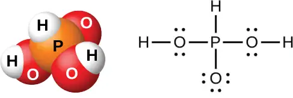
Phosphorous acid forms only two series of salts, which contain the dihydrogen phosphite ion, \(\text{H}_{2}\text{PO}_{3}{}^{-},\) or the hydrogen phosphate ion, \(\text{HPO}_{3}{}^{2-},\) respectively. It is not possible to replace the third atom of hydrogen because it is not very acidic, as it is not easy to ionize the P-H bond.
Sulfur Oxyacids and Salts¶
The preparation of sulfuric acid, H2SO4 (shown in Figure 18.54), begins with the oxidation of sulfur to sulfur trioxide and then converting the trioxide to sulfuric acid. Pure sulfuric acid is a colorless, oily liquid that freezes at 10.5 °C. It fumes when heated because the acid decomposes to water and sulfur trioxide. The heating process causes the loss of more sulfur trioxide than water, until reaching a concentration of 98.33% acid. Acid of this concentration boils at 338 °C without further change in concentration (a constant boiling solution) and is commercially concentrated H2SO4. The amount of sulfuric acid used in industry exceeds that of any other manufactured compound.
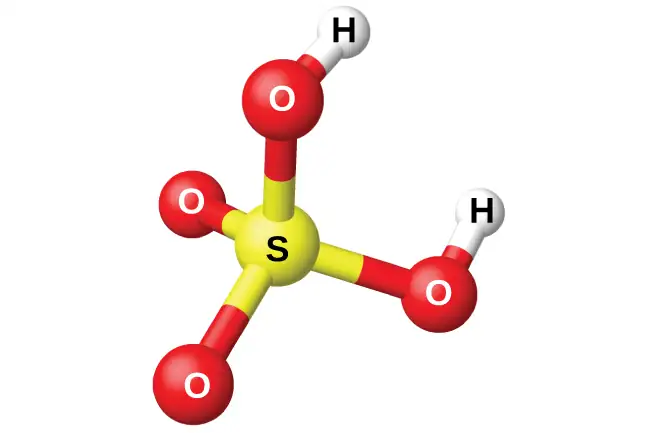
The strong affinity of concentrated sulfuric acid for water makes it a good dehydrating agent. It is possible to dry gases and immiscible liquids that do not react with the acid by passing them through the acid.
Sulfuric acid is a strong diprotic acid that ionizes in two stages. In aqueous solution, the first stage is essentially complete. The secondary ionization is not nearly so complete, and \(\text{HSO}_{4}{}^{-}\) is a moderately strong acid (about 25% ionized in solution of a \(\text{HSO}_{4}{}^{-}\) salt: Ka = 1.2 \(\times\) 10−2).
Being a diprotic acid, sulfuric acid forms both sulfates, such as Na2SO4, and hydrogen sulfates, such as NaHSO4. Most sulfates are soluble in water; however, the sulfates of barium, strontium, calcium, and lead are only slightly soluble in water.
Among the important sulfates are Na2SO4⋅10H2O and Epsom salts, MgSO4⋅7H2O. Because the \(\text{HSO}_{4}{}^{-}\) ion is an acid, hydrogen sulfates, such as NaHSO4, exhibit acidic behavior, and this compound is the primary ingredient in some household cleansers.
Hot, concentrated sulfuric acid is an oxidizing agent. Depending on its concentration, the temperature, and the strength of the reducing agent, sulfuric acid oxidizes many compounds and, in the process, undergoes reduction to SO2, \(\text{HSO}_{3}{}^{-},\) \(\text{SO}_{3}{}^{2-},\) S, H2S, or S2−.
Sulfur dioxide dissolves in water to form a solution of sulfurous acid, as expected for the oxide of a nonmetal. Sulfurous acid is unstable, and it is not possible to isolate anhydrous H2SO3. Heating a solution of sulfurous acid expels the sulfur dioxide. Like other diprotic acids, sulfurous acid ionizes in two steps: The hydrogen sulfite ion, \(\text{HSO}_{3}{}^{-},\) and the sulfite ion, \(\text{SO}_{3}{}^{2-},\) form. Sulfurous acid is a moderately strong acid. Ionization is about 25% in the first stage, but it is much less in the second (Ka1 = 1.2 \(\times\) 10−2 and Ka2 = 6.2 \(\times\) 10−8).
In order to prepare solid sulfite and hydrogen sulfite salts, it is necessary to add a stoichiometric amount of a base to a sulfurous acid solution and then evaporate the water. These salts also form from the reaction of SO2 with oxides and hydroxides. Heating solid sodium hydrogen sulfite forms sodium sulfite, sulfur dioxide, and water:
Strong oxidizing agents can oxidize sulfurous acid. Oxygen in the air oxidizes it slowly to the more stable sulfuric acid:
Solutions of sulfites are also very susceptible to air oxidation to produce sulfates. Thus, solutions of sulfites always contain sulfates after exposure to air.
Halogen Oxyacids and Their Salts¶
The compounds HXO, HXO2, HXO3, and HXO4, where X represents Cl, Br, or I, are the hypohalous, halous, halic, and perhalic acids, respectively. The strengths of these acids increase from the hypohalous acids, which are very weak acids, to the perhalic acids, which are very strong. Table 18.2 lists the known acids, and, where known, their pKa values are given in parentheses.
Table 18.2
| Oxyacids of the Halogens | ||||
|---|---|---|---|---|
| Name | Fluorine | Chlorine | Bromine | Iodine |
| hypohalous | HOF | HOCl (7.5) | HOBr (8.7) | HOI (11) |
| halous | HClO2 (2.0) | |||
| halic | HClO3 | HBrO3 | HIO3 (0.8) | |
| perhalic | HClO4 | HBrO4 | HIO4 (1.6) | |
| paraperhalic | H5IO6 (1.6) | |||
The only known oxyacid of fluorine is the very unstable hypofluorous acid, HOF, which is prepared by the reaction of gaseous fluorine with ice:
The compound is very unstable and decomposes above −40 °C. This compound does not ionize in water, and there are no known salts. It is uncertain whether the name hypofluorous acid is even appropriate for HOF; a more appropriate name might be hydrogen hypofluorite.
The reactions of chlorine and bromine with water are analogous to that of fluorine with ice, but these reactions do not go to completion, and mixtures of the halogen and the respective hypohalous and hydrohalic acids result. Other than HOF, the hypohalous acids only exist in solution. The hypohalous acids are all very weak acids; however, HOCl is a stronger acid than HOBr, which, in turn, is stronger than HOI.
The addition of base to solutions of the hypohalous acids produces solutions of salts containing the basic hypohalite ions, OX−. It is possible to isolate these salts as solids. All of the hypohalites are unstable with respect to disproportionation in solution, but the reaction is slow for hypochlorite. Hypobromite and hypoiodite disproportionate rapidly, even in the cold:
Sodium hypochlorite is an inexpensive bleach (Clorox) and germicide. The commercial preparation involves the electrolysis of cold, dilute, aqueous sodium chloride solutions under conditions where the resulting chlorine and hydroxide ion can react. The net reaction is:
The only definitely known halous acid is chlorous acid, HClO2, obtained by the reaction of barium chlorite with dilute sulfuric acid:
Filtering the insoluble barium sulfate leaves a solution of HClO2. Chlorous acid is not stable; it slowly decomposes in solution to yield chlorine dioxide, hydrochloric acid, and water. Chlorous acid reacts with bases to give salts containing the chlorite ion (shown in Figure 18.55). Sodium chlorite finds an extensive application in the bleaching of paper because it is a strong oxidizing agent and does not damage the paper.
![Three models of molecules are shown, each surrounded by brackets and each with a superscript negative sign outside the brackets. The left molecule shows a chlorine atom with two orbitals occupied by lone pairs of electrons. The chlorine atom is single bonded to two oxygen atoms, all of which are located at 109.5 degree angles from one another. The center molecule shows a space-filling model with a green atom labeled, “C l,” bonded to two red atoms labeled, “O.” The right molecule is a Lewis structure of a chlorine atom with two lone pairs of electrons surrounded by two oxygen atoms on either side, each with four lone pairs of electrons.](img/cnx-chem-18-09-chlorition.webp)
Chloric acid, HClO3, and bromic acid, HBrO3, are stable only in solution. The reaction of iodine with concentrated nitric acid produces stable white iodic acid, HIO3:
It is possible to obtain the lighter halic acids from their barium salts by reaction with dilute sulfuric acid. The reaction is analogous to that used to prepare chlorous acid. All of the halic acids are strong acids and very active oxidizing agents. The acids react with bases to form salts containing chlorate ions (shown in Figure 18.56). Another preparative method is the electrochemical oxidation of a hot solution of a metal halide to form the appropriate metal chlorates. Sodium chlorate is a weed killer; potassium chlorate is used as an oxidizing agent.
![Three models of molecules are shown, each surrounded by brackets and each with a superscript negative sign outside the brackets. The left molecule shows a chlorine atom with one orbital occupied by a lone pair of electrons. The chlorine atom is single bonded to three oxygen atoms, all of which are located at 109.5 degree angles from one another. The center molecule shows a space-filling model with a green atom labeled, “C l,” bonded to three red atoms labeled, “O.” The right molecule is a Lewis structure of a chlorine atom with a lone pair of electrons surrounded by three oxygen atoms, each with four lone pairs of electrons.](img/cnx-chem-18-09-clo3ion.webp)
Perchloric acid, HClO4, forms when treating a perchlorate, such as potassium perchlorate, with sulfuric acid under reduced pressure. The HClO4 can be distilled from the mixture:
Dilute aqueous solutions of perchloric acid are quite stable thermally, but concentrations above 60% are unstable and dangerous. Perchloric acid and its salts are powerful oxidizing agents, as the very electronegative chlorine is more stable in a lower oxidation state than 7+. Serious explosions have occurred when heating concentrated solutions with easily oxidized substances. However, its reactions as an oxidizing agent are slow when perchloric acid is cold and dilute. The acid is among the strongest of all acids. Most salts containing the perchlorate ion (shown in Figure 18.57) are soluble. It is possible to prepare them from reactions of bases with perchloric acid and, commercially, by the electrolysis of hot solutions of their chlorides.
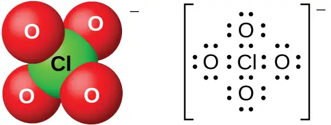
Perbromate salts are difficult to prepare, and the best syntheses currently involve the oxidation of bromates in basic solution with fluorine gas followed by acidification. There are few, if any, commercial uses of this acid or its salts.
There are several different acids containing iodine in the 7+-oxidation state; they include metaperiodic acid, HIO4, and paraperiodic acid, H5IO6. These acids are strong oxidizing agents and react with bases to form the appropriate salts.
18.10 Occurrence, Preparation, and Properties of Sulfur¶
Learning Objectives
By the end of this section, you will be able to:
- Describe the properties, preparation, and uses of sulfur
Sulfur exists in nature as elemental deposits as well as sulfides of iron, zinc, lead, and copper, and sulfates of sodium, calcium, barium, and magnesium. Hydrogen sulfide is often a component of natural gas and occurs in many volcanic gases, like those shown in Figure 18.58. Sulfur is a constituent of many proteins and is essential for life.
The Frasch process, illustrated in Figure 18.59, is important in the mining of free sulfur from enormous underground deposits in Texas and Louisiana. Superheated water (170 °C and 10 atm pressure) is forced down the outermost of three concentric pipes to the underground deposit. The hot water melts the sulfur. The innermost pipe conducts compressed air into the liquid sulfur. The air forces the liquid sulfur, mixed with air, to flow up through the outlet pipe. Transferring the mixture to large settling vats allows the solid sulfur to separate upon cooling. This sulfur is 99.5% to 99.9% pure and requires no purification for most uses.
![A diagram is shown in which a vertical tube is embedded on the lower end into a multilayered solid. The upper layer is labeled, “Soil,” and the lower layer is labeled, “Solid sulfur deposit.” A thin tube, beginning at the top of the diagram, leads into the vertical tube to the bottom and is labeled, “Compressed air.” Left-facing and then down-facing arrows are drawn on this inner tube. These arrows then turn upward at the bottom of the tube and are drawn upward to indicate the flow of, “Liquid sulfur,” from the bottom of the diagram to the top outside the inner tube. These arrows lead to a chamber at the top right of the diagram with arrows facing to the left labeled, “Sulfur, water and air.” A horizontal tube in the center right of the diagram leads to the outer tube and arrows drawn downward lead back to the bottom of the diagram. This tube is labeled, “Superheated water.”](img/cnx-chem-18-10-frachmine.webp)
Larger amounts of sulfur also come from hydrogen sulfide recovered during the purification of natural gas.
Sulfur exists in several allotropic forms. The stable form at room temperature contains eight-membered rings, and so the true formula is S8. However, chemists commonly use S to simplify the coefficients in chemical equations; we will follow this practice in this book.
Like oxygen, which is also a member of group 16, sulfur exhibits a distinctly nonmetallic behavior. It oxidizes metals, giving a variety of binary sulfides in which sulfur exhibits a negative oxidation state (2−). Elemental sulfur oxidizes less electronegative nonmetals, and more electronegative nonmetals, such as oxygen and the halogens, will oxidize it. Other strong oxidizing agents also oxidize sulfur. For example, concentrated nitric acid oxidizes sulfur to the sulfate ion, with the concurrent formation of nitrogen(IV) oxide:
The chemistry of sulfur with an oxidation state of 2− is similar to that of oxygen. Unlike oxygen, however, sulfur forms many compounds in which it exhibits positive oxidation states.
18.11 Occurrence, Preparation, and Properties of Halogens¶
Learning Objectives
By the end of this section, you will be able to:
- Describe the preparation, properties, and uses of halogens
- Describe the properties, preparation, and uses of halogen compounds
The elements in group 17 are the halogens. These are the elements fluorine, chlorine, bromine, iodine, and astatine. These elements are too reactive to occur freely in nature, but their compounds are widely distributed. Chlorides are the most abundant; although fluorides, bromides, and iodides are less common, they are reasonably available. In this section, we will examine the occurrence, preparation, and properties of halogens. Next, we will examine halogen compounds with the representative metals followed by an examination of the interhalogens. This section will conclude with some applications of halogens.
Occurrence and Preparation¶
All of the halogens occur in seawater as halide ions. The concentration of the chloride ion is 0.54 M; that of the other halides is less than 10–4 M. Fluoride also occurs in minerals such as CaF2, Ca(PO4)3F, and Na3AlF6. Chloride also occurs in the Great Salt Lake and the Dead Sea, and in extensive salt beds that contain NaCl, KCl, or MgCl2. Part of the chlorine in your body is present as hydrochloric acid, which is a component of stomach acid. Bromine compounds occur in the Dead Sea and underground brines. Iodine compounds are found in small quantities in Chile saltpeter, underground brines, and sea kelp. Iodine is essential to the function of the thyroid gland.
The best sources of halogens (except iodine) are halide salts. It is possible to oxidize the halide ions to free diatomic halogen molecules by various methods, depending on the ease of oxidation of the halide ion. Fluoride is the most difficult to oxidize, whereas iodide is the easiest.
The major method for preparing fluorine is electrolytic oxidation. The most common electrolysis procedure is to use a molten mixture of potassium hydrogen fluoride, KHF2, and anhydrous hydrogen fluoride. Electrolysis causes HF to decompose, forming fluorine gas at the anode and hydrogen at the cathode. It is necessary to keep the two gases separated to prevent their explosive recombination to reform hydrogen fluoride.
Most commercial chlorine comes from the electrolysis of the chloride ion in aqueous solutions of sodium chloride; this is the chlor-alkali process discussed previously. Chlorine is also a product of the electrolytic production of metals such as sodium, calcium, and magnesium from their fused chlorides. It is also possible to prepare chlorine by the chemical oxidation of the chloride ion in acid solution with strong oxidizing agents such as manganese dioxide (MnO2) or sodium dichromate (Na2Cr2O7). The reaction with manganese dioxide is:
The commercial preparation of bromine involves the oxidation of bromide ion by chlorine:
Chlorine is a stronger oxidizing agent than bromine. This method is important for the production of essentially all domestic bromine.
Some iodine comes from the oxidation of iodine chloride, ICl, or iodic acid, HlO3. The commercial preparation of iodine utilizes the reduction of sodium iodate, NaIO3, an impurity in deposits of Chile saltpeter, with sodium hydrogen sulfite:
Properties of the Halogens¶
Fluorine is a pale yellow gas, chlorine is a greenish-yellow gas, bromine is a deep reddish-brown liquid, and iodine is a grayish-black crystalline solid. Liquid bromine has a high vapor pressure, and the reddish vapor is readily visible in Figure 18.60. Iodine crystals have a noticeable vapor pressure. When gently heated, these crystals sublime and form a beautiful deep violet vapor.
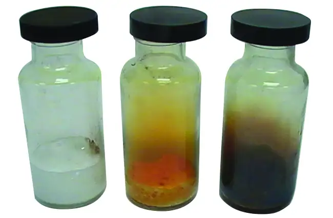
Bromine is only slightly soluble in water, but it is miscible in all proportions in less polar (or nonpolar) solvents such as chloroform, carbon tetrachloride, and carbon disulfide, forming solutions that vary from yellow to reddish-brown, depending on the concentration.
Iodine is soluble in chloroform, carbon tetrachloride, carbon disulfide, and many hydrocarbons, giving violet solutions of I2 molecules. Iodine dissolves only slightly in water, giving brown solutions. It is quite soluble in aqueous solutions of iodides, with which it forms brown solutions. These brown solutions result because iodine molecules have empty valence d orbitals and can act as weak Lewis acids towards the iodide ion. The equation for the reversible reaction of iodine (Lewis acid) with the iodide ion (Lewis base) to form triiodide ion, \(\text{I}_{3}{}^{-},\) is:
The easier it is to oxidize the halide ion, the more difficult it is for the halogen to act as an oxidizing agent. Fluorine generally oxidizes an element to its highest oxidation state, whereas the heavier halogens may not. For example, when excess fluorine reacts with sulfur, SF6 forms. Chlorine gives SCl2 and bromine, S2Br2. Iodine does not react with sulfur.
Fluorine is the most powerful oxidizing agent of the known elements. It spontaneously oxidizes most other elements; therefore, the reverse reaction, the oxidation of fluorides, is very difficult to accomplish. Fluorine reacts directly and forms binary fluorides with all of the elements except the lighter noble gases (He, Ne, and Ar). Fluorine is such a strong oxidizing agent that many substances ignite on contact with it. Drops of water inflame in fluorine and form O2, OF2, H2O2, O3, and HF. Wood and asbestos ignite and burn in fluorine gas. Most hot metals burn vigorously in fluorine. However, it is possible to handle fluorine in copper, iron, or nickel containers because an adherent film of the fluoride salt passivates their surfaces. Fluorine is the only element that reacts directly with the noble gas xenon.
Although it is a strong oxidizing agent, chlorine is less active than fluorine. Mixing chlorine and hydrogen in the dark makes the reaction between them to be imperceptibly slow. Exposure of the mixture to light causes the two to react explosively. Chlorine is also less active towards metals than fluorine, and oxidation reactions usually require higher temperatures. Molten sodium ignites in chlorine. Chlorine attacks most nonmetals (C, N2, and O2 are notable exceptions), forming covalent molecular compounds. Chlorine generally reacts with compounds that contain only carbon and hydrogen (hydrocarbons) by adding to multiple bonds or by substitution.
In cold water, chlorine undergoes a disproportionation reaction:
Half the chlorine atoms oxidize to the 1+ oxidation state (hypochlorous acid), and the other half reduce to the 1− oxidation state (chloride ion). This disproportionation is incomplete, so chlorine water is an equilibrium mixture of chlorine molecules, hypochlorous acid molecules, hydronium ions, and chloride ions. When exposed to light, this solution undergoes a photochemical decomposition:
The nonmetal chlorine is more electronegative than any other element except fluorine, oxygen, and nitrogen. In general, very electronegative elements are good oxidizing agents; therefore, we would expect elemental chlorine to oxidize all of the other elements except for these three (and the nonreactive noble gases). Its oxidizing property, in fact, is responsible for its principal use. For example, phosphorus(V) chloride, an important intermediate in the preparation of insecticides and chemical weapons, is manufactured by oxidizing the phosphorus with chlorine:
A great deal of chlorine is also used to oxidize, and thus to destroy, organic or biological materials in water purification and in bleaching.
The chemical properties of bromine are similar to those of chlorine, although bromine is the weaker oxidizing agent and its reactivity is less than that of chlorine.
Iodine is the least reactive of the halogens. It is the weakest oxidizing agent, and the iodide ion is the most easily oxidized halide ion. Iodine reacts with metals, but heating is often required. It does not oxidize other halide ions.
Compared with the other halogens, iodine reacts only slightly with water. Traces of iodine in water react with a mixture of starch and iodide ion, forming a deep blue color. This reaction is a very sensitive test for the presence of iodine in water.
Halides of the Representative Metals¶
Thousands of salts of the representative metals have been prepared. The binary halides are an important subclass of salts. A salt is an ionic compound composed of cations and anions, other than hydroxide or oxide ions. In general, it is possible to prepare these salts from the metals or from oxides, hydroxides, or carbonates. We will illustrate the general types of reactions for preparing salts through reactions used to prepare binary halides.
The binary compounds of a metal with the halogens are the halides. Most binary halides are ionic. However, mercury, the elements of group 13 with oxidation states of 3+, tin(IV), and lead(IV) form covalent binary halides.
The direct reaction of a metal and a halogen produce the halide of the metal. Examples of these oxidation-reduction reactions include:
Link to Learning
Reactions of the alkali metals with elemental halogens are very exothermic and often quite violent. Under controlled conditions, they provide exciting demonstrations for budding students of chemistry. You can view the initial heating of the sodium that removes the coating of sodium hydroxide, sodium peroxide, and residual mineral oil to expose the reactive surface. The reaction with chlorine gas then proceeds very nicely.
If a metal can exhibit two oxidation states, it may be necessary to control the stoichiometry in order to obtain the halide with the lower oxidation state. For example, preparation of tin(II) chloride requires a 1:1 ratio of Sn to Cl2, whereas preparation of tin(IV) chloride requires a 1:2 ratio:
The active representative metals—those that are easier to oxidize than hydrogen—react with gaseous hydrogen halides to produce metal halides and hydrogen. The reaction of zinc with hydrogen fluoride is:
The active representative metals also react with solutions of hydrogen halides to form hydrogen and solutions of the corresponding halides. Examples of such reactions include:
Hydroxides, carbonates, and some oxides react with solutions of the hydrogen halides to form solutions of halide salts. It is possible to prepare additional salts by the reaction of these hydroxides, carbonates, and oxides with aqueous solution of other acids:
A few halides and many of the other salts of the representative metals are insoluble. It is possible to prepare these insoluble salts by metathesis reactions that occur when solutions of soluble salts are mixed (see Figure 18.61). Metathesis reactions are examined in the chapter on the stoichiometry of chemical reactions.
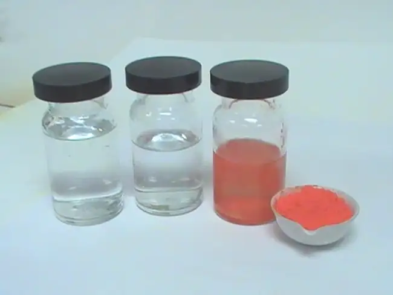
Several halides occur in large quantities in nature. The ocean and underground brines contain many halides. For example, magnesium chloride in the ocean is the source of magnesium ions used in the production of magnesium. Large underground deposits of sodium chloride, like the salt mine shown in Figure 18.62, occur in many parts of the world. These deposits serve as the source of sodium and chlorine in almost all other compounds containing these elements. The chlor-alkali process is one example.
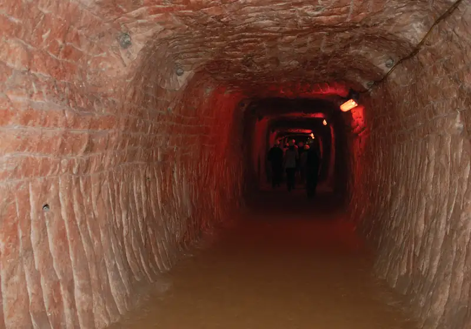
Interhalogens¶
Compounds formed from two or more different halogens are interhalogens. Interhalogen molecules consist of one atom of the heavier halogen bonded by single bonds to an odd number of atoms of the lighter halogen. The structures of IF3, IF5, and IF7 are illustrated in Figure 18.63. Formulas for other interhalogens, each of which comes from the reaction of the respective halogens, are in Table 18.3.
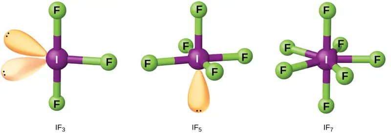
Note from Table 18.3 that fluorine is able to oxidize iodine to its maximum oxidation state, 7+, whereas bromine and chlorine, which are more difficult to oxidize, achieve only the 5+-oxidation state. A 7+-oxidation state is the limit for the halogens. Because smaller halogens are grouped about a larger one, the maximum number of smaller atoms possible increases as the radius of the larger atom increases. Many of these compounds are unstable, and most are extremely reactive. The interhalogens react like their component halides; halogen fluorides, for example, are stronger oxidizing agents than are halogen chlorides.
The ionic polyhalides of the alkali metals, such as KI3, KICl2, KICl4, CsIBr2, and CsBrCl2, which contain an anion composed of at least three halogen atoms, are closely related to the interhalogens. As seen previously, the formation of the polyhalide anion \(\text{I}_{3}{}^{-}\) is responsible for the solubility of iodine in aqueous solutions containing an iodide ion.
Table 18.3
| Interhalogens | |||
|---|---|---|---|
| YX | YX3 | YX5 | YX7 |
| ClF(g) | ClF3(g) | ClF5(g) | |
| BrF(g) | BrF3(l) | BrF5(l) | |
| BrCl(g) | |||
| IF(s) | IF3(s) | IF5(l) | IF7(g) |
| ICl(l) | ICl3(s) | ||
| IBr(s) | |||
Applications¶
The fluoride ion and fluorine compounds have many important uses. Compounds of carbon, hydrogen, and fluorine are replacing Freons (compounds of carbon, chlorine, and fluorine) as refrigerants. Teflon is a polymer composed of –CF2CF2– units. Fluoride ion is added to water supplies and to some toothpastes as SnF2 or NaF to fight tooth decay. Fluoride partially converts teeth from Ca5(PO4)3(OH) into Ca5(PO4)3F.
Chlorine is important to bleach wood pulp and cotton cloth. The chlorine reacts with water to form hypochlorous acid, which oxidizes colored substances to colorless ones. Large quantities of chlorine are important in chlorinating hydrocarbons (replacing hydrogen with chlorine) to produce compounds such as tetrachloride (CCl4), chloroform (CHCl3), and ethyl chloride (C2H5Cl), and in the production of polyvinyl chloride (PVC) and other polymers. Chlorine is also important to kill the bacteria in community water supplies.
Bromine is important in the production of certain dyes, and sodium and potassium bromides are used as sedatives. At one time, light-sensitive silver bromide was a component of photographic film.
Iodine in alcohol solution with potassium iodide is an antiseptic (tincture of iodine). Iodide salts are essential for the proper functioning of the thyroid gland; an iodine deficiency may lead to the development of a goiter. Iodized table salt contains 0.023% potassium iodide. Silver iodide is useful in the seeding of clouds to induce rain; it was important in the production of photographic film and iodoform, CHI3, is an antiseptic.
18.12 Occurrence, Preparation, and Properties of the Noble Gases¶
Learning Objectives
By the end of this section, you will be able to:
- Describe the properties, preparation, and uses of the noble gases
The elements in group 18 are the noble gases (helium, neon, argon, krypton, xenon, and radon). They earned the name “noble” because they were assumed to be nonreactive since they have filled valence shells. In 1962, Dr. Neil Bartlett at the University of British Columbia proved this assumption to be false.
These elements are present in the atmosphere in small amounts. Some natural gas contains 1–2% helium by mass. Helium is isolated from natural gas by liquefying the condensable components, leaving only helium as a gas. The United States possesses most of the world’s commercial supply of this element in its helium-bearing gas fields. Argon, neon, krypton, and xenon come from the fractional distillation of liquid air. Radon comes from other radioactive elements. More recently, it was observed that this radioactive gas is present in very small amounts in soils and minerals. Its accumulation in well-insulated, tightly sealed buildings, however, constitutes a health hazard, primarily lung cancer.
The boiling points and melting points of the noble gases are extremely low relative to those of other substances of comparable atomic or molecular masses. This is because only weak London dispersion forces are present, and these forces can hold the atoms together only when molecular motion is very slight, as it is at very low temperatures. Helium is the only substance known that does not solidify on cooling at normal pressure. It remains liquid close to absolute zero (0.001 K) at ordinary pressures, but it solidifies under elevated pressure.
Helium is used for filling balloons and lighter-than-air craft because it does not burn, making it safer to use than hydrogen. Helium at high pressures is not a narcotic like nitrogen. Thus, mixtures of oxygen and helium are important for divers working under high pressures. Using a helium-oxygen mixture avoids the disoriented mental state known as nitrogen narcosis, the so-called rapture of the deep. Helium is important as an inert atmosphere for the melting and welding of easily oxidizable metals and for many chemical processes that are sensitive to air.
Liquid helium (boiling point, 4.2 K) is an important coolant to reach the low temperatures necessary for cryogenic research, and it is essential for achieving the low temperatures necessary to produce superconduction in traditional superconducting materials used in powerful magnets and other devices. This cooling ability is necessary for the magnets used for magnetic resonance imaging, a common medical diagnostic procedure. The other common coolant is liquid nitrogen (boiling point, 77 K), which is significantly cheaper.
Neon is a component of neon lamps and signs. Passing an electric spark through a tube containing neon at low pressure generates the familiar red glow of neon. It is possible to change the color of the light by mixing argon or mercury vapor with the neon or by utilizing glass tubes of a special color.
Argon was useful in the manufacture of gas-filled electric light bulbs, where its lower heat conductivity and chemical inertness made it preferable to nitrogen for inhibiting the vaporization of the tungsten filament and prolonging the life of the bulb. Fluorescent tubes commonly contain a mixture of argon and mercury vapor. Argon is the third most abundant gas in dry air.
Krypton-xenon flash tubes are used to take high-speed photographs. An electric discharge through such a tube gives a very intense light that lasts only \(\frac{1}{50,000}\) of a second. Krypton forms a difluoride, KrF2, which is thermally unstable at room temperature.
Stable compounds of xenon form when xenon reacts with fluorine. Xenon difluoride, XeF2, forms after heating an excess of xenon gas with fluorine gas and then cooling. The material forms colorless crystals, which are stable at room temperature in a dry atmosphere. Xenon tetrafluoride, XeF4, and xenon hexafluoride, XeF6, are prepared in an analogous manner, with a stoichiometric amount of fluorine and an excess of fluorine, respectively. Compounds with oxygen are prepared by replacing fluorine atoms in the xenon fluorides with oxygen.
When XeF6 reacts with water, a solution of XeO3 results and the xenon remains in the 6+-oxidation state:
Dry, solid xenon trioxide, XeO3, is extremely explosive—it will spontaneously detonate. Both XeF6 and XeO3 disproportionate in basic solution, producing xenon, oxygen, and salts of the perxenate ion, \(\text{XeO}_{6}{}^{4-},\) in which xenon reaches its maximum oxidation sate of 8+.
Radon apparently forms RnF2—evidence of this compound comes from radiochemical tracer techniques.
Unstable compounds of argon form at low temperatures, but stable compounds of helium and neon are not known.
Chapter Review¶
Key Terms¶
- acid anhydride
- compound that reacts with water to form an acid or acidic solution
- alkaline earth metal
- any of the metals (beryllium, magnesium, calcium, strontium, barium, and radium) occupying group 2 of the periodic table; they are reactive, divalent metals that form basic oxides
- allotropes
- two or more forms of the same element, in the same physical state, with different chemical structures
- amorphous
- solid material such as a glass that does not have a regular repeating component to its three-dimensional structure; a solid but not a crystal
- base anhydride
- metal oxide that behaves as a base towards acids
- bicarbonate anion
- salt of the hydrogen carbonate ion, \(\text{HCO}_{3}{}^{-}\)
- bismuth
- heaviest member of group 15; a less reactive metal than other representative metals
- borate
- compound containing boron-oxygen bonds, typically with clusters or chains as a part of the chemical structure
- carbonate
- salt of the anion \(\text{CO}_{3}{}^{2-};\) often formed by the reaction of carbon dioxide with bases
- chemical reduction
- method of preparing a representative metal using a reducing agent
- chlor-alkali process
- electrolysis process for the synthesis of chlorine and sodium hydroxide
- disproportionation reaction
- chemical reaction where a single reactant is simultaneously reduced and oxidized; it is both the reducing agent and the oxidizing agent
- Downs cell
- electrochemical cell used for the commercial preparation of metallic sodium (and chlorine) from molten sodium chloride
- Frasch process
- important in the mining of free sulfur from enormous underground deposits
- Haber process
- main industrial process used to produce ammonia from nitrogen and hydrogen; involves the use of an iron catalyst and elevated temperatures and pressures
- halide
- compound containing an anion of a group 17 element in the 1− oxidation state (fluoride, F−; chloride, Cl−; bromide, Br−; and iodide, I−)
- Hall–Héroult cell
- electrolysis apparatus used to isolate pure aluminum metal from a solution of alumina in molten cryolite
- hydrogen carbonate
- salt of carbonic acid, H2CO3 (containing the anion \(\text{HCO}_{3}{}^{-})\) in which one hydrogen atom has been replaced; an acid carbonate; also known as bicarbonate ion
- hydrogen halide
- binary compound formed between hydrogen and the halogens: HF, HCl, HBr, and HI
- hydrogen sulfate
- \(\text{HSO}_{4}{}^{-}\) ion
- hydrogen sulfite
- \(\text{HSO}_{3}{}^{-}\) ion
- hydrogenation
- addition of hydrogen (H2) to reduce a compound
- hydroxide
- compound of a metal with the hydroxide ion OH− or the group −OH
- interhalogen
- compound formed from two or more different halogens
- metal (representative)
- atoms of the metallic elements of groups 1, 2, 12, 13, 14, 15, and 16, which form ionic compounds by losing electrons from their outer s or p orbitals
- metalloid
- element that has properties that are between those of metals and nonmetals; these elements are typically semiconductors
- nitrate
- \(\text{NO}_{3}{}^{-}\) ion; salt of nitric acid
- nitrogen fixation
- formation of nitrogen compounds from molecular nitrogen
- Ostwald process
- industrial process used to convert ammonia into nitric acid
- oxide
- binary compound of oxygen with another element or group, typically containing O2− ions or the group –O– or =O
- ozone
- allotrope of oxygen; O3
- passivation
- metals with a protective nonreactive film of oxide or other compound that creates a barrier for chemical reactions; physical or chemical removal of the passivating film allows the metals to demonstrate their expected chemical reactivity
- peroxide
- molecule containing two oxygen atoms bonded together or as the anion, \(\text{O}_{2}{}^{2-}\)
- photosynthesis
- process whereby light energy promotes the reaction of water and carbon dioxide to form carbohydrates and oxygen; this allows photosynthetic organisms to store energy
- Pidgeon process
- chemical reduction process used to produce magnesium through the thermal reaction of magnesium oxide with silicon
- polymorph
- variation in crystalline structure that results in different physical properties for the resulting compound
- representative element
- element where the s and p orbitals are filling
- representative metal
- metal among the representative elements
- silicate
- compound containing silicon-oxygen bonds, with silicate tetrahedra connected in rings, sheets, or three-dimensional networks, depending on the other elements involved in the formation of the compounds
- sulfate
- \(\text{SO}_{4}{}^{2-}\) ion
- sulfite
- \(\text{SO}_{3}{}^{2-}\) ion
- superoxide
- oxide containing the anion \(\text{O}_{2}{}^{-}\)
Key Concepts and Summary¶
18.1 Periodicity¶
This section focuses on the periodicity of the representative elements. These are the elements where the electrons are entering the s and p orbitals. The representative elements occur in groups 1, 2, and 12–18. These elements are representative metals, metalloids, and nonmetals. The alkali metals (group 1) are very reactive, readily form ions with a charge of 1+ to form ionic compounds that are usually soluble in water, and react vigorously with water to form hydrogen gas and a basic solution of the metal hydroxide. The outermost electrons of the alkaline earth metals (group 2) are more difficult to remove than the outer electron of the alkali metals, leading to the group 2 metals being less reactive than those in group 1. These elements easily form compounds in which the metals exhibit an oxidation state of 2+. Zinc, cadmium, and mercury (group 12) commonly exhibit the group oxidation state of 2+ (although mercury also exhibits an oxidation state of 1+ in compounds that contain \(\text{Hg}_{2}{}^{2+}).\) Aluminum, gallium, indium, and thallium (group 13) are easier to oxidize than is hydrogen. Aluminum, gallium, and indium occur with an oxidation state 3+ (however, thallium also commonly occurs as the Tl+ ion). Tin and lead form stable divalent cations and covalent compounds in which the metals exhibit the 4+-oxidation state.
18.2 Occurrence and Preparation of the Representative Metals¶
Because of their chemical reactivity, it is necessary to produce the representative metals in their pure forms by reduction from naturally occurring compounds. Electrolysis is important in the production of sodium, potassium, and aluminum. Chemical reduction is the primary method for the isolation of magnesium, zinc, and tin. Similar procedures are important for the other representative metals.
18.3 Structure and General Properties of the Metalloids¶
The elements boron, silicon, germanium, arsenic, antimony, and tellurium separate the metals from the nonmetals in the periodic table. These elements, called metalloids or sometimes semimetals, exhibit properties characteristic of both metals and nonmetals. The structures of these elements are similar in many ways to those of nonmetals, but the elements are electrical semiconductors.
18.4 Structure and General Properties of the Nonmetals¶
Nonmetals have structures that are very different from those of the metals, primarily because they have greater electronegativity and electrons that are more tightly bound to individual atoms. Most nonmetal oxides are acid anhydrides, meaning that they react with water to form acidic solutions. Molecular structures are common for most of the nonmetals, and several have multiple allotropes with varying physical properties.
18.5 Occurrence, Preparation, and Compounds of Hydrogen¶
Hydrogen is the most abundant element in the universe and its chemistry is truly unique. Although it has some chemical reactivity that is similar to that of the alkali metals, hydrogen has many of the same chemical properties of a nonmetal with a relatively low electronegativity. It forms ionic hydrides with active metals, covalent compounds in which it has an oxidation state of 1− with less electronegative elements, and covalent compounds in which it has an oxidation state of 1+ with more electronegative nonmetals. It reacts explosively with oxygen, fluorine, and chlorine, less readily with bromine, and much less readily with iodine, sulfur, and nitrogen. Hydrogen reduces the oxides of metals with lower reduction potentials than chromium to form the metal and water. The hydrogen halides are all acidic when dissolved in water.
18.6 Occurrence, Preparation, and Properties of Carbonates¶
The usual method for the preparation of the carbonates of the alkali and alkaline earth metals is by reaction of an oxide or hydroxide with carbon dioxide. Other carbonates form by precipitation. Metal carbonates or hydrogen carbonates such as limestone (CaCO3), the antacid Tums (CaCO3), and baking soda (NaHCO3) are common examples. Carbonates and hydrogen carbonates decompose in the presence of acids and most decompose on heating.
18.7 Occurrence, Preparation, and Properties of Nitrogen¶
Nitrogen exhibits oxidation states ranging from 3− to 5+. Because of the stability of the N≡N triple bond, it requires a great deal of energy to make compounds from molecular nitrogen. Active metals such as the alkali metals and alkaline earth metals can reduce nitrogen to form metal nitrides. Nitrogen oxides and nitrogen hydrides are also important substances.
18.8 Occurrence, Preparation, and Properties of Phosphorus¶
Phosphorus (group 15) commonly exhibits oxidation states of 3− with active metals and of 3+ and 5+ with more electronegative nonmetals. The halogens and oxygen will oxidize phosphorus. The oxides are phosphorus(V) oxide, P4O10, and phosphorus(III) oxide, P4O6. The two common methods for preparing orthophosphoric acid, H3PO4, are either the reaction of a phosphate with sulfuric acid or the reaction of water with phosphorus(V) oxide. Orthophosphoric acid is a triprotic acid that forms three types of salts.
18.9 Occurrence, Preparation, and Compounds of Oxygen¶
Oxygen is one of the most reactive elements. This reactivity, coupled with its abundance, makes the chemistry of oxygen very rich and well understood.
Compounds of the representative metals with oxygen exist in three categories (1) oxides, (2) peroxides and superoxides, and (3) hydroxides. Heating the corresponding hydroxides, nitrates, or carbonates is the most common method for producing oxides. Heating the metal or metal oxide in oxygen may lead to the formation of peroxides and superoxides. The soluble oxides dissolve in water to form solutions of hydroxides. Most metals oxides are base anhydrides and react with acids. The hydroxides of the representative metals react with acids in acid-base reactions to form salts and water. The hydroxides have many commercial uses.
All nonmetals except fluorine form multiple oxides. Nearly all of the nonmetal oxides are acid anhydrides. The acidity of oxyacids requires that the hydrogen atoms bond to the oxygen atoms in the molecule rather than to the other nonmetal atom. Generally, the strength of the oxyacid increases with the number of oxygen atoms bonded to the nonmetal atom and not to a hydrogen.
18.10 Occurrence, Preparation, and Properties of Sulfur¶
Sulfur (group 16) reacts with almost all metals and readily forms the sulfide ion, S2−, in which it has as oxidation state of 2−. Sulfur reacts with most nonmetals.
18.11 Occurrence, Preparation, and Properties of Halogens¶
The halogens form halides with less electronegative elements. Halides of the metals vary from ionic to covalent; halides of nonmetals are covalent. Interhalogens form by the combination of two or more different halogens.
All of the representative metals react directly with elemental halogens or with solutions of the hydrohalic acids (HF, HCl, HBr, and HI) to produce representative metal halides. Other laboratory preparations involve the addition of aqueous hydrohalic acids to compounds that contain such basic anions, such as hydroxides, oxides, or carbonates.
18.12 Occurrence, Preparation, and Properties of the Noble Gases¶
The most significant property of the noble gases (group 18) is their inactivity. They occur in low concentrations in the atmosphere. They find uses as inert atmospheres, neon signs, and as coolants. The three heaviest noble gases react with fluorine to form fluorides. The xenon fluorides are the best characterized as the starting materials for a few other noble gas compounds.
Exercises¶
18.1 Periodicity¶
1. How do alkali metals differ from alkaline earth metals in atomic structure and general properties?
Answer
The alkali metals all have a single s electron in their outermost shell. In contrast, the alkaline earth metals have a completed s subshell in their outermost shell. In general, the alkali metals react faster and are more reactive than the corresponding alkaline earth metals in the same period.
2. Why does the reactivity of the alkali metals decrease from cesium to lithium?
3. Predict the formulas for the nine compounds that may form when each species in column 1 of the table reacts with each species in column 2.
| 1 | 2 |
|---|---|
| Na | I |
| Sr | Se |
| Al | O |
Answer
\(\begin{array}{l} \text{Na}+\text{I}_{2}\:\longrightarrow\:\text{2NaI} \\ \text{2Na}+\text{Se}\:\longrightarrow\:\text{Na}_{2}\text{Se} \\ \text{2Na}+\text{O}_{2}\:\longrightarrow\:\text{Na}_{2}\text{O}_{2} \end{array}\)
\(\begin{array}{l} \text{Sr}+\text{I}_{2}\:\longrightarrow\:\text{SrI}_{2} \\ \text{Sr}+\text{Se}\:\longrightarrow\:\text{SrSe} \\ \text{2Sr}+\text{O}_{2}\:\longrightarrow\:\text{2SrO} \end{array}\)
\(\begin{array}{l} \text{2Al}+\text{3I}_{2}\:\longrightarrow\:\text{2AlI}_{3} \\ \text{2Al}+\text{3Se}\:\longrightarrow\:\text{Al}_{2}\text{Se}_{3} \\ \text{4Al}+\text{3O}_{2}\:\longrightarrow\:\text{2Al}_{2}\text{O}_{3} \end{array}\)
4. Predict the best choice in each of the following. You may wish to review the chapter on electronic structure for relevant examples.
(a) the most metallic of the elements Al, Be, and Ba
(b) the most covalent of the compounds NaCl, CaCl2, and BeCl2
(c) the lowest first ionization energy among the elements Rb, K, and Li
(d) the smallest among Al, Al+, and Al3+
(e) the largest among Cs+, Ba2+, and Xe
5. Sodium chloride and strontium chloride are both white solids. How could you distinguish one from the other?
Answer
The possible ways of distinguishing between the two include infrared spectroscopy by comparison of known compounds, a flame test that gives the characteristic yellow color for sodium (strontium has a red flame), or comparison of their solubilities in water. At 20 °C, NaCl dissolves to the extent of \(\frac{\text{35.7 g}}{\text{100 mL}}\) compared with \(\frac{\text{53.8 g}}{\text{100 mL}}\) for SrCl2. Heating to 100 °C provides an easy test, since the solubility of NaCl is \(\frac{\text{39.12 g}}{\text{100 mL}},\) but that of SrCl2 is \(\frac{\text{100.8 g}}{\text{100 mL}}.\) Density determination on a solid is sometimes difficult, but there is enough difference (2.165 g/mL NaCl and 3.052 g/mL SrCl2) that this method would be viable and perhaps the easiest and least expensive test to perform.
6. The reaction of quicklime, CaO, with water produces slaked lime, Ca(OH)2, which is widely used in the construction industry to make mortar and plaster. The reaction of quicklime and water is highly exothermic:
\(\text{CaO}(s)+\text{H}_{2}\text{O}(l)\:\longrightarrow\:\text{Ca}{(\text{OH})}_{2}(s)\hspace{3.0em}\Delta H=\text{−350 kJ}\:\text{mol}^{\text{−1}}\)
(a) What is the enthalpy of reaction per gram of quicklime that reacts?
(b) How much heat, in kilojoules, is associated with the production of 1 ton of slaked lime?
7. Write a balanced equation for the reaction of elemental strontium with each of the following:
(a) oxygen
(b) hydrogen bromide
(c) hydrogen
(d) phosphorus
(e) water
Answer
(a) \(\text{2Sr}(s)+\text{O}_{2}(g)\:\longrightarrow\:\text{2SrO}(s);\) (b) \(\text{Sr}(s)+\text{2HBr}(g)\:\longrightarrow\:\text{SrBr}_{2}(s)+\text{H}_{2}(g);\) (c) \(\text{Sr}(s)+\text{H}_{2}(g)\:\longrightarrow\:\text{SrH}_{2}(s);\) (d) \(\text{6Sr}(s)+\text{P}_{4}(s)\:\longrightarrow\:\text{2Sr}_{3}\text{P}_{2}(s);\) (e) \(\text{Sr}(s)+\text{2H}_{2}\text{O}(l)\:\longrightarrow\:\text{Sr}{(\text{OH})}_{2}(aq)+\text{H}_{2}(g)\)
8. How many moles of ionic species are present in 1.0 L of a solution marked 1.0 M mercury(I) nitrate?
9. What is the mass of fish, in kilograms, that one would have to consume to obtain a fatal dose of mercury, if the fish contains 30 parts per million of mercury by weight? (Assume that all the mercury from the fish ends up as mercury(II) chloride in the body and that a fatal dose is 0.20 g of HgCl2.) How many pounds of fish is this?
Answer
11 lb
10. The elements sodium, aluminum, and chlorine are in the same period.
(a) Which has the greatest electronegativity?
(b) Which of the atoms is smallest?
(c) Write the Lewis structure for the simplest covalent compound that can form between aluminum and chlorine.
(d) Will the oxide of each element be acidic, basic, or amphoteric?
11. Does metallic tin react with HCl?
Answer
Yes, tin reacts with hydrochloric acid to produce hydrogen gas.
12. What is tin pest, also known as tin disease?
13. Compare the nature of the bonds in PbCl2 to that of the bonds in PbCl4.
Answer
In PbCl2, the bonding is ionic, as indicated by its melting point of 501 °C. In PbCl4, the bonding is covalent, as evidenced by it being an unstable liquid at room temperature.
14. Is the reaction of rubidium with water more or less vigorous than that of sodium? How does the rate of reaction of magnesium compare?
18.2 Occurrence and Preparation of the Representative Metals¶
15. Write an equation for the reduction of cesium chloride by elemental calcium at high temperature.
Answer
\(\text{2CsCl}(l)+\text{Ca}(g)\:\overset{\quad\begin{array}{l} \text{countercurrent} \\ \text{fractionating} \\ \text{tower} \end{array}}{\rightarrow}\:\text{2Cs}(g)+\text{CaCl}_{2}(l)\)
16. Why is it necessary to keep the chlorine and sodium, resulting from the electrolysis of sodium chloride, separate during the production of sodium metal?
17. Give balanced equations for the overall reaction in the electrolysis of molten lithium chloride and for the reactions occurring at the electrodes. You may wish to review the chapter on electrochemistry for relevant examples.
Answer
Cathode (reduction): \(\text{2Li}^{+}+\text{2e}^{-}\:\longrightarrow\:\text{2Li}(l)\text{;}\) Anode (oxidation): \(\text{2Cl}^{-}\:\longrightarrow\:\text{Cl}_{2}(g)+\text{2e}^{-};\) Overall reaction: \(\text{2Li}^{+}+\text{2Cl}^{-}\:\longrightarrow\:\text{2Li}(l)+\text{Cl}_{2}(g)\)
18. The electrolysis of molten sodium chloride or of aqueous sodium chloride produces chlorine.
Calculate the mass of chlorine produced from 3.00 kg sodium chloride in each case. You may wish to review the chapter on electrochemistry for relevant examples.
19. What mass, in grams, of hydrogen gas forms during the complete reaction of 10.01 g of calcium with water?
Answer
0.5035 g H2
20. How many grams of oxygen gas are necessary to react completely with 3.01 \(\times\) 1021 atoms of magnesium to yield magnesium oxide?
21. Magnesium is an active metal; it burns in the form of powder, ribbons, and filaments to provide flashes of brilliant light. Why is it possible to use magnesium in construction?
Answer
Despite its reactivity, magnesium can be used in construction even when the magnesium is going to come in contact with a flame because a protective oxide coating is formed, preventing gross oxidation. Only if the metal is finely subdivided or present in a thin sheet will a high-intensity flame cause its rapid burning.
22. Why is it possible for an active metal like aluminum to be useful as a structural metal?
23. Describe the production of metallic aluminum by electrolytic reduction.
Answer
Extract from ore: \(\text{AlO}(\text{OH})(s)+\text{NaOH}(aq)+\text{H}_{2}\text{O}(l)\:\longrightarrow\:\text{Na}[\text{Al}{(\text{OH})}_{4}](aq)\)
Recover: \(\text{2Na}[\text{Al}{(\text{OH})}_{4}](s)+\text{H}_{2}\text{SO}_{4}(aq)\:\longrightarrow\:\text{2Al}{(\text{OH})}_{3}(s)+\text{Na}_{2}\text{SO}_{4}(aq)+\text{2H}_{2}\text{O}(l)\)
Sinter: \(\text{2Al}{(\text{OH})}_{3}(s)\:\longrightarrow\:\text{Al}_{2}\text{O}_{3}(s)+\text{3H}_{2}\text{O}(g)\)
Dissolve in Na3AlF6(l) and electrolyze: \(\text{Al}^{3+}+\text{3e}^{-}\:\longrightarrow\:\text{Al}(s)\)
24. What is the common ore of tin and how is tin separated from it?
25. A chemist dissolves a 1.497-g sample of a type of metal (an alloy of Sn, Pb, Sb, and Cu) in nitric acid, and metastannic acid, H2SnO3, is precipitated. She heats the precipitate to drive off the water, which leaves 0.4909 g of tin(IV) oxide. What was the percentage of tin in the original sample?
Answer
25.83%
26. Consider the production of 100 kg of sodium metal using a current of 50,000 A, assuming a 100% yield.
(a) How long will it take to produce the 100 kg of sodium metal?
(b) What volume of chlorine at 25 °C and 1.00 atm forms?
27. What mass of magnesium forms when 100,000 A is passed through a MgCl2 melt for 1.00 h if the yield of magnesium is 85% of the theoretical yield?
Answer
39 kg
18.3 Structure and General Properties of the Metalloids¶
28. Give the hybridization of the metalloid and the molecular geometry for each of the following compounds or ions. You may wish to review the chapters on chemical bonding and advanced covalent bonding for relevant examples.
(a) GeH4
(b) SbF3
(c) Te(OH)6
(d) H2Te
(e) GeF2
(f) TeCl4
(g) \(\text{SiF}_{6}{}^{2-}\)
(h) SbCl5
(i) TeF6
29. Write a Lewis structure for each of the following molecules or ions. You may wish to review the chapter on chemical bonding.
(a) H3BPH3
(b) \(\text{BF}_{4}{}^{-}\)
(c) BBr3
(d) B(CH3)3
(e) B(OH)3
Answer
(a) H3BPH3:
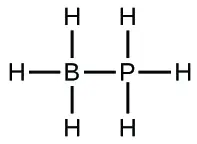
(b) \(\text{BF}_{4}{}^{-}:\)
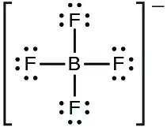
(c) BBr3:
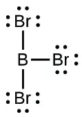
(d) B(CH3)3:
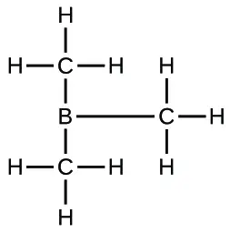
(e) B(OH)3:
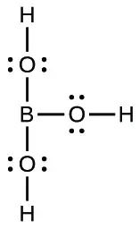
30. Describe the hybridization of boron and the molecular structure about the boron in each of the following:
(a) H3BPH3
(b) \(\text{BF}_{4}{}^{-}\)
(c) BBr3
(d) B(CH3)3
(e) B(OH)3
31. Using only the periodic table, write the complete electron configuration for silicon, including any empty orbitals in the valence shell. You may wish to review the chapter on electronic structure.
Answer
1s22s22p63s23p23d0.
32. Write a Lewis structure for each of the following molecules and ions:
(a) (CH3)3SiH
(b) \(\text{SiO}_{4}{}^{4-}\)
(c) Si2H6
(d) Si(OH)4
(e) \(\text{SiF}_{6}{}^{2-}\)
33. Describe the hybridization of silicon and the molecular structure of the following molecules and ions:
(a) (CH3)3SiH
(b) \(\text{SiO}_{4}{}^{4-}\)
(c) Si2H6
(d) Si(OH)4
(e) \(\text{SiF}_{6}{}^{2-}\)
Answer
(a) (CH3)3SiH: sp3 bonding about Si; the structure is tetrahedral; (b) \(\text{SiO}_{4}{}^{\text{4−}}:\) sp3 bonding about Si; the structure is tetrahedral; (c) Si2H6: sp3 bonding about each Si; the structure is linear along the Si-Si bond; (d) Si(OH)4: sp3 bonding about Si; the structure is tetrahedral; (e) \(\text{SiF}_{6}{}^{\text{2−}}:\) sp3d2 bonding about Si; the structure is octahedral
34. Describe the hybridization and the bonding of a silicon atom in elemental silicon.
35. Classify each of the following molecules as polar or nonpolar. You may wish to review the chapter on chemical bonding.
(a) SiH4
(b) Si2H6
(c) SiCl3H
(d) SiF4
(e) SiCl2F2
Answer
(a) nonpolar; (b) nonpolar; (c) polar; (d) nonpolar; (e) polar
36. Silicon reacts with sulfur at elevated temperatures. If 0.0923 g of silicon reacts with sulfur to give 0.3030 g of silicon sulfide, determine the empirical formula of silicon sulfide.
37. Name each of the following compounds:
(a) TeO2
(b) Sb2S3
(c) GeF4
(d) SiH4
(e) GeH4
Answer
(a) tellurium dioxide or tellurium(IV) oxide; (b) antimony(III) sulfide; (c) germanium(IV) fluoride; (d) silane or silicon(IV) hydride; (e) germanium(IV) hydride
38. Write a balanced equation for the reaction of elemental boron with each of the following (most of these reactions require high temperature):
(a) F2
(b) O2
(c) S
(d) Se
(e) Br2
39. Why is boron limited to a maximum coordination number of four in its compounds?
Answer
Boron has only s and p orbitals available, which can accommodate a maximum of four electron pairs. Unlike silicon, no d orbitals are available in boron.
40. Write a formula for each of the following compounds:
(a) silicon dioxide
(b) silicon tetraiodide
(c) silane
(d) silicon carbide
(e) magnesium silicide
41. From the data given in Appendix G, determine the standard enthalpy change and the standard free energy change for each of the following reactions:
(a) \(\text{BF}_{3}(g)+\text{3H}_{2}\text{O}(l)\:\longrightarrow\:\text{B}{(\text{OH})}_{3}(s)+\text{3HF}(g)\)
(b) \(\text{BCl}_{3}(g)+\text{3H}_{2}\text{O}(l)\:\longrightarrow\:\text{B}{(\text{OH})}_{3}(s)+\text{3HCl}(g)\)
(c) \(\text{B}_{2}\text{H}_{6}(g)+\text{6H}_{2}\text{O}(l)\:\longrightarrow\:\text{2B}{(\text{OH})}_{3}(s)+\text{6H}_{2}(g)\)
Answer
(a) ΔH° = 87 kJ; ΔG° = 44 kJ; (b) ΔH° = −109.9 kJ; ΔG° = −154.7 kJ; (c) ΔH° = −510 kJ; ΔG° = −601.5 kJ
42. A hydride of silicon prepared by the reaction of Mg2Si with acid exerted a pressure of 306 torr at 26 °C in a bulb with a volume of 57.0 mL. If the mass of the hydride was 0.0861 g, what is its molecular mass? What is the molecular formula for the hydride?
43. Suppose you discovered a diamond completely encased in a silicate rock. How would you chemically free the diamond without harming it?
Answer
A mild solution of hydrofluoric acid would dissolve the silicate and would not harm the diamond.
18.4 Structure and General Properties of the Nonmetals¶
44. Carbon forms a number of allotropes, two of which are graphite and diamond. Silicon has a diamond structure. Why is there no allotrope of silicon with a graphite structure?
45. Nitrogen in the atmosphere exists as very stable diatomic molecules. Why does phosphorus form less stable P4 molecules instead of P2 molecules?
Answer
In the N2 molecule, the nitrogen atoms have an σ bond and two π bonds holding the two atoms together. The presence of three strong bonds makes N2 a very stable molecule. Phosphorus is a third-period element, and as such, does not form π bonds efficiently; therefore, it must fulfill its bonding requirement by forming three σ bonds.
46. Write balanced chemical equations for the reaction of the following acid anhydrides with water:
(a) SO3
(b) N2O3
(c) Cl2O7
(d) P4O10
(e) NO2
47. Determine the oxidation number of each element in each of the following compounds:
(a) HCN
(b) OF2
(c) AsCl3
Answer
(a) H = 1+, C = 2+, and N = 3−; (b) O = 2+ and F = 1−; (c) As = 3+ and Cl = 1−
48. Determine the oxidation state of sulfur in each of the following:
(a) SO3
(b) SO2
(c) \(\text{SO}_{3}{}^{2-}\)
49. Arrange the following in order of increasing electronegativity: F; Cl; O; and S.
Answer
S < Cl < O < F
50. Why does white phosphorus consist of tetrahedral P4 molecules while nitrogen consists of diatomic N2 molecules?
18.5 Occurrence, Preparation, and Compounds of Hydrogen¶
51. Why does hydrogen not exhibit an oxidation state of 1− when bonded to nonmetals?
Answer
The electronegativity of the nonmetals is greater than that of hydrogen. Thus, the negative charge is better represented on the nonmetal, which has the greater tendency to attract electrons in the bond to itself.
52. The reaction of calcium hydride, CaH2, with water can be characterized as a Lewis acid-base reaction:
\(\text{CaH}_{2}(s)+\text{2H}_{2}\text{O}(l)\:\longrightarrow\:\text{Ca}{(\text{OH})}_{2}(aq)+\text{2H}_{2}(g)\)
Identify the Lewis acid and the Lewis base among the reactants. The reaction is also an oxidation-reduction reaction. Identify the oxidizing agent, the reducing agent, and the changes in oxidation number that occur in the reaction.
53. In drawing Lewis structures, we learn that a hydrogen atom forms only one bond in a covalent compound. Why?
Answer
Hydrogen has only one orbital with which to bond to other atoms. Consequently, only one two-electron bond can form.
54. What mass of CaH2 is necessary to react with water to provide enough hydrogen gas to fill a balloon at 20 °C and 0.8 atm pressure with a volume of 4.5 L? The balanced equation is:
\(\text{CaH}_{2}(s)+\text{2H}_{2}\text{O}(l)\:\longrightarrow\:\text{Ca}{(\text{OH})}_{2}(aq)+\text{2H}_{2}(g)\)
55. What mass of hydrogen gas results from the reaction of 8.5 g of KH with water?
\(\text{KH}+\text{H}_{2}\text{O}\:\longrightarrow\:\text{KOH}+\text{H}_{2}\)
Answer
0.43 g H2
18.6 Occurrence, Preparation, and Properties of Carbonates¶
56. Carbon forms the \(\text{CO}_{3}{}^{2-}\) ion, yet silicon does not form an analogous \(\text{SiO}_{3}{}^{2-}\) ion. Why?
57. Complete and balance the following chemical equations:
(a) hardening of plaster containing slaked lime
\(\text{Ca}{(\text{OH})}_{2}+\text{CO}_{2}\:\longrightarrow\)
(b) removal of sulfur dioxide from the flue gas of power plants
\(\text{CaO}+\text{SO}_{2}\:\longrightarrow\)
(c) the reaction of baking powder that produces carbon dioxide gas and causes bread to rise
\(\text{NaHCO}_{3}+\text{NaH}_{2}\text{PO}_{4}\:\longrightarrow\)
Answer
(a) \(\text{Ca}{(\text{OH})}_{2}(aq)+\text{CO}_{2}(g)\:\longrightarrow\:\text{CaCO}_{3}(s)+\text{H}_{2}\text{O}(l);\) (b) \(\text{CaO}(s)+\text{SO}_{2}(g)\:\longrightarrow\:\text{CaSO}_{3}(s);\)
(c) \(\text{2NaHCO}_{3}(s)+\text{NaH}_{2}\text{PO}_{4}(aq)\:\longrightarrow\:\text{Na}_{3}\text{PO}_{4}(aq)+\text{2CO}_{2}(g)+\text{2H}_{2}\text{O}(l)\)
58. Heating a sample of Na2CO3⋅xH2O weighing 4.640 g until the removal of the water of hydration leaves 1.720 g of anhydrous Na2CO3. What is the formula of the hydrated compound?
18.7 Occurrence, Preparation, and Properties of Nitrogen¶
59. Write the Lewis structures for each of the following:
(a) NH2−
(b) N2F4
(c) \(\text{NH}_{2}{}^{-}\)
(d) NF3
(e) \(\text{N}_{3}{}^{-}\)
Answer
(a) NH2−:
(b) N2F4:
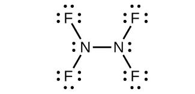
(c) \(\text{NH}_{2}{}^{-}:\)
(d) NF3:
(e) \(\text{N}_{3}{}^{-}:\)
![Three Lewis structures are shown and connected by double-headed arrows in between. The left structure shows a nitrogen atom with a lone pair of electrons triple bonded to a second nitrogen which is single bonded to a third nitrogen. The third nitrogen has three lone pairs of electrons. The entire structure is surrounded by brackets, and outside and superscript to the brackets is a negative sign. The middle structure shows a nitrogen atom with three lone pair of electrons single bonded to a second nitrogen which is triple bonded to a third nitrogen. The third nitrogen which has one lone pair of electrons. The entire structure is surrounded by brackets, and outside and superscript to the brackets is a negative sign. The right structure shows a nitrogen atom with two lone pairs of electrons double bonded to a second nitrogen which is double bonded to a third nitrogen. The third nitrogen atom has two lone pairs of electrons. The entire structure is surrounded by brackets, and outside and superscript to the brackets is a negative sign.](img/cnx-chem-18-07-exercise1e-img.webp)
60. For each of the following, indicate the hybridization of the nitrogen atom (for \(\text{N}_{3}{}^{-},\) the central nitrogen).
(a) N2F4
(b) \(\text{NH}_{2}{}^{-}\)
(c) NF3
(d) \(\text{N}_{3}{}^{-}\)
61. Explain how ammonia can function both as a Brønsted base and as a Lewis base.
Answer
Ammonia acts as a Brønsted base because it readily accepts protons and as a Lewis base in that it has an electron pair to donate.
Brønsted base: \(\text{NH}_{3}+\text{H}_{3}\text{O}^{+}\:\longrightarrow\:\text{NH}_{4}{}^{+}+\text{H}_{2}\text{O}\)
Lewis base: \(\text{2NH}_{3}+\text{Ag}^{+}\:\longrightarrow\:{\text{[H}_{3}\text{N}-\text{Ag}-\text{NH}_{3}]}^{+}\)
62. Determine the oxidation state of nitrogen in each of the following. You may wish to review the chapter on chemical bonding for relevant examples.
(a) NCl3
(b) ClNO
(c) N2O5
(d) N2O3
(e) \(\text{NO}_{2}{}^{-}\)
(f) N2O4
(g) N2O
(h) \(\text{NO}_{3}{}^{-}\)
(i) HNO2
(j) HNO3
63. For each of the following, draw the Lewis structure, predict the ONO bond angle, and give the hybridization of the nitrogen. You may wish to review the chapters on chemical bonding and advanced theories of covalent bonding for relevant examples.
(a) NO2
(b) \(\text{NO}_{2}{}^{-}\)
(c) \(\text{NO}_{2}{}^{+}\)
Answer
(a) NO2:
Nitrogen is sp2 hybridized. The molecule has a bent geometry with an ONO bond angle of approximately 120°.
(b) \(\text{NO}_{2}{}^{-}:\)
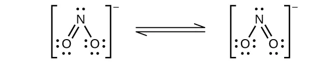
Nitrogen is sp2 hybridized. The molecule has a bent geometry with an ONO bond angle slightly less than 120°.
(c) \(\text{NO}_{2}{}^{\text{+}}:\)
Nitrogen is sp hybridized. The molecule has a linear geometry with an ONO bond angle of 180°.
64. How many grams of gaseous ammonia will the reaction of 3.0 g hydrogen gas and 3.0 g of nitrogen gas produce?
65. Although PF5 and AsF5 are stable, nitrogen does not form NF5 molecules. Explain this difference among members of the same group.
Answer
Nitrogen cannot form a NF5 molecule because it does not have d orbitals to bond with the additional two fluorine atoms.
66. The equivalence point for the titration of a 25.00-mL sample of CsOH solution with 0.1062 M HNO3 is at 35.27 mL. What is the concentration of the CsOH solution?
18.8 Occurrence, Preparation, and Properties of Phosphorus¶
67. Write the Lewis structure for each of the following. You may wish to review the chapter on chemical bonding and molecular geometry.
(a) PH3
(b) \(\text{PH}_{4}{}^{+}\)
(c) P2H4
(d) \(\text{PO}_{4}{}^{3-}\)
(e) PF5
Answer
(a)
(b)
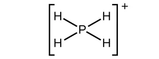
(c)
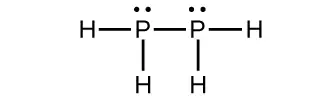
(d)
(e)
68. Describe the molecular structure of each of the following molecules or ions listed. You may wish to review the chapter on chemical bonding and molecular geometry.
(a) PH3
(b) \(\text{PH}_{4}{}^{+}\)
(c) P2H4
(d) \(\text{PO}_{4}{}^{3-}\)
69. Complete and balance each of the following chemical equations. (In some cases, there may be more than one correct answer.)
(a) \(\text{P}_{4}+\text{Al}\:\longrightarrow\)
(b) \(\text{P}_{4}+\text{Na}\:\longrightarrow\)
(c) \(\text{P}_{4}+\text{F}_{2}\:\longrightarrow\)
(d) \(\text{P}_{4}+\text{Cl}_{2}\:\longrightarrow\)
(e) \(\text{P}_{4}+\text{O}_{2}\:\longrightarrow\)
(f) \(\text{P}_{4}\text{O}_{6}+\text{O}_{2}\:\longrightarrow\)
Answer
(a) \(\text{P}_{4}(s)+\text{4Al}(s)\:\longrightarrow\:\text{4AlP}(s);\) (b) \(\text{P}_{4}(s)+\text{12Na}(s)\:\longrightarrow\:\text{4Na}_{3}\text{P}(s);\) (c) \(\text{P}_{4}(s)+\text{10F}_{2}(g)\:\longrightarrow\:\text{4PF}_{5}(l);\) (d) \(\text{P}_{4}(s)+\text{6Cl}_{2}(g)\:\longrightarrow\:\text{4PCl}_{3}(l)\) or \(\text{P}_{4}(s)+\text{10Cl}_{2}(g)\:\longrightarrow\:\text{4PCl}_{5}(l);\) (e) \(\text{P}_{4}(s)+\text{3O}_{2}(g)\:\longrightarrow\:\text{P}_{4}\text{O}_{6}(s)\) or \(\text{P}_{4}(s)+\text{5O}_{2}(g)\:\longrightarrow\:\text{P}_{4}\text{O}_{10}(s);\) (f) \(\text{P}_{4}\text{O}_{6}(s)+\text{2O}_{2}(g)\:\longrightarrow\:\text{P}_{4}\text{O}_{10}(s)\)
70. Describe the hybridization of phosphorus in each of the following compounds: P4O10, P4O6, PH4I (an ionic compound), PBr3, H3PO4, H3PO3, PH3, and P2H4. You may wish to review the chapter on advanced theories of covalent bonding.
71. What volume of 0.200 M NaOH is necessary to neutralize the solution produced by dissolving 2.00 g of PCl3 is an excess of water? Note that when H3PO3 is titrated under these conditions, only one proton of the acid molecule reacts.
Answer
291 mL
72. How much POCl3 can form from 25.0 g of PCl5 and the appropriate amount of H2O?
73. How many tons of Ca3(PO4)2 are necessary to prepare 5.0 tons of phosphorus if the yield is 90%?
Answer
28 tons
74. Write equations showing the stepwise ionization of phosphorous acid.
75. Draw the Lewis structures and describe the geometry for the following:
(a) \(\text{PF}_{4}{}^{+}\)
(b) PF5
(c) \(\text{PF}_{6}{}^{-}\)
(d) POF3
Answer
(a)
(b)
(c)
(d)
76. Why does phosphorous acid form only two series of salts, even though the molecule contains three hydrogen atoms?
77. Assign an oxidation state to phosphorus in each of the following:
(a) NaH2PO3
(b) PF5
(c) P4O6
(d) K3PO4
(e) Na3P
(f) Na4P2O7
Answer
(a) P = 3+; (b) P = 5+; (c) P = 3+; (d) P = 5+; (e) P = 3−; (f) P = 5+
78. Phosphoric acid, one of the acids used in some cola drinks, is produced by the reaction of phosphorus(V) oxide, an acidic oxide, with water. Phosphorus(V) oxide is prepared by the combustion of phosphorus.
(a) Write the empirical formula of phosphorus(V) oxide.
(b) What is the molecular formula of phosphorus(V) oxide if the molar mass is about 280.
(c) Write balanced equations for the production of phosphorus(V) oxide and phosphoric acid.
(d) Determine the mass of phosphorus required to make 1.00 \(\times\) 104 kg of phosphoric acid, assuming a yield of 98.85%.
18.9 Occurrence, Preparation, and Compounds of Oxygen¶
79. Predict the product of burning francium in air.
Answer
FrO2
80. Using equations, describe the reaction of water with potassium and with potassium oxide.
81. Write balanced chemical equations for the following reactions:
(a) zinc metal heated in a stream of oxygen gas
(b) zinc carbonate heated until loss of mass stops
(c) zinc carbonate added to a solution of acetic acid, CH3CO2H
(d) zinc added to a solution of hydrobromic acid
Answer
(a) \(\text{2Zn}(s)+\text{O}_{2}(g)\:\longrightarrow\:\text{2ZnO}(s);\) (b) \(\text{ZnCO}_{3}(s)\:\longrightarrow\:\text{ZnO}(s)+\text{CO}_{2}(g);\) (c) \(\text{ZnCO}_{3}(s)+2\text{CH}_{3}\text{COOH}(aq)\:\longrightarrow\:\text{Zn}{(\text{CH}_{3}\text{COO})}_{2}(aq)+\text{CO}_{2}(g)+\text{H}_{2}\text{O}(l);\) (d) \(\text{Zn}(s)+\text{2HBr}(aq)\:\longrightarrow\:\text{ZnBr}_{2}(aq)+\text{H}_{2}(g)\)
82. Write balanced chemical equations for the following reactions:
(a) cadmium burned in air
(b) elemental cadmium added to a solution of hydrochloric acid
(c) cadmium hydroxide added to a solution of acetic acid, CH3CO2H
83. Illustrate the amphoteric nature of aluminum hydroxide by citing suitable equations.
Answer
\(\text{Al}{(\text{OH})}_{3}(s)+3\text{H}^{\text{+}}(aq)\:\longrightarrow\:\text{Al}^{3+}+3\text{H}_{2}\text{O}(l);\) \(\text{Al}{(\text{OH})}_{3}(s)+\text{OH}^{-}\:\longrightarrow\:{[\text{Al}{(\text{OH})}_{4}]}^{-}(aq)\)
84. Write balanced chemical equations for the following reactions:
(a) metallic aluminum burned in air
(b) elemental aluminum heated in an atmosphere of chlorine
(c) aluminum heated in hydrogen bromide gas
(d) aluminum hydroxide added to a solution of nitric acid
85. Write balanced chemical equations for the following reactions:
(a) sodium oxide added to water
(b) cesium carbonate added to an excess of an aqueous solution of HF
(c) aluminum oxide added to an aqueous solution of HClO4
(d) a solution of sodium carbonate added to solution of barium nitrate
(e) titanium metal produced from the reaction of titanium tetrachloride with elemental sodium
Answer
(a) \(\text{Na}_{2}\text{O}(s)+\text{H}_{2}\text{O}(l)\:\longrightarrow\:\text{2NaOH}(aq);\) (b) \(\text{Cs}_{2}\text{CO}_{3}(s)+\text{2HF}(aq)\:\longrightarrow\:\text{2CsF}(aq)+\:\text{CO}_{2}(g)+\text{H}_{2}\text{O}(l);\) (c) \(\text{Al}_{2}\text{O}_{3}(s)+6\text{HClO}_{4}(aq)\:\longrightarrow\:\text{2Al}{(\text{ClO}_{4})}_{3}(aq)+3\text{H}_{2}\text{O}(l);\) (d) \(\text{Na}_{2}\text{CO}_{3}(aq)+\text{Ba}{(\text{NO}_{3})}_{2}(aq)\:\longrightarrow\:2\text{NaNO}_{3}(aq)+\text{BaCO}_{3}(s);\) (e) \(\text{TiCl}_{4}(l)+\text{4Na}(s)\:\longrightarrow\:\text{Ti}(s)+\text{4NaCl}(s)\)
86. What volume of 0.250 M H2SO4 solution is required to neutralize a solution that contains 5.00 g of CaCO3?
87. Which is the stronger acid, HClO4 or HBrO4? Why?
Answer
HClO4 is the stronger acid because, in a series of oxyacids with similar formulas, the higher the electronegativity of the central atom, the stronger is the attraction of the central atom for the electrons of the oxygen(s). The stronger attraction of the oxygen electron results in a stronger attraction of oxygen for the electrons in the O-H bond, making the hydrogen more easily released. The weaker this bond, the stronger the acid.
88. Write a balanced chemical equation for the reaction of an excess of oxygen with each of the following. Remember that oxygen is a strong oxidizing agent and tends to oxidize an element to its maximum oxidation state.
(a) Mg
(b) Rb
(c) Ga
(d) C2H2
(e) CO
89. Which is the stronger acid, H2SO4 or H2SeO4? Why? You may wish to review the chapter on acid-base equilibria.
Answer
As H2SO4 and H2SeO4 are both oxyacids and their central atoms both have the same oxidation number, the acid strength depends on the relative electronegativity of the central atom. As sulfur is more electronegative than selenium, H2SO4 is the stronger acid.
18.10 Occurrence, Preparation, and Properties of Sulfur¶
90. Explain why hydrogen sulfide is a gas at room temperature, whereas water, which has a lower molecular mass, is a liquid.
91. Give the hybridization and oxidation state for sulfur in SO2, in SO3, and in H2SO4.
Answer
SO2, sp2 4+; SO3, sp2, 6+; H2SO4, sp3, 6+
92. Which is the stronger acid, NaHSO3 or NaHSO4?
93. Determine the oxidation state of sulfur in SF6, SO2F2, and KHS.
Answer
SF6: S = 6+; SO2F2: S = 6+; KHS: S = 2−
94. Which is a stronger acid, sulfurous acid or sulfuric acid? Why?
95. Oxygen forms double bonds in O2, but sulfur forms single bonds in S8. Why?
Answer
Sulfur is able to form double bonds only at high temperatures (substantially endothermic conditions), which is not the case for oxygen.
96. Give the Lewis structure of each of the following:
(a) SF4
(b) K2SO4
(c) SO2Cl2
(d) H2SO3
(e) SO3
97. Write two balanced chemical equations in which sulfuric acid acts as an oxidizing agent.
Answer
There are many possible answers including: \(\text{Cu}(s)+2\text{H}_{2}\text{SO}_{4}(l)\:\longrightarrow\:\text{CuSO}_{4}(aq)+\text{SO}_{2}(g)+2\text{H}_{2}\text{O}(l)\) and \(\text{C}(s)+2\text{H}_{2}\text{SO}_{4}(l)\:\longrightarrow\:\text{CO}_{2}(g)+2\text{SO}_{2}(g)+2\text{H}_{2}\text{O}(l)\)
98. Explain why sulfuric acid, H2SO4, which is a covalent molecule, dissolves in water and produces a solution that contains ions.
99. How many grams of Epsom salts (MgSO4⋅7H2O) will form from 5.0 kg of magnesium?
Answer
5.1 \(\times\) 104 g
18.11 Occurrence, Preparation, and Properties of Halogens¶
100. What does it mean to say that mercury(II) halides are weak electrolytes?
101. Why is SnCl4 not classified as a salt?
Answer
SnCl4 is not a salt because it is covalently bonded. A salt must have ionic bonds.
102. The following reactions are all similar to those of the industrial chemicals. Complete and balance the equations for these reactions:
(a) reaction of a weak base and a strong acid
\(\text{NH}_{3}+\text{HClO}_{4}\:\longrightarrow\)
(b) preparation of a soluble silver salt for silver plating
\(\text{Ag}_{2}\text{CO}_{3}+\text{HNO}_{3}\:\longrightarrow\)
(c) preparation of strontium hydroxide by electrolysis of a solution of strontium chloride
\(\text{SrCl}_{2}(aq)+\text{H}_{2}\text{O}(l)\:\overset{\;\text{electrolysis}\;}{\rightarrow}\)
103. Which is the stronger acid, HClO3 or HBrO3? Why?
Answer
In oxyacids with similar formulas, the acid strength increases as the electronegativity of the central atom increases. HClO3 is stronger than HBrO3; Cl is more electronegative than Br.
104. What is the hybridization of iodine in IF3 and IF5?
105. Predict the molecular geometries and draw Lewis structures for each of the following. You may wish to review the chapter on chemical bonding and molecular geometry.
(a) IF5
(b) \(\text{I}_{3}{}^{-}\)
(c) PCl5
(d) SeF4
(e) ClF3
Answer
(a)
(b)
(c)
(d)
(e)
106. Which halogen has the highest ionization energy? Is this what you would predict based on what you have learned about periodic properties?
107. Name each of the following compounds:
(a) BrF3
(b) NaBrO3
(c) PBr5
(d) NaClO4
(e) KClO
Answer
(a) bromine trifluoride; (b) sodium bromate; (c) phosphorus pentabromide; (d) sodium perchlorate; (e) potassium hypochlorite
108. Explain why, at room temperature, fluorine and chlorine are gases, bromine is a liquid, and iodine is a solid.
109. What is the oxidation state of the halogen in each of the following?
(a) H5IO6
(b) \(\text{IO}_{4}{}^{-}\)
(c) ClO2
(d) ICl3
(e) F2
Answer
(a) I: 7+; (b) I: 7+; (c) Cl: 4+; (d) I: 3+; Cl: 1−; (e) F: 0
110. Physiological saline concentration—that is, the sodium chloride concentration in our bodies—is approximately 0.16 M. A saline solution for contact lenses is prepared to match the physiological concentration. If you purchase 25 mL of contact lens saline solution, how many grams of sodium chloride have you bought?
18.12 Occurrence, Preparation, and Properties of the Noble Gases¶
111. Give the hybridization of xenon in each of the following. You may wish to review the chapter on the advanced theories of covalent bonding.
(a) XeF2
(b) XeF4
(c) XeO3
(d) XeO4
(e) XeOF4
Answer
(a) sp3d hybridized; (b) sp3d2 hybridized; (c) sp3 hybridized; (d) sp3 hybridized; (e) sp3d2 hybridized;
112. What is the molecular structure of each of the following molecules? You may wish to review the chapter on chemical bonding and molecular geometry.
(a) XeF2
(b) XeF4
(c) XeO3
(d) XeO4
(e) XeOF4
113. Indicate whether each of the following molecules is polar or nonpolar. You may wish to review the chapter on chemical bonding and molecular geometry.
(a) XeF2
(b) XeF4
(c) XeO3
(d) XeO4
(e) XeOF4
Answer
(a) nonpolar; (b) nonpolar; (c) polar; (d) nonpolar; (e) polar
114. What is the oxidation state of the noble gas in each of the following? You may wish to review the chapter on chemical bonding and molecular geometry.
(a) XeO2F2
(b) KrF2
(c) \(\text{XeF}_{3}{}^{+}\)
(d) \(\text{XeO}_{6}{}^{4-}\)
(e) XeO3
115. A mixture of xenon and fluorine was heated. A sample of the white solid that formed reacted with hydrogen to yield 81 mL of xenon (at STP) and hydrogen fluoride, which was collected in water, giving a solution of hydrofluoric acid. The hydrofluoric acid solution was titrated, and 68.43 mL of 0.3172 M sodium hydroxide was required to reach the equivalence point. Determine the empirical formula for the white solid and write balanced chemical equations for the reactions involving xenon.
Answer
The empirical formula is XeF6, and the balanced reactions are: \(\begin{array}{l} \text{Xe}(g)+\text{3F}_{2}(g)\:\overset{\;\Delta\;}{\rightarrow}\:\text{XeF}_{6}(s) \\ \text{XeF}_{6}(s)+\text{3H}_{2}(g)\:\longrightarrow\:\text{6HF}(g)+\text{Xe}(g) \end{array}\)
116. Basic solutions of Na4XeO6 are powerful oxidants. What mass of Mn(NO3)2•6H2O reacts with 125.0 mL of a 0.1717 M basic solution of Na4XeO6 that contains an excess of sodium hydroxide if the products include Xe and solution of sodium permanganate?
Adapted from Chemistry 2e by OpenStax, licensed under CC BY 4.0. Access the original for free at openstax.org. Changes: converted to the web reading format of The Open Book Project.